著/八目迷 绘/くっか 译/呂郁青
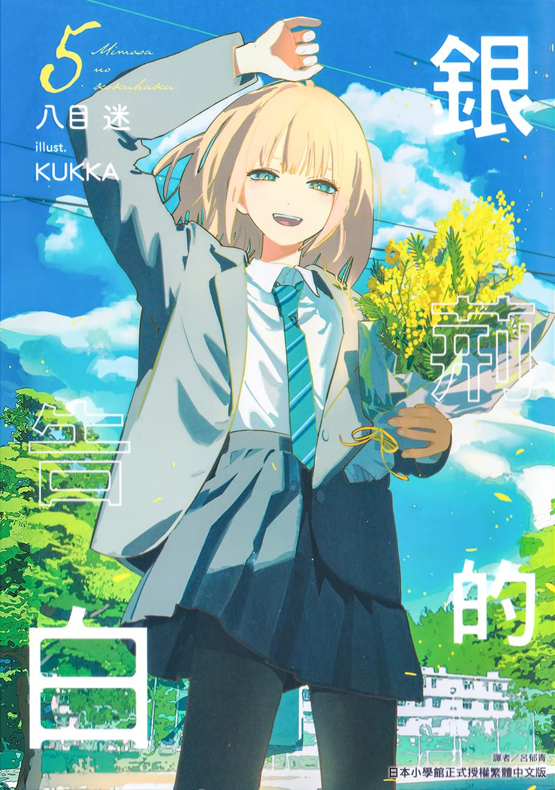 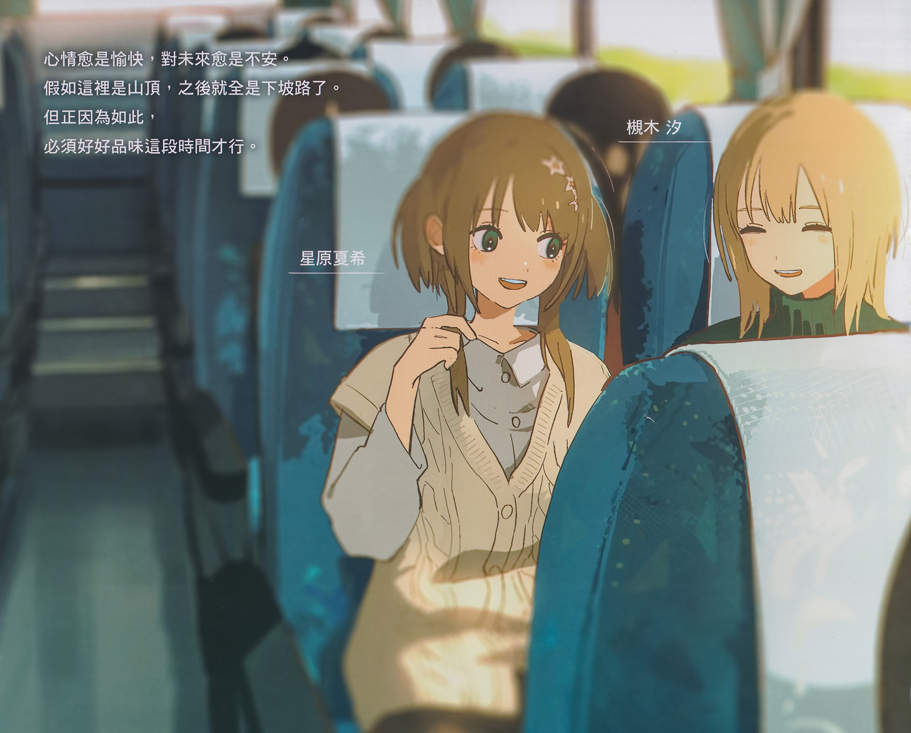
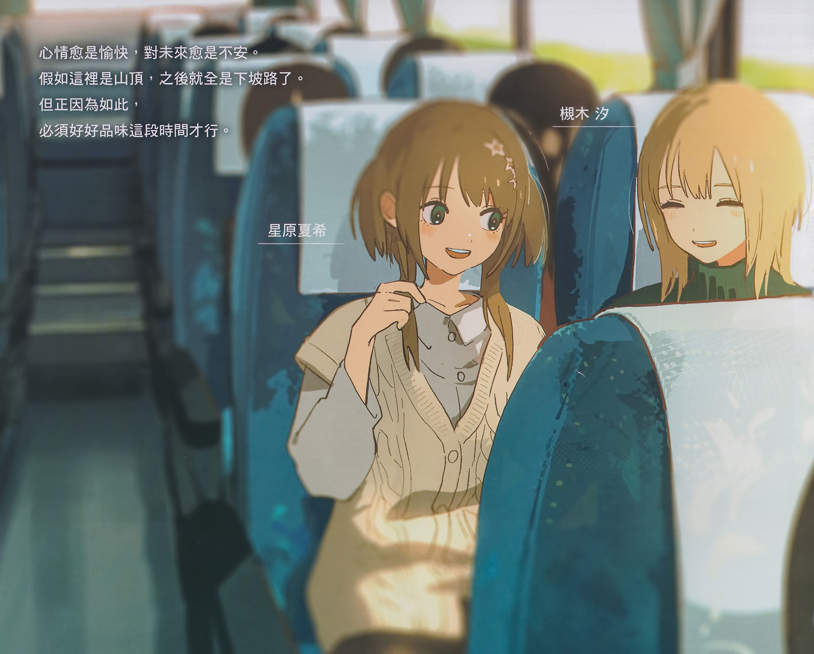
 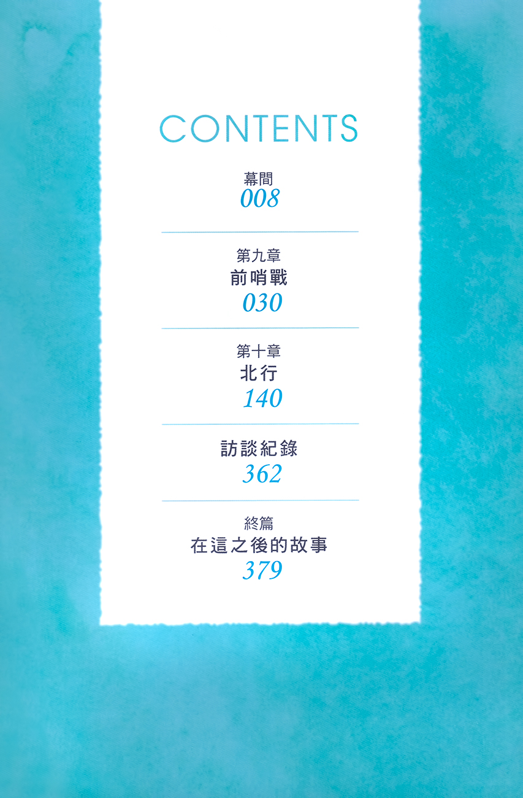
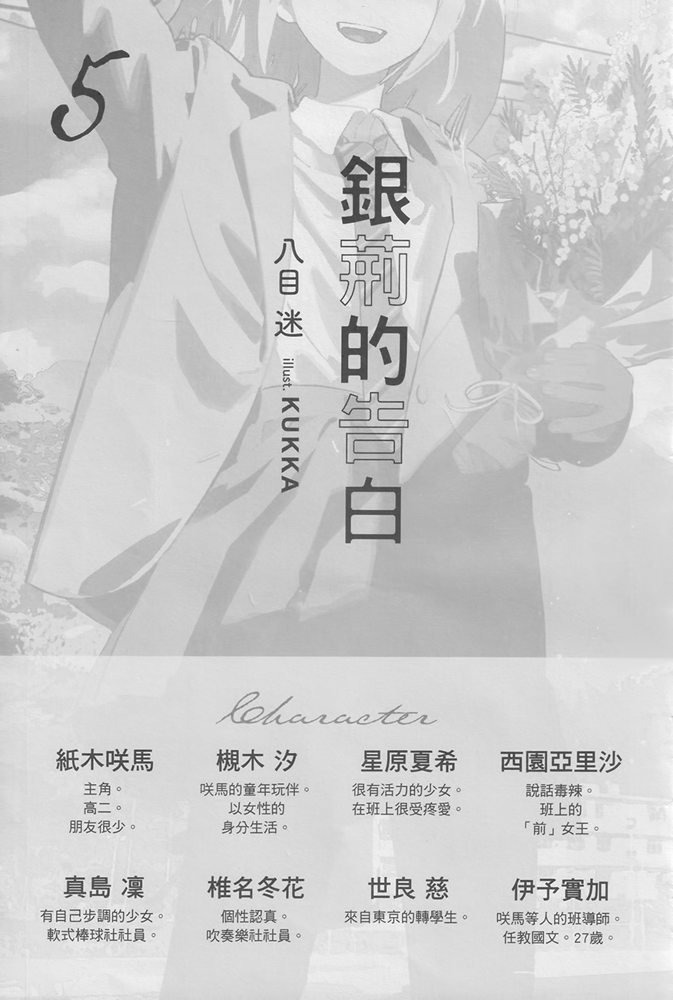
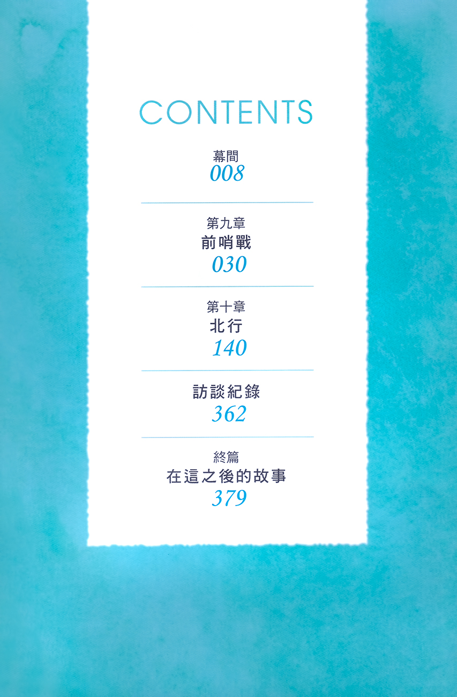
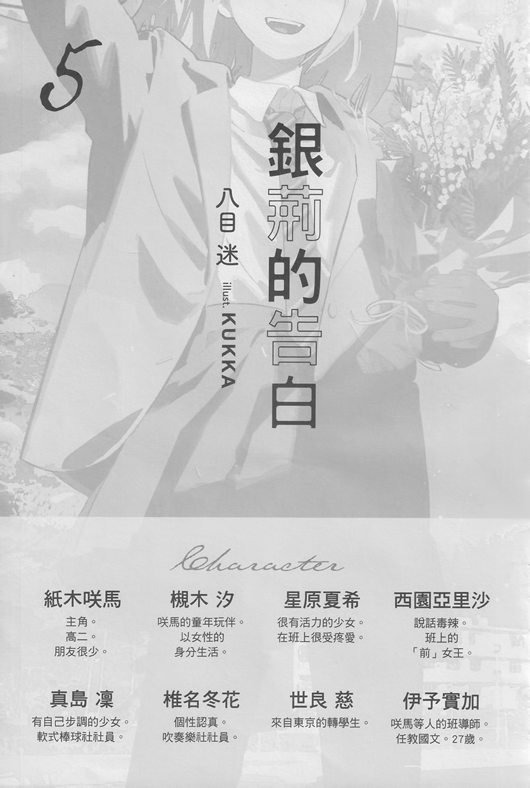
這次的學年會議是在週四的放學後，於校舍二樓會議室舉行。
學年會議是安排學校行事、討論上課進度的會議。基本上所有二年級的任課老師都得參加，但是與每個月一次的教職員會議不同，校長及其他年級導師不會參與，整體氛圍比較輕鬆。不過，正因為發言時不需要顧慮太多，大家都能暢所欲言，討論容易白熱化。
希望這次不會變成那樣。
「伊予老師，要開始了哦。」
「啊，好的。」
學年主任城島老師說完，原本在看資料的我抬起頭。
包含我在內，共有十名老師坐在排成口字形的桌子前。這次的會議，所有人都到了。
時間是下午五點。現在是期中考前夕，社團停止練習，校內因此變得很安靜。外頭天色昏暗，沒有開空調的會議室帶有寒意。
也許是為了準備考題吧，每位老師臉上都帶著倦色。特別是城島老師，身兼學年主任的他要做的事更多，看起來比其他人更疲勞。明明他年紀和我差不多，額頭面積卻已經開始變寬敞了。
「那就速戰速決吧。」
如此這般，會議開始。
城島老師簡單地說完前言，看向手上的資料。
「第一件事。最近常看到學生邊玩手機邊放學。也有一邊講電話一邊騎腳踏車，被警察攔下來告誡的學生。因此，除了在上下學的主要道路監督學生之外，也希望各位老師能在校內加強取締。」
B班的導師早乙女老師大力點頭。她是在場老師中最年長的。雖然總是化著貴婦妝，但是很關心學生，學生對她的風評很好。
「但是規定本來就已經很嚴格了吧？手機被沒收的話，要三天才會還給學生。」
「是啊。到去年為止，都是沒收的當天放學就還給學生，可是沒什麼效果。」
「要怎麼做，才能比現在更嚴格呢？」
城島老師看向手中資料。
「基本上，校規禁止學生帶手機到學校……發現有人使用的話，就全部沒收吧。」
「連下課時間用手機也要沒收嗎？」
「對。」
「欸～這樣太嚴了吧？只要不是上課時間，學校一直都默許學生使用手機的吧？」
「沒辦法啊，是學生指導處的要求。」
早乙女老師苦著臉回答。
學生指導處由體育老師與資深教師組成，有點難以反對他們的意見。雖然他們的態度高壓，可是與校長的關係很好，所以不只學生，就連其他老師也都對他們敬而遠之。
「不能稍微減輕懲罰嗎？」
「可是那樣一來，就必須更改校規，難度更高了。不但要和學生指導處交涉，還得和校長談判……雖然也有例外就是了。」
城島老師意有所指地說完，朝我看來。
「……為什麼看我？」
「沒有啊。我只是想伊予老師可能又有話想說而已。」
「居然把我說成那樣……我才沒有那麼愛和人爭論呢。」
「真的嗎～？」
城島老師一臉完全不相信，把視線從我身上移開。
有點火大。但同時我也認為，他會這麼想也有道理。
儘管不是故意的，我和學生指導處的人處得很不好。不但常因意見不合起衝突，甚至會無視他們的要求。
我本來也不是如此堅持己見的老師。應該說，我算是很明白事理的人，而且還滿討人喜歡的。可是，半年前——沒錯，自從汐的事之後，我的想法就變了。我不再過於在意其他人的看法，而是以自己能接受為優先。
雖然也因此變得比以前辛勞就是了。
「總之，從明天起，只要看到學生使用手機就沒收，這樣行了吧？」
其他老師發問後，城島老師點點頭，臉上出現一抹陰霾。
「可是，沒有事先預警就加強取締，學生會反彈吧。比較乖的學生就算了，但是也有衝動易怒的學生……」
嗯嗯，的確。好幾名老師點頭同意。
「三天實在太久了。」「我們平常也會在走廊使用手機啊。」「當老師的要以身作則吧。」「好麻煩。」「最壞的情況，說不定家長會向學校抗議呢。」
其他老師擔心起來。此時，城島老師向我問道：「伊予老師，妳覺得呢？」
「唔……也只能向學生好好說明原委，沒收手機了吧。雖然一定會有不滿的聲音，可是事先說明理由的話，學生多少能接受吧。如果家長抗議，也能好聲好氣地說明。」
「說得也是。」
我苦著臉回答，其他老師也點頭。儘管不能完全同意，但是也只能這麼做了。大家都是這種看開的感覺。
「那麼沒收手機的部分，就這麼決定了。」
城島老師隨便地做出結論。
反正平常開會就是這樣子了。在這種會議上，不可能提出能讓所有人都接受的方案。這間學校的會議是為了避免最壞的情況發生而開，主要的目的是互相妥協。我已經明白這個道理了。
「那麼，下一個議題是——」
學年會議平淡地進行。
期中考計畫、放學後的讀書會、教師出差時的代課問題、學生出路調查的進展……
會議進行得很順利，沒有特別糾結在某個議題。時間來到六點，進入最後一個議題。
「最後一個議題是修學旅行。承辦人伊予老師，請報告現狀。」
好的。我這麼回應，並低頭看起手中的資料。
「今年的修學旅行，基本上和往年一樣，都是從二月一日起的四天三夜北海道之旅。今年冬天似乎特別冷，請大家做好禦寒措施。旅遊手冊的部分，基本上也是延用去年的內容，但是有一小部分需要更改——」
喀啦。門被拉開的聲音傳來。
認出走進房間的人是誰後，我忍不住皺眉。
「啊，不用顧慮我。繼續進行吧。」
是校長。
只見他笑咪咪地與眾人打招呼，走到會議室角落，拉了張椅子坐下。
雖然有些學生說他「像七福神的惠比壽般和藹可親」，但是我對他有點敬謝不敏。其他老師應該也一樣吧。他經常突然出現在各種場合，擾亂現場的氛圍。雖然有時能帶來正面的化學變化，但這次又會如何呢？我心中只有不好的預感。
城島老師對我使眼色，要我快點說下去。
我在心中嘟囔「不用提醒，我也知道」，再次看向資料。
「……需要更改的部分，主要是行程。為了尊重學生的自主性，今年增加了自由活動的時間。往年的第三天都是學校決定的行程，今年則是由學生自己決定。」
這是去年修學旅行結束後，學年教師做的提議。由於我是接手的承辦人，所以把上一屆的建議反映在今年的旅行計畫中——我在報告時順便做了說明。其他老師們都沒有異議。
「還有，關於房間的分配。今年基本上也是兩人一房，但是我想安排槻木同學住單人房。這是詢問過本人意見後的決定。」
「原來如此。」早乙女老師點頭。
「不論和男學生或女學生同房，都會有問題呢。這樣很好。」
其他老師也都沒有意見。
我在心裡鬆了一口氣。雖然覺得應該不會有人反對，但還是有點不安。如果是半年前，肯定會有老師說些什麼吧。現在的反應，證明大家都能理解汐的情況了。不過也有可能是單純不想拖長會議的緣故啦。
「去其他人房間的部分呢？」
城島老師問道。
我頓了一拍才回問：
「去其他人房間？」
「就是晚餐後到熄燈為止的自由時間。雖然本來就規定不能去異性的房間，但是槻木同學的情況，該怎麼辦呢？」
「啊……」
我沒有想到這個問題。
既然大家都不反對汐一個人住，這裡我就該老實承認自己的疏失。
「對不起，我沒有考慮到這點。」
「是說，槻木同學的房間要安排在哪個樓層？」
「基本上，我打算安排在男生樓層。定山溪的飯店單人房和雙人房距離很遠，所以槻木同學的房間會比較接近男性教師的房間。」
「這樣啊。」
城島老師雙手抱胸，思考起來。接著有些嫌麻煩地開口：
「也不能禁止槻木同學離開房間。如果是同樓層，就讓他自由來去吧。」
嗯，這提議算妥當吧。如果只有汐能自由來去男女雙方的樓層，也不太對勁。
……不過……
對汐來說，這是她人生第一次的修學旅行。國中時，她擔心「曝光」，所以沒有參加修學旅行。這次其實也很不安，直到最後一刻，才終於決定報名。而且這次的報名期限，還為了她特地延長。
這是一直活得很侷促的汐，鼓起勇氣參加的修學旅行。身為教師，該盡可能讓她留下美好的回憶。
修學旅行的夜晚……我當學生時，大家不是丟枕頭，就是打牌，玩得很開心。除此之外，還會聊戀愛方面的話題。
我希望汐也能有這樣的回憶。希望盡可能地讓她享受修學旅行。
就算汐的情況特殊，我還是希望能對她一視同仁。
既然如此……
「那個，對不起，我想，還是讓槻木同學住在女生樓層好了。」
眾人的視線全都移到我身上。
我不在意地繼續說下去：
「如果住的是單人房，應該不會有問題吧。就算把她當成一般女學生，讓她去其他房間也——」
「不，這樣不妥吧。」
城島老師打斷我的話。
連話都不讓我說完，我很不高興。
「為什麼呢？」
「希望妳別誤會，我不是擔心槻木同學會傷害女同學哦。目前大多數女學生都接受了槻木同學，對她很友善。但正因如此，讓槻木同學和女學生住同一層不妥當。」
「『正因如此』是什麼意思呢？請說得清楚一點。」
「不，就是……」
太遲鈍了吧——城島老師臉上寫著這些字，含糊地說著。那曖昧的態度讓我更煩躁了。
我正想再次質問，「伊予、伊予。」早乙女老師勸告似地叫我。
「那個啊，就算槻木同學沒那個意思，但搞不好會有女生主動接近……我想，城島老師想說的，應該是這個意思哦。」
「啊……」
原、原來如此。
確實有這種風險。仔細想想，雖然現在已經洗心革面了，可是亞里沙曾經有好一陣子，一直針對汐處處找碴。就算是女孩子，也有成為加害者的可能。沒有想到這一層，是我太欠缺全面性的思考了。我覺得很難為情。
「……對不起，是我思慮不周。」
「沒關係啦。」
非好好反省不可。雖然該把汐當成女生看待，可是既然有先天生理構造上的不同，還是非劃清界線不可。我完全忘了這件事。
我太感情用事了。明明當了汐半年的導師，一路守望著她，努力整頓不會傷害任何人的環境，卻差點製造出可能招來問題的情況。我恨起自己的不成熟。
就在我深深自省時，城島老師控場似地咳了一聲。
「那麼，就讓槻木同學住男生樓層的單人房，只能去同層樓的男生房間。伊予老師，這樣可以吧？」
「是。沒問題……」
「……總之，先看學生們的情況再隨機應變吧。反正離修學旅行還有一段緩衝時間。」
也許是發現我陷入沮喪，城島老師不著痕跡地幫我緩頰。感覺像是被顧慮了，我心中充滿難堪與懊惱。
不論如何，議題已經討論完了。等城島老師說完收尾的場面話，就能夠散會了。雖然我有點搞砸了，但就當成圓滿結束吧。
「那麼，今天的會議就到此——」
「我可以說句話嗎？」
會議室的氣氛緊張了起來。
包含我在內，所有人的目光全都集中在校長身上。
由於他一直很安靜，使我忘了他的存在。在會議即將結束的這個時候插嘴，我感覺不妙。
我正在心裡提防，校長與我對上視線。
「伊予老師是為了讓槻木同學能更加享受修學旅行，才提議改變房間還有樓層的，對吧？雖然考慮的有點不夠全面，但是我覺得，這樣的心意非常好。」
「謝、謝謝。」
沒想到校長會稱讚我，我的聲音拔高了幾分。
儘管驚訝，但我還是很開心。校長說得沒錯。我想讓汐更加享受修學旅行。光是能理解這一點，我就很感動了。我開始覺得有些對不起校長，把他想成妨礙者。
「所以啊，我想。讓槻木同學和男學生同房，不就好了嗎？」
「欸？」
「因為這是難得的修學旅行啊。一個人住一個房間，會覺得寂寞吧。既然和女學生同房會造成問題，那麼和男學生同房不就好了？妳覺得呢？」
校長以純真的眼神看著我。
不是「妳覺得呢？」吧！我在心裡吐槽。
為什麼會回到這種最初始的問題呢？明明沒人反對汐一個人住……這個人，到底有哪根筋不對？
「呃，校長。我是先與槻木同學討論過，才決定讓她住單人房的哦。槻木同學也同意這個安排。」
「槻木同學有要求非一個人住不可嗎？」
「雖然沒有，但也不能因此讓她和男——」
「槻木同學應該有交情好的男生朋友吧？這部分要不要再討論看看？反正不會犯下什麼錯嘛。」
「呃，不是那樣的。」
「再說，只有槻木同學自己住一間，享有特殊待遇，很不公平，我覺得這樣不太好哦。這種事啊，開了先例的話，下幾屆說不定也會出現『我也想住單人房』的學生。那樣的話，該怎麼辦呢？」
「不是該怎麼辦……」
該怎麼說明才好呢？
頭好痛。雖然這個人完全搞錯重點，但是不能無視校長的發言。尤其最終決定權握在校長手上，必須先接受這個人認為的正確觀點才行。他不是基於惡意才這麼說，是以校規為優先，考慮今後學生的問題才這麼說的。必須先尊重這個人的想法，再進行反駁，否則會變成無謂的爭論。
可是啊……麻煩死了～……
不行不行，我得振作點。如果不能住單人房，就太對不起汐了。
我做起深呼吸，幫自己點燃鬥志。氧氣傳送到大腦，我重新抖擻精神，讓自己坐得端正。
「校長。之所以讓槻木同學住單人房，是因為性別不一致這種非常隱私的原因。絕對不是給她特別待遇。就算日後有人要求住單人房，除非那些學生也和槻木同學一樣，有特殊的狀況，否則不能承認……這樣說明的話，學生們應該就會接受了。相反的，假如今後提出住單人房要求的學生有正當的理由，校方當然也該好好討論是否讓那學生住單人房。」
「可是啊——」
「再說，這是槻木同學第一次在學校活動中外宿，在精神方面一定有很大的負擔。雖然住單人房有點寂寞，我確實也擔心這點，但是為了消除精神方面的壓力，恢復身心健康，槻木同學還是需要獨處的時間。」
「是這樣嗎？」
「是的。」
我用力點頭。
「唔～」校長沉吟了起來，似乎對我的堅持感到不滿。
「我實在不想改變規則呢——」
「校長。」
我直視著他眼睛，開口：
「如果真的發生問題，到時候就太遲了。」
「太誇張了吧。」
哈哈，校長噗哧笑了起來，可是其他老師都沒有笑。
校長環視周圍，發現沒人支持他的提議，表情暗了下來。最後，他投降似地舉起雙手。
「知道了，知道了。那就這麼做吧。」
他起身，走出會議室。
門被關上的同時，我渾身無力。也許是因為一下子說了太多話吧，我覺得頭有點重，像是缺氧一樣。
「好了，既然校長也回去了——」城島老師簡潔地宣布散會。眾人鬆懈下來，整理文件起身。
「呼——總算結束了。」
「今天的會開得很快呢。」
老師們悠閒地聊著，走出會議室。我看著眾人陸續離開，也站了起來。此時，早乙女老師朝我走了過來。
辛苦了。我們互相慰勞，走回教職員室。
「剛才真是好險啊。」
「是啊，幸好有成功說服校長……」
「雖然他人不壞，可是有點脫線。」
呵呵，早乙女老師笑著這麼說，我也苦笑起來。
「不過這次決定得挺順利的，球技大賽時吵很凶呢。」
「確實發生過那種事呢……」
那是秋天時的事。體育老師堅持汐該以男生身分參賽，和我起了爭執。會議開到晚上，最後決定讓汐有條件地以女生身分參賽。
直到現在，我還是無法確定那件事怎麼做才是正確的。雖然學生們沒意見，但若是稍微出錯的話，可能會變成所有人都怨聲載道的情況。應該是因為汐的人緣夠好，學生們的包容力也相對地大吧。
雖然我不覺得後悔，可是現在想想，有種走在鋼索上的感覺，讓人背脊發涼。
「話說回來，其他老師等一下要去喝一杯，要一起去嗎？」
「啊——我不用了。我還要準備考題。」
「妳還要繼續工作喔？實在太認真了。那妳加油吧。」
走進辦公室後，我和早乙女老師分開，回到自己的座位。
桌上堆著現代國語的資料，考題已經出了三分之二，再加點油，努力在今晚出完吧。
我喚醒進入睡眠模式的電腦，瞄了一眼右下方工作列的日期。
耶誕節快到了。
我沒有任何與這節日有關的預定。即使到了當天，我應該還是被工作追著跑吧。年底總是特別忙。雖然和耶誕節無關，但我還是有點憂鬱。
「唉……加油吧。」
我打開Excel，正想工作時，手機振動了起來。
我從口袋拿出手機，只見有一封電郵。
寄件人是『槻木雪』。
✽
過完年的一月八日。
我坐在椿岡車站附近的一間小居酒屋中。雖然是喝春酒的季節，但是這間店給人的感覺很沉穩，只有數名下班的上班族與看來像常客的大叔在喝酒。
我坐在吧檯的座位等人，門被猛地打開。
雪小姐微微喘著氣，走到我身邊。
「對不起，我遲到了！」
「不會，我也才剛到而已。」
雪小姐放下包包，脫下外套，將兩者放進腳邊的置物籃裡。
我們向服務生隨意點了一些酒菜。等東西送到後，我們舉起玻璃杯。
「那就，祝您新年快樂。」
「新年快樂。」
噹。乾杯後，我喝了口酒。挺好喝的。
「呼，真舒暢……」
「我是第一次來這間店，這裡很安靜呢。」
「這裡很棒吧？雖然知道的人不多。直到結婚為止，我常來這裡……是說……」
雪小姐突然把臉湊近，使我有點狼狽，她果然是個美人——我有點脫線地這麼想。
「之前已經說過了，不必用敬語和我說話啦。我們年紀差不多啊。」
「不能這樣……我們畢竟是老師和監護人。」
「真可惜。」
雪小姐嘟著嘴，把芥末章魚送入口中。
我和雪小姐是在汐高一的三方面談時認識的。當時我和雪小姐的關係，與和其他家長差不多。但是在去年六月後，為了汐的事，我開始頻繁地與雪小姐聯絡，告訴她汐在學校的狀況，或者開小小的作戰會議，因此有了私人交情，如今偶爾會像這樣私下見面。
「話說回來，我們應該是第一次約在居酒屋吧？還真稀奇呢。」
「是啊。不過新年的話，果然還是該用酒慶祝吧。而且伊予老師的酒量好像很好。」
「唔，小酌幾杯的程度吧。」
「再說啊，最近我有一些開心的事哦。」
「哦，什麼事呢？」
雪小姐靦腆地笑著。光是這樣，就看得出她很開心了。應該真的有什麼好事吧。
「汐啊，肯叫我媽媽了哦。」
「噢噢……這確實是很值得開心的事呢。」
在這之前，汐一直叫她「雪姨」。之前聽雪小姐說這件事時，因為太衝擊了，所以我印象深刻。沒想到聰明又善解人意，可以說是體貼過頭的汐，也有如此頑固堅持的部分。
「其實我也不是特別在意叫法。不是也有像《崖上的波妞》那樣的嗎？」
「喔，您說吉卜力的電影？」
「嗯。那部作品的男主角宗介叫媽媽時，都是叫名字理莎。」
「啊——確實是那樣呢。」
「所以啊，就算汐用名字來叫我，我也不會覺得很奇怪。」
「原來如此，是用波妞來鼓勵自己啊。」
「與其說鼓勵，不如說讓自己安心。告訴自己『世界上也有這樣的家庭呢』，讓自己接受。當然，我也知道這麼解釋有點自我安慰，不過樂在作品中，就是這麼回事吧。」
呵呵，雪小姐笑了起來。
「這是什麼話題啊。」
也許是喝了酒的緣故，她比平常多話。
雪小姐喝起第二杯啤酒，我則點了熱的日本酒。
「不過啊，我懂這種心情哦。看電影時，我也會因為很普通的場面哭呢。特別是喝酒時，超容易哭。」
「沒錯沒錯！淚腺會變得非常脆弱。喝酒時要是聽到中島美雪的歌，一定會哭。」
「唔哇～我超級懂……」
我們聊得愈來愈熱烈，喝酒的速度也快了起來，吃小菜的速度也變快了。
這間店的酒和料理都很美味。不愧是雪小姐推薦的店。令人舒適的酣醉感湧上，感覺身體暖了起來。
我已經很久沒有這麼愉快地聊天喝酒了……最近一直被工作追著跑，連教師們的聚餐都沒空去。
既然工作得那麼賣力，今天就放開地喝吧。
一個小時後。
我醉得亂七八糟。
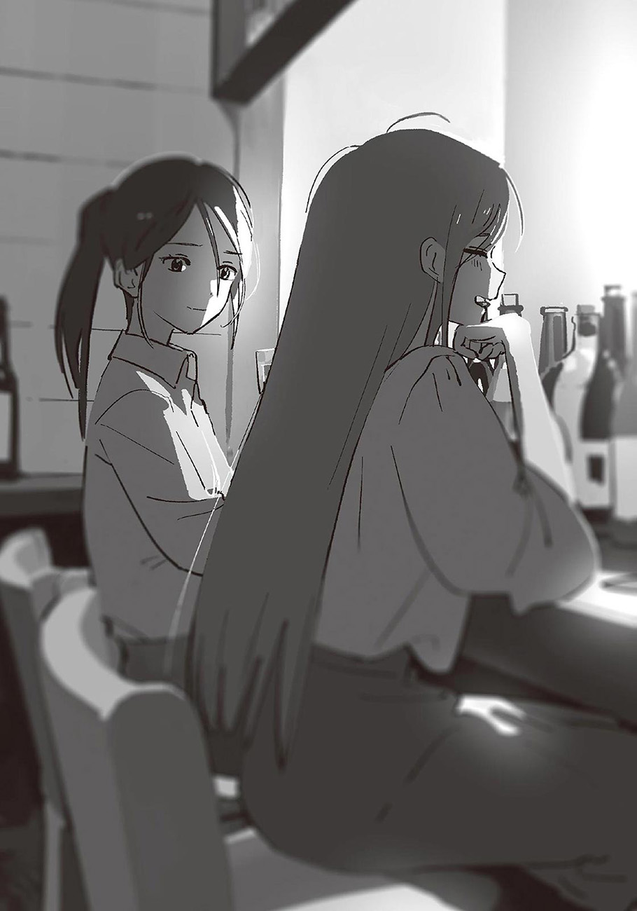「真～的有夠氣人！明明是成年人了，還像小孩子一樣鬧脾氣……」
「是啊是啊——多說一點——」
雪小姐哈哈笑著，看來她也醉了。
「我啊～只不過是想好好討論事情而已……可是那些觀念還留在昭和時代的老男人，馬上就擺出被人找碴的嘴臉。被女人反駁就那麼生氣？好歹也是身為老師的人，肚量比學生還小是怎樣啦……」
啊，不好。這樣非常不好。不該向監護人抱怨工作上的事。
可是，一邊喝酒一邊抱怨的感覺，實在太舒服了。
「可惡～～如果我有校長的權力，我一定要把學生指導處的老師全部換掉……」
「伊予老師真的很努力又認真呢。」
雪小姐慰勞著我，「沒有沒有。」我搖頭。
「我完全不行啊……每天忙得暈頭轉向……都快被身為教師的責任壓垮了……」
不妙，情緒上來了……得喝更多酒才行。我心想，又喝了一口日本酒。
「修學旅行的房間，妳不是堅持要讓汐住個人房嗎？我很感謝妳哦。妳能成為汐的導師，真是太好了。」
「等一下～這樣說我會想哭啦～」
雖然我是半開玩笑地說的，但好像真的會哭出來。我連忙拿起店裡提供的溼毛巾按住眼頭。
「我真的……沒什麼了不起的。都是汐自己很努力的關係。」
「呵呵，是這樣嗎？」
我放下溼毛巾，夾起味噌滷肉放進嘴裡。肉滷得很入味，入口即化，非常好吃。
雪小姐優雅地喝著紅酒，感慨地瞇起眼睛。
「最近啊，汐變得很有活力哦。不但放假時會打扮得漂漂亮亮地出門……也比以前放得開，還會主動問我衣服和化妝的事。」
「啊～難道說……」
我吞下口中的滷肉，發問：
「她有戀人了？」
「戀人嗎？」
雪小姐溫柔地垂下眼角。
「是的話就太好了。」
「阿嚏！」
身邊傳來輕微的噴嚏聲。
「會冷嗎？」我發問，「只是鼻子有點癢而已。」汐這麼說，把圍巾拉高。
我轉動身體，看向隊伍前方。還要等五組人。可麗餅的香氣飄了過來，雖然才剛吃過午餐，嘴巴還是忍不住分泌唾液。
我和汐正在隔壁縣的鬧區排隊。這是我們在過年後第三次單獨出遊了。但這是我們第一次出遠門到隔壁縣玩。因為是寒假的最後一天嗎？或者平常就是這麼熱鬧呢？總之人真的很多。
「咲馬，你想好要吃哪種口味了嗎？」
「我還在思考……應該會選有香蕉的那種吧。你呢？」
「我想試試烤蘋果的。因為沒吃過。」
「哦——還有那種口味啊？我也來試試特殊的口味好了。」
「那要試這種嗎？酪梨口味。」
「不，那種鹹的可麗餅……和我的信仰不同。」
「信仰不同是什麼啊？」
汐笑了起來。
「以前全家人去AEON時，我吃過包熱狗的可麗餅。那是很久以前的事了，我也忘了為什麼點那種口味，但是咬下去的瞬間，我受到很大的衝擊。居然有不甜的可麗餅。」
「因為是包熱狗啊。」
「是沒錯。可是『可麗餅是甜的』的刻板印象比我以為的還要強烈，害我陷入混亂。我愈吃，愈想念甜的可麗餅，為什麼要點這種東西啊？我超後悔的……最後我逼彩花把她的草莓巧克力可麗餅和我的交換。」
「彩花真可憐……」
的確。那樣對彩花太過分了。現在想想，我小時候真的很不把她放在心上。應該是以前對妹妹太壞，所以她現在才會這麼討厭我吧。應該好好珍惜妹妹才對。
「是說，信仰不同的說法根本不正確吧。」
「因為想不到其他說法啊。」
「至少改成黨派不同吧。」
就在我們閒聊時，輪到我們點餐了。
汐點的是烤蘋果千層酥口味可麗餅，我點的是基本款的香蕉卡士達口味。店員複述了我們點的口味後，以確認的眼神看著我們。
「情侶的話有打折……要用情侶折扣嗎？」
「啊，那就麻煩了。」
我沒向汐確認，直接如此回答。
店員操縱著收銀機，螢幕上我和汐的金額各少了一百圓。
結完帳後，我和汐移動到櫃檯旁，等可麗餅做好。
汐瞥了我一眼。
「可以嗎？」
他以調侃的語氣發問。
「什、什麼可以？」
「情侶折扣。」
「因為我們正在交往啊……」
總覺得說出來很難為情。
但這是事實。
✽
——我們交往吧。
一星期前，我和汐去看元旦日出時，我對他這麼說。
汐帶我去的，是某座山丘上，視野良好的小空地。當時，潔白的晨曦照耀周圍，除了我和汐，周圍沒有其他人。
就情境與氛圍而言，全都無可挑剔。
雖然我說的「交往」，確實是那個意思，但與其說是告白，不如說是提議。汐似乎也察覺到這點，所以皺著眉，以略帶警戒的眼神看著我。
「交往……和咲馬？」
從口中呼出的白色氣息，在風中變細變長，逐漸消失。
我安靜地點頭。
「嗯。不是一起去買東西或者幫忙做事的那種交往，是……真真正正的戀愛的意思。」
「真真正正，嗎？」
汐的聲音中帶著明顯的責備之意。「真真正正」這幾個字，似乎讓他產生誤解了。
「我說啊，咲馬。雖然我不想這麼說……可以別再提這個話題了嗎？」
「咦！？」
雖然我預測過汐的反應會很消極，但是沒想到他甚至不想談論這話題。
「為、為什麼？」
「你看。這片風景多麼美麗。」
汐轉頭看向朝陽，眩目似地瞇細眼睛。白皙透明的臉頰，在曙光的照耀下，顯得特別有光澤。那清爽的側臉，光是看著，就有種心靈受到洗滌的感覺。
「我不想在這麼舒服的早晨談論那種沉重的話題，把氣氛弄僵。」
「說……」
說得也是。我差點這麼回應。不對不對，但是又改變想法。
「為什麼你覺得氣氛一定會弄僵啊？」
「談這個話題時，幾乎每次都會變成那樣啊，不是嗎？」
「是沒錯……但是也不等於這次也是吧。」
「反正你也不是真心的吧？」
汐輕描淡寫地說出的話，有如鋒利的刀刃，深深刺進我胸口。那是對我一直以來的曖昧態度的責備，以及少許的自嘲。是我太沒用，才會被他這麼說。
「一次就好，我希望你能好好地聽我說話。」
我以認真的態度，再次提出要求。
雖然汐露出明顯不情願的表情，最後還是看開似地嘆氣。
「好吧。」
我鬆了一口氣。
在那之後，我們換地方說話。我們走下山丘，沿著國道前進。由於天才剛亮，店家都還沒開門。儘管如此，路上卻有不少人與車。他們應該都是來看元旦的日出，或者是已經看完，正要回家的人吧。
我們在路邊發現一座小公園，決定在那兒說話。我們走進公園，在長椅坐下。臀部傳來冰冷的感覺，坐在我身邊的汐打了一個哆唆，似乎有點冷。
「想喝什麼嗎？」
「你要去買飲料嗎？那我也一起去。」
「不用了。因為你願意聽我說話，所以我請客。」
「是嗎？那我要喝熱咖啡，有加糖的。」
瞭解。我說完，朝公園出入口的自動販賣機前進。一面走，一面把手伸進褲子口袋裡。
「……」
我轉了180度，回到長椅那兒。
「好快。已經買好了？」
「我忘了帶錢包出門……」
「欸……什麼啊……」
汐會傻眼也是當然的。假如立場相反，我八成也會有同樣的反應。雖然是想稍微表現自己男子氣慨的行為，反而出了大糗。
「真拿你沒辦法。你想喝什麼？」
「咦？不用啦。」
「沒關係啦。反正不是大錢。你就乖乖讓我請吧。」
「那不然，至少一起去自動販賣機那裡。」
什麼叫「至少」啊？連我自己都不知道這是在讓步什麼。
我們兩人一起走向自動販賣機，汐幫我買了咖啡。接下來明明要說重要的事，但是還沒開始說，我就漏氣了。
我把罐裝咖啡當成暖暖包，握在手中，沮喪地垂著頭。
「……感覺真遜。」
「你又不是現在才這樣。」
「真是慚愧……」
「然後呢？你想說什麼？」
汐似乎想盡快結束這話題。
看樣子，不是能坐下來慢慢聊的情況。還是配合汐，快點說完吧。其實我也不想把氣氛搞得很嚴肅。
我打開罐裝咖啡的拉環，喝了一口，開始說道：
「雖然說這種話，感覺很突然……不過啊，我以前一直把交往看成很神聖的事哦。比如撿到掉下來的手帕，以此為契機交往，成為情侶之類的。我會憧憬那樣的戀愛，覺得應該要那樣發展才對。」
「……沒什麼不好的啊。雖然有點夢想家過頭了。」
「是啊。我確實是夢想家。而且你說得沒錯，那種憧憬沒什麼不好的……可是我也會擔心，如果太重視理想的情境，說不定會讓伸手可及的幸福溜走。得更加正視現實才對。」
汐有些坐立難安似地微微歪頭。
「對不起，我不知道你想說什麼。」
「也就是說，在想太多之前，先交往看看。而且也有沒交往過就不會知道的事吧？相親也是出自類似『以結婚為前提認識，再慢慢加深愛情』的思考方式啊。」
「結、結婚？」
汐吃驚地拔高聲音。
我也有點慌張。自己剛才似乎在無意之間說了不得了的話。
「呃，只是打比方哦？」
「我、我知道啦！我才沒有誤會呢，笨蛋！」
汐真的生氣了。
「對、對不起。」
汐以雙手握住罐裝的咖啡歐蕾，喝了起來。我看著他微微上下的喉結，等他再次開口。
呼，汐喘了口氣，放下罐子。
「我知道你想說的了。」
他以冷靜下來的語氣接著說：
「簡單來說，就是試著交往看看吧。雖然這提議不壞，可是，該怎麼說呢。我想，這應該是心情上的問題，不是你的提議有什麼錯……」
汐說得很含糊，似乎有點難以啟齒。
「到頭來，這是妥協吧。」
「妥協……？」
「這只是你放棄了憧憬的浪漫戀愛，在無奈的情況下配合我，不是嗎？」
「不是！不對！」
我立刻否認。聲音不自覺地大了起來，害汐嚇了一跳，手中的咖啡歐蕾潑出，弄髒了他的指尖。
「啊，對不起……」
雖然並非被說中真心話，我仍然失去冷靜。我從口袋中掏出手帕，朝汐遞出。汐凝視起那條手帕。
「……明明忘了帶錢包，卻記得帶手帕啊？」
「的確……為什麼呢？」
「我怎麼知道……」
我們說著脫線的對話，汐接過手帕。我看著他仔細地擦手指與飲料罐的模樣，繼續說下去：
「先說清楚，我不是出於無奈哦。提議交往，是因為我想那麼做。」
汐的動作頓了一下。他垂眼看向自己的手。
「……我知道。我剛才是故意那樣說的。」
把潑出的咖啡歐蕾擦乾淨後，汐把手帕放在大腿上，正正方方地折了起來。真是仔細又認真啊，我本來那麼想，但那似乎單純是因為雙手沒事做的關係。
「我啊，應該也是希望能和你……變成那樣的關係的。可是突然說要交往，反而開始不安了……會想拉起防線。」
我懂那種心情。
人與人靠得愈近，愈容易意識到自己與他人之間的隔閡。隔閡會以觀念或想法不同的形式具體顯現，人們有時能因此互相磨合、共同成長，但也有可能因此斷絕關係。
而且汐的情況更複雜。
對我來說，汐是男生朋友，小時候和我很要好的童年玩伴……雖然我已經接受他是女孩子的事了，但是和他談戀愛，我還是會覺得很困惑。兩人之間的隔閡，比普通的男女更大。
——你對我好，我會很難受呢。
暑假時，汐曾經無意識地這麼說過。雖然他立刻收回那些話，但是無法否認，那些話是事實。那時候的我沒有意識到，對被自己甩掉的人溫柔，是多麼殘酷的事。
不論走近，或者推開，都會傷害他人。
可是，儘管如此，我還是想和汐維持關係。
為了確認自己的心情。
「我懂你的不安。但是包含這部分在內，我還是想和你交往。」
我說著，用力握緊咖啡罐。這是鐵罐，就算用握緊，也不會凹陷變形。手掌中的熱度與體溫之間的差距，逐漸消失。
雖然汐一直低著頭，但最後下定決心似地朝我看來。
「我知道了。那就交往吧。」
握緊咖啡罐的手，不再用力。
太好了——
老實說，我很不安。不是擔心汐拒絕和我交往。不對，我當然也會那麼擔心，但我最擔心的是——汐答應和我交往時，我能不能感到開心。
不過現在，我可以安心了。
幸好我能因為可以和汐交往而感到開心。
「那就，今後請多指教。」
我笑著說。汐的表情也放鬆下來，開口：
「還是算了。」
「咦～～！？」
這、這是什麼發展！？為什麼！？
究竟是什麼樣的心境變化？我正感到慌亂，汐把頭撇向一旁。
他以有些不高興的語氣開口：
「我希望，你能說得更有氣氛一點。」
他做出這種要求。
更有氣氛……原、原來如此。OK，我懂了。
咳，我清了清喉嚨，重新來過。
「汐。」
我喚著汐的名字，讓他轉頭看著我。
接著——
「我喜歡你。請和我交往。」
我以清晰、正經到連自己都覺得很蠢的語氣，向汐告白。
臉好像快燒起來了。
不知道我的臉有沒有變紅。應該有吧。剛才明明冷到渾身發抖，現在卻熱到滿頭大汗，只想脫去上衣。
也許覺得我的模樣很好笑吧，或者因為其他理由，總之，汐微笑了。
「我才要說請多指教呢。」
汐半開玩笑地說，我也跟著笑了。
如此這般的，會想問之前的種種糾結究竟算什麼似的，我們開始交往了。
✽
「讓您久等了。」
店員從櫃檯後方拿出我們的可麗餅。
我和汐分別接過香蕉卡士達與烤蘋果千層酥口味的可麗餅，離開店面。我們在路邊走著，發現一張無人的長椅，在那兒坐下。
還在發燙的餅皮發出誘人的甜香。我稍微撕開包裝紙，咬了一口可麗餅。
「好吃。」
香蕉的甜與鮮奶油的甜、卡士達醬的甜混合在一起，使我口中充滿幸福的滋味。這是不會背叛期待的味道。我再次確認，可麗餅果然該是甜點才對。
我轉頭看向旁邊，汐也咬著可麗餅。
「好吃嗎？」
「嗯。很好吃。肉桂味很明顯。」
「哦～……」
究竟是什麼味道呢？我好奇地看著那可麗餅，汐敏銳地轉頭。
「想吃嗎？」
「咦！可以嗎？」
「只能吃一口喔。」
汐把可麗餅遞了過來。
太感謝了。我正想張口，腦中突然閃過「啊，這樣不就是間接接吻了？」的想法。雖然說事到如今沒什麼好在意的，但我還是咬在汐吃過的相反方向。鮮奶油的味道在口中擴散，蘋果的……咦？
「怎麼樣？」
汐問我感想。我吞下可麗餅後回答：
「沒有吃到蘋果……」
「咦？啊，真的呢。你咬的地方剛好沒有。」
「……」
「不會再讓你吃一口了哦。」
下次吃可麗餅時，一定要點烤蘋果。我默默下定決心，吃起自己的香蕉卡士達。
吃完可麗餅後，我們前往電影院。白天看電影，是我們本來就決定好的事。
走了大約二十分鐘，我們抵達電影院。假日的人潮果然很多。我們很快地買好電影票，等著開演。離上映時間還有一陣子。
汐解開圍巾，收進包包裡。他以手梳著髮尾，略帶興奮地環視周圍。
「我很久沒來電影院了呢。」
「我也是。因為椿岡沒有電影院嘛。」
啊，汐似乎發現了什麼。他朝周邊商品的販賣區前進。我也跟了過去。
「這電影有原作啊？」
汐隔著玻璃，看著放在展示櫃中的電影手冊。這是從某部推理小說改編的電影。原作小說得了大獎，電影的評價也不錯。
「是啊。我有小說。」
「你已經看過小說了嗎？推理作品先知道結局的話，不是會少很多樂趣嗎？」
「確實比較沒有驚喜的感覺，不過這部作品除了推理，還有很多人性描寫，所以沒問題。」
「哦……」
汐在周邊區場繞了一圈，看完其他商品後，「對了。」他朝我看來。
「你不再寫小說了嗎？」
「小說？啊——……以前寫過呢……」
一回想起來，就覺得胃痛。
我曾讓汐看過自己寫的黑歷史小說。當時我認為藉由暴露自己羞恥的事，可以讓自己更貼近汐。但是就結果而言，我只是單純地丟臉而已。
「我已經沒有寫小說的想法了。而且今後還要準備考大學的事……啊，不過……」
我猶豫著該不該繼續說下去。「不過？」汐在意地追問。
「……正因為今後會變得很忙，才該趁現在寫一寫吧。在大家認真思考將來要做什麼時，測試一下自己適不適合當作家，似乎也不錯。」
「每個人都會思考將來的事嗎？」
「會吧。升三年級的話，一定要做出繼續升學或就業這種和人生有關的選擇。那樣一來，就非得正視未來不可了。不過我還沒有思考過就是了。」
「該說有說服力呢？還是沒有呢……」
汐傻眼地嘟噥完，憂鬱地垂下眼簾。
「將來嗎……我不是很想思考呢。」
他聲音中帶著無法忽視的不安。
我能理解汐的心情——我沒辦法這麼說。但是我至少知道，汐在人生中非跨越不可的障礙數量，比我多太多了。
想到這裡，我就無法以輕鬆的心情對汐說「如果是你就沒問題」。但是同情他又不太對，我苦思了一會兒後，開口表示：
「最壞的情況，就是兩個人一起住在山裡吧。」
「你到底設想了多惡劣的情況啊……？」
我是半開玩笑地說的。雖然我是為了消除汐的不安才開玩笑，不過又覺得根本文不對題。
「是說，為什麼連你都要住在山裡？」
「因為我想說一個人會很寂寞……」
汐驚訝地眨著眼睛，最後露出拿我沒辦法的微笑。
「既然如此，必須從現在開始學各種野外求生的技能才行呢。」
「現在應該以準備升學為主吧？」
「我都陪你耍笨了，不要正經地回我好嗎？」
聊著聊著，我覺得口渴了。電影院裡的暖氣很強，所以空氣很乾燥。我和汐離開周邊區，前往餐飲販賣區。
我們分別點了飲料。剛才吃過可麗餅，所以我們只點了中桶爆米花，準備兩個人分著吃。
『讓各位來賓久等了。現在開放入場的是八號廳，十四點三十分上映的——』
電影院的廣播響了起來。是我們要看的電影。
我們讓工作人員撕下電影票，走進電影院後方，搭著手扶梯上樓後，進入影廳。
廳裡只有我們兩人。我們藉著票根確認座位，在影廳中央的座椅坐下。
影廳內相當安靜，外頭的人潮與喧囂有如兩個世界。有種被從日常中割離般，不可思議的飄浮感。除此之外，如此寬敞的空間，被我們兩人獨占，還是有種神祕的優越感。電影院果然是好地方呢。雖然電影還沒開始播放，我已經有這種感想了。
「好像被我們包場似的。」
汐似乎也因為這種氛圍而有些雀躍，以輕快的語氣說著。
「可能因為上映好一陣子了，想看的人都看過了。我們運氣真不錯。」
「就是說啊。」
銀幕上出現其他電影的預告片。我把手機改成靜音模式，專心看著銀幕。其他客人陸續走了進來。
燈光逐漸變暗。
電影結束。
我覺得很好看。雖然早就知道結局，但看到解謎場面時仍然很興奮，而且動作場面也拍得很好。改編的幅度很大，主角的個性和原作有點不同，不過看到一半時，就不怎麼在意了。
片尾名單跑完後，廳內燈光逐漸亮起。
汐嗯嗯地低吟並伸著懶腰，嘆了口氣。
「很好看呢。」
「是啊，真不錯。」
我們聊著感想，走出影廳，把空了的爆米花桶和飲料杯交給站在影廳出入口的工作人員。
……對了，看電影時，我有好幾次為了拿爆米花，碰到汐的手。雖然是戀愛喜劇常有的情境，可是比起臉紅心跳，電影的內容更吸引我。
碰到手的時候，汐有什麼想法呢？
仔細想想，雖然我和汐交往了，可是似乎沒做過什麼像戀人的事。比如今天，雖然是以約會的形式出遊，也吃了一口汐的可麗餅，但兩人的距離，還是朋友的距離。
這樣子，能說在交往嗎？
該做一些更有情侶感的事嗎？例如走路時牽著手，或者吃東西時互相餵食，還有接……接吻，之類的？
雖然和汐在一起時，我覺得很快樂，但老實說，我沒有做那些事的欲望。假如我們交往的時間更長，會開始有那種念頭嗎？
或者——
我心情有點悶地走出電影院，外頭的天色已經全黑了。雖然還是人來人往，不過到處都是三五成群，下班後去喝一杯的上班族。
汐打開手機。
「已經五點了。該回去了呢。」
我們沒有一起吃晚餐的預定，確實該回去了。
今天很快樂。不過我覺得還有該做的事。
「咲馬？怎麼了？」
「……拍照。」
「咦？」
我拿出手機。
「一起拍照吧。」
「是無所謂……但是為什麼？」
「作紀念啊。都出來約會了，至少該拍張照片吧？」
汐訝異地睜大眼睛，接著很感興趣似地呵呵笑了起來。
「要在哪拍呢？」
我環視周圍。如果有適合拍照的地點當然好，可是無法期待鬧區裡有那樣的場所。反正不是以風景為主，只要光線夠亮，哪裡都可以吧？
我們為了不妨礙其他行人而來到路邊，藉著櫥窗的照明，拿起我的手機。我和汐出現在長方形的小螢幕上。汐的身體稍微超出了畫面。
「汐，靠過來一點。」
「嗯……嗯。」
我們肩膀碰在一起。螢幕上汐的臉有點發紅。明明都擁抱過了，現在才在難為情嗎？我覺得有點好笑。
「來～三加四等於？七～」
喀嚓。
我點開拍好的照片，汐也把頭湊過來。
「拍得不錯呢。」
「晚點再把照片傳給你。」
「好。」
我收起手機，和汐走向車站。
這樣一來，應該有點像情侶了吧？雖然就情侶來說，一起拍照根本是初級中的初級，但是不必急。慢慢縮短距離就好了。
「我有點意外呢。你不是不喜歡自拍嗎？」
「是不喜歡啊。總覺得有點難為情。不過偶爾拍幾張也不錯。」
「是啊。而且會留下照片。」
汐感慨良多地說著。我從他的話中，感受到其他的想法。
會留下照片。確實如此。只要不刪掉檔案，照片就會一直存在。可是，我們的關係又是如何呢？假如交往不順利，我們一起度過的時間，不就化為烏有了嗎？說不定汐是因此才說「會留下照片」這種話。
……應該是我想太多了吧。
就算汐真的那麼想，還是不該擅自猜測他的想法。至少這不是現在該想的事。
「對了，解謎的場面啊——」
我一面走著，一面談起對電影的感想。
某個場面很精彩，某個演員的演技很驚人，我們熱烈地討論著感想，直到抵達車站為止，都不愁沒有話題可聊。
我們搭上前往椿岡的電車，幸好車裡的乘客不多，所以有椅子可坐。座椅下方的暖氣，逐漸傳達到軀體的部分。再加上適度的疲勞，使我開始想睡了。
「唉～明天就要開學了啊～」
汐慢吞吞地說著，但是與口中的話相反，他看起來挺愉快的。
「是啊。得在今天之內寫完作業，明天繼續努力呢。」
「沒錯……咦！？你還沒寫完寒假作業嗎！？」
汐晚了一拍，錯愕地朝我看來。
「沒有啦。已經寫完七成了，所以沒問題。」
「只寫了七成，不是沒問題吧？」
老實說，確實挺有問題的。今晚得熬夜寫作業了。去年寒假也是這樣。去年暑假是因為和汐在一起，所以提早寫完，不過最後一天臨時抱佛腳寫作業，才是我的風格。
「你如果告訴我的話，我可以幫你啊……我們今天根本不該出來吧？」
「是沒錯。但是我們才剛交往，當然要以約會為優先啊。」
「你這麼說，我是很開心啦……」
汐難為情地搔著臉。
我想盡可能地和汐一起過寒假，的確是事實。不過因為不想寫作業而一直拖延，也是真的。說起來，汐似乎早就把作業寫完了，因此我無法老實向他說「其實我作業還沒寫完」。這確實是我自作自受。
話雖這麼說，走了一整天的路，我也覺得累了。在這種情況下熬夜寫作業，一定很痛苦……當我正如此心想時——
「我來幫你吧。」
「咦？幫我……今天嗎？」
「當然啊。因為寒假只到今天啊。」
「現在已經五點了哦？就算你幫我，寫完時也半夜了吧。」
「可以來我家寫啊。你如果吃完晚餐來我家，我就幫你。」
「不，這樣太……」
作業沒寫完，百分之百是我自己的問題。讓汐幫我，就太對不起他了。汐今天應該也很累了，在他家待到深夜，實在很不好意思。
可是……兩人一起寫作業的話，我應該就不需要開整晚夜車了。儘管還是可能寫到超過十二點，但好歹能睡覺。說起來，是汐主動提議的，我還是接受吧。
「那就……麻煩你了……？」
「好。」
汐滿意地點頭，將上半身靠在椅背上。
沒想到會變成這樣。吃完飯後，立刻去汐家吧。
……應該不需要帶過夜的衣服吧？
✽
如劃破黑夜似地，我高速騎著腳踏車。
冬季夜晚的空氣冰寒透骨，就算戴著手套，手指依然發麻；耳朵被凍得刺痛不已。
「好冷啊～～！」
我哀號般地自言自語。
吃完晚餐後，我有點想睡，可是外頭的寒冷使我完全清醒了。我站著踩腳踏板，朝汐家的方向前進。我騎得愈快，撞在臉上的風就愈冷。
抵達汐家的我，渾身發抖地下腳踏車。從籃子中拿起塞滿作業的包包，揹在身上。我看了一下時間，現在是晚上七點。可能來得太早了。
我按下門鈴，玄關的門很快就打開了。
柔順的黑髮出現在比我矮一個頭的位置。是小操。我有點驚訝，還以為一定是汐來開門。
「晚安。汐在家嗎？」
「他正在洗澡。請進來裡面等吧。」
洗澡。所以汐應該已經吃過晚餐了。
我順著小操的話，說了聲「打擾了」走進屋子。我正想直接上樓到汐的房間，卻被她叫住了。
「那個……你要去哪裡？」
「咦？去汐的房間……」
難道小操不知道我是來寫作業的嗎？不對，既然她直接讓我進家門，表示她應該聽汐說過事情經過了。
「擅自進入哥哥房間，他說不定會生氣哦。」
「是、是這樣的嗎？可是我以前擅自進去過很多次了……」
「請你在客廳等哥哥。」
我在有些無法接受的情況下，被半強迫地帶到客廳。客廳開著暖氣，使我因寒冷而僵硬的身體放鬆下來。但見到坐在沙發上看電視的汐的爸爸——新伯父後，我的身體又僵硬起來了。
「哦，是咲馬啊。晚安。」
「晚、晚安。」
新伯父站了起來，「坐吧。」把沙發讓給我。
「我聽汐說了。她應該快洗好澡了，你就在這裡等她吧。」
「啊，好的。」
我照著新伯父說的，把包包放在地板，淺淺地坐在沙發上。我正想脫下羽絨外套，新伯父問：「要喝咖啡還是紅茶？」
「啊，咖啡好了……」
「要砂糖或奶精嗎？」
「都要。」
「好，等我一下。」
新伯父愉快地說著，打開放餐具的櫃子。
之前，我曾在槻木家和新伯父同桌吃過晚餐。那時候他也很親切，可是我沒辦法輕鬆地和他聊天。沉穩，有威嚴，夫妻感情很好……該怎麼說呢？和我爸差太多了，所以我不知道該怎麼和他相處。
汐能洗快一點嗎……當我正坐立難安時，小操在我附近的地墊坐下。我以為她也想看電視，可是她時不時地偷瞄我，似乎想說什麼。我主動開口：
「小操，妳考試準備得怎麼樣？」
「嗯，還行。」
「考試是二月對吧？這個時期最容易感到不安了。」
「對呀。」
「考生很辛苦呢……」
「對……」
「……」
什麼嘛……結果不是有話想跟我說嗎……
由於小操的回應很平淡，所以我默默地看起電視，等汐出來。比我家大一倍的電視螢幕上，正在播放新年特別節目。我不知道的歌星唱著我沒聽過的歌。對節目內容完全沒興趣的我，忍不住張望起客廳。
這麼說來，沒看到雪姨。她還在上班嗎？
「……那個。」
我正閒得發慌時，小操有些顧慮地開口。
妳果然有話想說嘛。我忍住吐槽的衝動，問她「什麼事？」，並將耳朵湊近。
「呃……上次，給你添麻煩了。」
「上次？……啊——……」
是在說她離家出走的事吧。在那之後，我都只是從汐那裡聽說小操的近況，沒有見到她本人。
「不用謝我啦。我幾乎什麼都沒做。」
「可是，你有幫忙找我……我卻對你說了很沒禮貌的話……」
「就結果來說，妳跟汐和好了，不是嗎？這樣我就很高興了。真的不用在意啦。」
「咲馬哥……」
小操抿緊嘴唇。
我也開始有年長者的從容了呢，我心裡有點暗爽。同時又有道聲音告誡自己——等一下，你不要得意忘形。汐和小操之所以能和好，是因為他們有好好溝通，解開心結了，和我沒關係。我真的什麼都沒做。
「久等了。」
新伯父拿著咖啡過來，把茶托和茶杯放在沙發前的矮桌上。我把牛奶和砂糖倒進咖啡裡，以小湯匙攪拌均勻。
新伯父在餐桌的椅子坐下，再次閱讀起看到一半的書。總覺得自己搶走了他的位置，我心裡有點過意不去。
「我可以問一件事嗎？」
小操以微妙的表情發問。
「嗯？什麼事？」
「你最近……是不是常和哥哥一起出門？」
「是啊。過完年後，已經出去三次了。」
「果然……」
小操以正經的表情自語，在我身邊坐下。她突然縮近距離，使我有點狼狽。
「你和哥哥……現在的關係是怎樣的感覺？」
「什、什麼叫怎樣的感覺？」
「每次出門前，哥哥的心情都很好，該說很雀躍嗎……總之和平常的感覺不一樣。就像要去約會似的。」
「哦……」
我一面應聲，一面喝著咖啡。
小操把臉湊近。也許不想被新伯父聽到吧，她以說悄悄話的音量發問：
「那個……咲馬哥，你該不會……和哥哥，在交往吧？」
問得直接了當，我差點把咖啡潑出來。
「呃……」
雖然我不打算否認，可是這能對小操說嗎？不先徵得汐的同意，就告訴小操的話，之後說不定會發生麻煩的事。但是採取曖昧的態度，作為對方的戀人，感覺又很不誠實。
我放下杯子，思考起該如何回答。小操露出回神般的表情，別過臉。
「……對不起，請當成沒聽到這問題。我不該打探哥哥和你的事。說起來，我根本沒資格插嘴……」
「不要突然變這麼卑微啦……」
不對，與其說卑微，不如說是慎重吧。小操應該不想再和汐鬧翻，才會小心著不過度介入汐的事。我知道她一直很關心汐。
「放心吧。我和汐處得很好，不用擔心。」
小操瞥了我一眼，不知為何噘起嘴。
「……我不是在說那個。」
「咦？不是嗎？」
小操垂下頭，小聲地嘟噥。
「好不容易，總算能和哥哥普通地說話了，可是哥哥最近只顧著和你出門。我覺得心情有點複雜。」
「哦——所以妳是在吃醋……？」
「不是。」
小操一秒否認。不過這反應反而像是被我說中了。也許是聽見了我們的對話，新伯父一面看書，一面輕笑。
仔細想想，小操從以前就很黏汐。上國中後，她之所以顯得很叛逆，也是愛情的另一種表現，不是因為討厭汐。儘管很彆扭，可是小操一直在意著汐的事。如今，小操已經能以正確的方式對汐展現善意了，所以這小小的煩惱，看起來很可愛。
「對不起、對不起啦。我會叫汐多關心妳的。」
「就說不是了。你要是說了，我會生氣哦……」
小操瞪了我一眼。那眼神和汐不高興時一模一樣。
喀嚓，廚房後方傳來開門的聲音，接著是濡溼的腳步聲。
是洗完澡的汐。他身上穿著休閒服，以毛巾包著頭髮，臉頰帶著水氣，微微泛紅。
「操，我要吹頭髮，妳先進——嗚哇！」
發現我在場，汐直接閃進廚房。
「你已經來了！？是說你幹嘛待在客廳啊！？」
「沒有啦。因為擅自進入你房間，好像不太好……」
對吧。我向要求我在客廳等待的人發問，小操卻事不關己地別過臉。咦？我好像被陰了……？
「我要做點準備，你再等我一下。」
汐回到浴室。
我再次看向小操，「對不起。」小操臉上沒有任何愧疚之色地向我道歉。
「因為我想和你說話，才叫你來客廳。你可以走了。」
「這、這樣啊。」
總覺得小操對我很隨便。雖然很高興她和汐和好了，可是她和我之間的鴻溝似乎還是很深，真難過。
我喝完剩下的咖啡，拿起包包，站了起來。
「伯父，謝謝你的咖啡。」
我向新伯父道謝，他笑著說：「寫作業加油哦。」我點頭致意後，走向汐的房間。
我走上樓梯，進入汐的房間。房間裡內已經開著暖氣了。是為了預熱嗎？或者只是單純開著沒關呢？不論如何，有暖氣都太好了。
我從包包中拿出作業，排在桌子上。一個人先寫也有點奇怪，還是等汐回來吧。
我覺得很新鮮。雖然來汐家的次數多到數不清，但這是我第一次晚上來——不對，小學時我好像常在汐家過夜？不過現在情況不同了，還是能算第一次吧。
沒錯。現在和以前不一樣了。我和汐已經是高中生，而且就算只是試著交往，我和汐仍然是戀人。
……冷靜想想，現在的情況感覺超危險的。儘管目的是為了寫完寒假作業，但情侶在晚上獨處……要是無意間變成曖昧的氣氛，該怎麼辦？我完全沒做好心理準備就來了。不對，心理準備是什麼啊？是要準備什麼啊？
不妙，我開始緊張起來了……
「對不起，讓你久等了。」
汐走進房間。他穿著走出浴室時的休閒服，但頭髮已經乾了。一見到我，他就訝異地皺眉。
「你幹嘛跪坐？」
「沒有。就覺得應該這樣……」
我鬆開雙腿。一緊張就不小心跪坐了，連我都不知道自己在幹嘛。
汐從衣櫃拿出刷毛外套，披在身上，在我對面坐下。
「你來得真早。還以為你會更晚來，所以才先去洗澡了。」
「我吃完飯就立刻過來了。因為要是寫到太晚，總覺得很對不起你。還有，外頭冷得要命，所以我騎得特別快。」
「確實很冷。白天明明還挺暖和的。」
我點頭同意，攤開數學講義。先把最棘手的科目解決比較好。
「對了，雪姨呢？她還在上班嗎？」
「不，她說要去慶功宴，應該是和人去喝一杯了。」
「哦——因為現在是春酒的時期嘛。」
汐垂眼看向桌上的數學講義。
「寫到哪裡了？」
「一半吧。」
「只有一半嗎……總之快點開始吧。」
也是。我從筆袋拿出自動鉛筆，按出筆芯後，開始看講義上的題目。
我藉著汐的指點，一一解題。有人在旁邊指導，速度果然快很多。照這個速度，應該很快就能寫完了吧。
不過……
「——這邊寫錯了哦。」
「咦？啊，真的。」
「你想睡了嗎？從剛才起，就有很多粗心大意的錯誤……」
「沒有，我精神很好。只是有在意的事。」
「什麼事？」
汐訝異地發問，我頓了一下才回答：
「我覺得你身上的肥皂味很香。」
「……」
汐驚訝地抽動臉頰，大大嘆了口氣。接著他以死魚眼看著我。
「咲馬，這種話最好少說。一來別人很難回應，二來有點噁心。」
「咦！？會噁心嗎……？」
「因為我很熟你的個性，所以就算了。對其他女生說這種話，她們一定會退避三舍哦。就算是夏希也一樣。覺得這傢伙怎麼一直聞別人身上的味道……這樣。」
「這……確實有點噁心呢……」
被人正色告誡，令我有點消沉。比起對我發脾氣，這樣在精神方面的打擊更大。下次一定要注意……
「可是，我喜歡肥皂的味道啊。」
「你就是這樣才不行啦。」
雖然汐的指責很嚴厲，嘴角卻微微上揚，似乎沒有因此不高興。
還是繼續寫作業吧。把時間浪費在無謂的閒聊上，會對不起教我寫作業的汐的。
我再次面對數學講義。
咚、咚。十二點左右，房門被敲響了。
「請進。」汐說完，門打了開來，是手上拿著托盤的雪姨。
「兩位辛苦了。我做了宵夜，休息時吃吧。」
雪姨走進房間，身上帶著些微的酒味。對了，她去喝春酒了呢。大約一個小時前，樓下傳來開關門的聲音，所以我知道她回來了。
由於矮桌上全是講義與教材，雪姨把托盤放在汐的書桌上。托盤上有飯糰、煎蛋捲與熱茶，是完美的宵夜。
「謝謝。我剛好有點餓了……」
「還想再吃的話就說一聲哦。我會再捏很多飯糰的。」
雪姨說完，「呼啊～」大大打了個呵欠。她似乎很想睡了。還是別再麻煩她吧。我在心裡苦笑。
「那你們加油吧。」
雪姨對我們擺了擺手，離開房間。
「休息一下吧。」
「好。」
我們一起收拾講義和教材，把托盤移到矮桌上。說完「我要開動了～」，我拿起飯糰，吃了起來。
「真好吃！半夜吃的飯糰最香了……」
我接著吃了一口煎蛋捲。裡面有飽滿的高湯，也非常好吃。這麼晚了，還幫我們捏飯糰、煎蛋捲，雪姨人真是太好了。
「好久沒在這麼晚的時間吃東西了……感覺有點良心不安呢。」
汐一面說著，一面咀嚼飯糰。他似乎也餓了。
「我倒是很常吃宵夜呢。在三更半夜邊看電影邊吃洋芋片，感覺很棒哦。而且吃完後會很好睡。」
咕嘟，汐吞下口中的食物。
「你這樣太不注意健康了。小心發胖哦。」
「變胖的話，就再和你去跑步。是說你應該多吃點吧，你這樣太瘦了啦。」
「我本來就是這種體型。而且我有在鍛鍊，還有練仰臥起坐。」
「真的嗎？好厲害。那你有八塊腹肌嗎？」
「不……沒到那種程度啦……」
「哦——」
我喝著熱茶。
我正想伸手再拿一塊煎蛋捲，汐有些緊張地發問：
「……要不要摸看看？腹肌。」
「咦！？可、可以嗎？」
「一下下的話……」
雖然我也沒有特別想摸……但是被這麼問，難免會產生好奇心。感覺很少有機會摸別人的腹肌。
「那，我就不客氣了……」
我以面紙把手指擦乾淨後，移動到汐的面前。汐雙手撐著後方地板，挺起半身，彷彿在說隨時都可以摸似的。
只是輕度的肢體接觸，不用想太多。還是依循自己的好奇心吧。
我隔著衣物，碰觸汐的腹部。
…………好硬！！！！
咦……？
……真的好硬！確實是練過的！
不愧是前田徑隊王牌。若是每天跑步加仰臥起坐，我的腹肌也能變這麼硬嗎？真羨慕這種腹肌……是說有這麼硬的腹肌，汐是怎麼想的呢？會很開心嗎？如果我有這麼緊實的腹肌，我一定會很得意。但那是基於我的男人思維。汐的話應該沒有這種想法吧？不過，既然他肯讓我摸，應該還是有點引以為傲吧？
是說，真的好硬啊……有馬甲線嗎？
我把手指向旁邊移動，想確認其他部位的硬度。
「噗！？」
汐突然發出類似噴笑的聲音。他扭動身體，凶惡地瞪我。
「不可以摸腰！」
「沒有啊？我只有摸肚臍旁邊而已……你定義的腰的範圍太大了吧？」
「咦～……？可是你剛才摸的明明是腰……」
也許還在發癢吧，汐抱住自己似地撫摸身體。
「就算那裡是腰好了，也太敏感了吧。你會怕癢嗎？」
「因為很少被人碰，所以我也不知道……也許吧。」
「咦？沒想到你有這種弱點。」
是說就算知道這種弱點，也沒什麼用。啊，如果告訴星原，她會很開心吧。明天上學時告訴她，我昨晚在汐的家裡摸了汐的腹肌……好像會產生什麼誤會。還是算了。
「那你呢？」
「我？」
「你不怕癢嗎？」
「不知道耶。我也沒被人摸過腰。」
「哼……那就來試試吧。」
汐說著，將雙手舉到胸口高度。這次換我被摸嗎？可是我和汐不一樣，沒有在練身體，有點不想被摸。但我已經先摸過汐的腹肌了，現在才說不行也不公平。沒辦法，只好讓汐摸了。
「好。放馬過來吧。」
我盡可能地縮起腹部，以免肚子看起來太鬆弛。
汐朝我伸手，隔著衣服觸碰我腹部。他確認硬度似地按壓著，緩緩把指尖向腰側移動，接著撫過肋骨。
「……」
「……」
「咦？不會癢嗎？」
「比想像中的沒感覺呢。也許有個人差異吧。」
「真無聊。」
汐遺憾地收手。
「看樣子，你遲鈍的不只個性而已呢。」
「我會受傷哦。」
「對不起啦。喏，最後一塊給你。」
汐輕笑著，把放煎蛋捲的盤子往我這裡推。
白天約會時也是。今天的汐特別多話。應該說很積極吧。像這樣熬夜指點我功課，或者讓我摸腹肌，都和汐平常給人的印象不同。也就是說，他比以前更對我敞開心房。
這就是戀人的距離嗎？
雖然我事不關己似地分析，但其實我也很飄飄然。身邊有能夠信任的人，而且也知道對方對自己懷有好感。這樣的事實會使人心中充滿幸福。這種安穩與興奮同居在心裡的感覺，有種難以言喻的舒適感。
原來如此。這就是世界上有那麼多情侶的原因啊。確實是非常舒服的關係。
不過，現在最重要的是把作業寫完。明天是第三學期的開學日，開玩笑只能到此為止。
我們吃完宵夜，再次寫起作業。
我在汐的指導下不停地動筆。兩個小時後。
「寫完了～」
我放下筆，仰望天花板。
時間是半夜兩點。雖然比預期中的早寫完，但我還是累了。很想直接躺下來睡大頭覺。汐似乎也很想睡，只見他不停地打呵欠。
「謝謝你了。這樣一來，我就不必跟老師說『雖然有寫但是忘了帶』的藉口了。」
「那種藉口只有小學生說才管用啦……是說，如果我沒有幫忙，你根本寫不完吧？」
「不是啦，我是有幹勁的哦？不過，如果拚命過頭，像第一學期的期末考那樣搞壞身體也不好吧？所以我沒打算強逼自己非寫完不可。」
我清楚記得那時候的事。因為熬夜念書，所以得了重感冒。考試時頭腦昏昏沉沉，光是看懂問題就耗盡力氣。居然能在那種情況下拿到全校第一，我也很佩服自己。
「確實呢。那時候你整個人超緊繃的……已經過了半年了呢。」
「那段時間發生好多事。高一時，我的校園生活可以說空虛到極點；相比之下，那段時間每天都過得充實。這都要感謝你。」
「幹嘛突然這樣？我又沒做什麼值得你道謝的事……」
「怎麼會沒有。像今天，你還教我寫寒假作業。」
「單純是因為我想幫忙而已。」
汐說著，靦腆地垂下眼簾，無法冷靜似地玩著自己手指，表情有些焦慮。
「還有就是，我想和你多相處一會兒……」
嘆息似的低語中，帶著確切的熱度。那熱度使我覺得麻麻癢癢的，很想揚起嘴角。能聽到汐這麼說，感覺真開心。
「開玩笑的。」
汐抬起頭，露出打哈哈的笑容。
「哈哈……是因為熬夜才會這麼亢奮吧。我想睡了。咲馬，你也該回——」
「汐。」
我明確地喚著汐的名字。
汐露出詫異的表情，眨著眼睛。
「雖然問這種問題很不太好……不過，你會不會已經開始覺得和我在一起很難受？」
只是為了讓自己感到輕鬆的卑鄙問題。但是無論如何，我都想加以確認。假如只有我對這樣的關係樂在其中，汐的表情和話語都只是在「顧慮我」——光是如此假設，我就快喘不過氣了。
「不會。」
汐有點強烈地否定。應該說，幫我否定。
「如果覺得難受，就不會變成現在這樣了。」
「……也是。」
問了蠢問題呢。我開始覺得後悔，但是很高興汐立刻否定了我的話。
「那我該回去了。謝謝你陪我到這麼晚。」
「沒什麼啦，畢竟是我提議的。」
我開始收拾桌上的教材。
對話中止，寂靜變得相當有存在感。直到一點左右，還聽得到樓下傳來的聲音，但是現在已經聽不見了。雪姨應該早就睡著了吧。小操和新伯父也是。
我把教材收進包包，正想穿上羽絨外套——
「那個啊。」
汐開口。
感覺像是閒聊時的開頭，所以我一面穿羽絨外套，一面回問：
「什麼事？」
「要接吻看看嗎？」
我停下了動作。但是沒有動搖。
就連我自己都很意外。沒想到能如此冷靜地聆聽這個提議。雖然不是自願的，但是之前我曾經與汐接吻過一次，也用力擁抱過了。可是現在，我和汐是戀人。和戀人在深夜共處一室，我早就有會發生什麼的預感。
所以，我已經思考過「發生什麼」時該怎麼反應了。俗話說有備無患。現在的自己，能和汐發展到什麼程度呢？
接吻的話，應該沒問題吧。
「好啊。」
所以我如此回答。
汐有些驚訝地睜大眼睛，但是又立刻正色地說：
「……我是認真的哦。」
「我知道。很丟臉，不要重複確認啦……」
「丟、丟臉的是我耶！」
那就不要說這些啊。我心想，但是沒有說出來。
汐嗯嗯地清了清喉嚨，稍微做了深呼吸後，直視著我。
「那……」
他移動到我身邊。
在肩膀幾乎相碰的距離，臉緩緩地接近。肌膚能感受熾熱的氣息。啊啊，真的要接吻了呢。雖然本來就知道了。這個時間不會有人突然出現打擾。不妙，心跳變得超快。
汐的臉愈來愈近。
往日的回憶於轉眼之間閃過腦中。所有一閃即逝的場面，全都有汐的身影。內向怕生時期的汐。在馬拉松大賽拿到第一名的汐。被女生討國中立領制服鈕釦的汐……
身為男生時的汐，與眼前的汐，重疊在一起。
我反射動作地將臉移開。
「咦？」
汐訝異地眨眼。起初連我也不知道自己在做什麼，不過在意識到這反應對汐太過殘忍時，我全身血液倒流。
——我，犯了無以復加的大錯。
「啊，不，呃……對不起，我還沒做好心理準備。」
我吞吞吐吐地想解釋，汐不解地看著我。但他很快地明白了什麼似地垂下眉尾。
「……還是算了吧？」
汐說完，露出帶著歉意的笑容。灰色的眼中摻雜著悲傷與心死的色彩，眼皮微微抽搐。又長又濃的睫毛，在眼睛下方製造出鋸齒狀的陰影。
我不想看見汐露出這種表情。可是害他露出這種表情的人是我。必須道歉才行。不，不對。比起道歉，現在有更需要做的事。
我將臉湊過去，主動親吻汐。
由於勢頭太猛了，所以稍微撞到了牙齒。就算我閉著眼睛，也知道汐很驚訝。隔著嘴唇，可以感受到肌肉的緊繃。但是那緊繃感逐漸鬆弛下來，柔軟的嘴唇碰觸在一起，動也不動。
最後，汐安靜地後退。
我睜開眼睛。汐正以驚疑不定的眼神打量著我。
「嚇……嚇我一跳。」
我忽然強烈地覺得害臊。沒辦法直視汐的臉，眼睛四處游移。得說點話才行。儘管心中充滿不明的焦慮，可是我想不出該說什麼。
汐不安地端詳著我。
「……我是不是，勉強你了？」
「沒有，沒有沒有。完全不是那樣的。只是，該怎麼說……因為和第一次時不一樣……我不太會說……應該是太緊張了吧。」
我結結巴巴地說著。沒辦法好好說話。
汐體貼地笑著，站了起來。
「你差不多該回去了吧？」
我不知該如何回答。迷惘到最後，只能默默點頭，穿上外套。
我和汐一起下樓，走到屋外。外頭沒有想像中冷。但說不定是因為我現在全身發熱的緣故吧。
「路上小心哦。晚安。」
「嗯。晚安。明天見。」
我和在門口為我送行的汐道別，騎著腳踏車離去。
我調高兩個檔數，用力踩著腳踏板，身體因此左搖右晃。我現在已經沒心情理會寒冷了，只想藉著踩腳踏車分散注意力。一股灼熱從胸口湧上，來到喉嚨。
「唔啊啊啊啊————————！」
我騎著腳踏車，放聲大叫。
連自己都不知道這是在幹嘛。可是無法不大叫。不是痛快與否的問題，只是一種衝動。
就算回家後淋浴，還是無法抑制亢奮。
到頭來，我整晚沒睡。
✽
「嗚哇，好深的黑眼圈。」
這是在椿岡高中鞋櫃區遇見我的蓮見，開口第一句話。
「這時候該說的是『新年快樂』吧？」
「新年快樂。」
「新年快樂。」
「所以你熬夜寫寒假作業了？」
「熬夜的部分猜對了。」
我們穿上室內鞋，朝教室前進。
由於寒假只有短短兩週，所以沒有好久不見的感覺。儘管到處都聽得到新年快樂的寒暄，但是也只有這點與一般上學日不同而已。學生們都與平常沒兩樣地談天說地。
「呼啊……好想睡。」
我大大打著呵欠，蓮見訝異地看我。
「你打電動打整晚嗎？」
「沒有。我什麼都沒做。只是躺在床上，一直睡不著而已。」
「你是遠足前的小學生嗎？」
「當然不是那樣。不過亢奮到睡不著，應該是小學之後的第一次吧。」
「哦？難道有什麼好事？」
「好事……」
至少不是壞事。但我無法肯定地說是好事。
那算好事嗎？做那種事，對我和汐來說，能有什麼收穫嗎？不對，和收穫什麼的無關。接吻那種行為，不是為了得到什麼而做的。
既然如此，世界上的情侶是為了什麼而接吻的呢？
為了確認彼此的愛情？或者單純是服從「戀人就該這麼做」的既有規則，自己也不知道為什麼要那麼做嗎？行為本身沒有意義，只是一種儀式這樣？仔細想想，說不定真是如此。到頭來，接吻什麼的，只是因為過去羅曼蒂克的戀愛作品中都會出現這種場景，所以被神格化了而已……
我也知道這不是能理性分析的事。
單純是因為我不知該怎麼面對昨晚的接吻而已。所以才想找各種理由，試著讓自己接受。不這麼做的話，我會很不安。
「喂，紙木。」
我停下腳步回頭。
蓮見站在離我好幾公尺遠的後方。
「我們班在這裡。你走過頭了。」
「啊。真的耶。」
「你真的睡呆啦？」
蓮見為我的蠢樣感到傻眼的同時，走進了教室。我也跟著進入教室。
教室內鬧哄哄的。班上同學大多已經到校了。雖然教室裡沒有暖氣那種奢侈的東西，可是年輕人的活力，使室內的溫度稍微升高了一些。
迴蕩著說笑聲的教室正中央，是以星原為中心的女生小圈圈。汐也在其中。由於我們沒有近到能順便打招呼，所以我只是默默經過。忽地，我們四目相對。
我們互相點頭，作為寒暄。
汐若無其事地回頭看向星原等人，我繼續走向自己的座位。
一如往常。沒有任何不同之處。
儘管多少在意著昨晚的事，但如果汐的反應只有這樣，那麼之後應該能普通地說話吧。
我如此心想。
「……？」
卻不由自主地按住胸口。
心臟有股莫名的躁動。很像老師抽點學生答題時的感覺。不是不想被點到名，而是因為知道答案，所以希望被點名。類似那樣的心情。
也就是說，我希望汐主動向我說話嗎？
什麼啊？我吐槽自己。這樣不是反過來了嗎？
一定是因為睡眠不足，自律神經失調，才會這麼想。我做出這般結論，在自己座位坐下。
✽
新學期的第一天沒有難熬的授課與令人憂鬱的大小考，可以悠哉地度過。假如作業沒寫完，就得花心思找藉口或做好挨罵的心理準備，令人耗費心神。不過這次我不需擔這個心。
但是，我忘了非常重要的事。
「接下來要決定修學旅行時的分組。」
站在講臺上的伊予老師一宣布，同學們立刻熱烈討論起來。
沒錯。就是修學旅行的分組。椿岡高中二年級學生，下個月將去四天三夜的北海道之旅。旅行時的分組名單，必須在今天的班會決定才行。
分組……光是聽到這個詞彙，我就有點喘不過氣。我永遠忘不了國二的那個夏天。校外教學分組時，我託大地心想「反正會有人來找我吧」，沒有主動找其他人，最後華麗落得沒人要的下場，淪落到被隨便塞進某個人數不夠的小組裡。那時候的悲慘，難以言喻。
那次之後，只要遇到需要分組的情況，我一定會事先找好分組對象。可是這次，我完全忘了有這回事，所以什麼都沒做。
「首先是決定住旅館時的室友。兩人一組，開始！」
伊予老師無情地下令，班上同學一齊動了起來。我也急急忙忙地起身。像這種時候，速度才是關鍵。我以最快的速度張望周圍，尋找可能和我同房的人——為了逃離沒人要的命運。
我的第一候補，果然是蓮見吧。我們從高一就同班了，而且他是我少數能沒有任何顧忌地交談的朋友。不過那傢伙朋友很多，得快點開口才行。
我立刻朝蓮見的方向轉頭。就在這時，汐出現在我視野邊緣。同時，我也多出了其他選項。
如果找汐呢？
不對，汐應該會和女生同房……嗎？還是和男生？
我不懷疑汐的人緣很好，但那和修學旅行的分房是兩碼子事。班上同學會想和他住同一間房間嗎？
既然如此，我該主動找他嗎？
可是就算問了，也不一定能同住。
我正在猶豫，見到一名女學生朝汐走去。是星原。
「小汐，妳決定好和誰同房了嗎？」
「我是住個人房。所以不需要分房。」
「啊，是這樣啊？那我去找其他人囉。」
星原離開了。
原來如此，汐是住個人房啊？真羨慕……既然是這樣，汐就不在選項之內了。果然還是該找蓮見。我只剩蓮見了。
蓮見正好想起身，「吶！」我阻止他似地開口。蓮見身體一顫，似乎被我嚇到了。
「要不要和我住一間？」
「可以啊……你的眼神很恐怖欸。」
我的迫切似乎表現在臉上了。感覺有點丟臉。不過這樣一來，我就不會變成沒人要了。
至少在分配房間的階段是如此。
「大家都找好室友了嗎？」
一會兒後伊予老師發問，環視全班。見沒有學生落單後，點頭繼續說下去：
「好。接下來是自由活動時的分組。四個人一組，這個分組男女混合也沒問題。是說自由活動時沒有硬性規定非四個人一起行動不可，所以找組員時不用想太多哦。」
雖然伊予老師這麼說，但還是很令人煩惱。
如果是平常一起行動的人，就是我、汐，還有星原三個人吧……
「自由行動的話，我們就能在一起了呢！」
星原喜孜孜地說著。我朝她看去，見到她正開心地摟著汐的手臂，汐則苦笑地接受。看樣子，那兩人肯定是同組了。
那我該怎麼辦呢？就在我心神不寧地左右張望時，兩名女孩朝星原他們走去。
其中一人是膚色偏黑，男孩子氣的真島，另一人是有點高冷感的椎名。總覺得很久沒看到她們了。她們和星原說了幾句話後，開始握手。女孩子之間的肢體接觸真多啊……看樣子，四人小組成立了。
……咦！？
那我該怎麼辦！？
我對自己的反應太慢感到焦急，以溺水者抓住稻草的心情看向蓮見。
「那、那個啊，如果你……」
「不好意思，我已經找好自由活動時的組員了。」
我的意識飄遠。有種安全繩被切斷，掉下懸崖的絕望感。
最近這半年，因為交流的人增加，害我差點忘了。我的朋友其實很少。除了汐和星原、蓮見之外，這個班上沒有熟到能同組行動的朋友。
再這樣下去，我會被硬塞到人數不足的小組中的。雖然不至於到被排擠，但畢竟是難得的修學旅行，我不想在旅程中感到侷促。
……不過，這也是我自找的。
是安於現狀，不努力拓展交友圈的我不好。我該學習汐或星原，和班上同學多互動才對。所以只能摸著鼻子接受這種下場了。
「咲馬。」
我轉過頭，見到一臉擔心的汐。
「你還好嗎？感覺一臉絕望……沒有人和你同組嗎？」
「啊——是啊。我應該會找人數不足的小組加入吧。」
「嗯……」
汐若有深意地應聲。這反應，該不會……
「不然加入我們這組吧？五個人一組應該也沒關係。」
果然。雖然我很感謝汐關心我，但是……
「這樣有點……」
女生的比例太高，我會很尷尬的。光是和不熟的男同學同組，我就覺得不自在了，周圍全是女孩子的話，又是另一種坐立難安。話雖這麼說，但是我也沒有立場耍任性。再說，反正都很尷尬，不如在有汐的小組，還比較好一點。
我正如此心想——
「怎麼了？」
星原走了過來。真島和椎名也跟在她身後。
「可以讓咲馬加入我們這組嗎？」
「我沒問題哦～」
星原立刻回答。我正感動於她的溫柔，「妳們呢？」星原向真島與椎名問道。
「啊哈！」真島笑了起來，說道：「紙木沒人要是嗎？真可憐～」
這、這傢伙……不過，比起小心翼翼地顧慮我，還不如這樣調侃我，我在心情上也比較輕鬆……才怪。還是會覺得很火大。
就在我咬牙忍受屈辱時，「喂。」椎名斥責起真島。
「不能這樣說話。這種時候，找不到人同組，是很難受的事。」
椎名認真地為我生氣了！雖然她對我很冷淡，但說不定是好人。我得改變自己的對她的認知才行。
「嘿嘿，對不起啦。紙木，原諒我吧？」
「我沒差啦……」
這傢伙，真的覺得自己有錯嗎？
「那不然——」真島毫無愧意地轉變話題：
「我和小椎退出吧。這樣紙木也比較自在。」
「咦？」
雖然這樣對我是好事，可是對真島和椎名來說，就太過意不去了。星原似乎也很在意，問道：「真的好嗎？」
「嗯。反正我也有點想找其他人同組。再說，三個人一組應該也沒關係。」
真島朝講桌方向轉頭，「伊予老師——」正在整理學生交的作業的伊予老師抬起頭。
「可以三個人一組嗎——？」
「三個人嗎？唔～如果真的找不到人，也可以吧。」
真島回頭，「我就說吧。」她露出得意的笑容。
居然為了我，這麼體貼……我剛才還生妳的氣，對不起。我在心中道歉。
「吶。」椎名拉著真島的袖子。
「妳說其他想同組的人，該不會是……」
「沒錯。」
真島看向教室角落。視線另一頭，是一名臉上帶著無聊之色，以手指把玩自己雙馬尾的女孩。是西園。雖然正在分組，但西園一副事不關己的模樣，連站起來的意思都沒有。
儘管她已經不是過去的暴君了，可是班上同學似乎仍然對她敬而遠之，沒有人想和她同組……
「亞——里——沙——」
真島喚著西園的名字，朝她走去。椎名也跟了過去。
「修學旅行時，要不要一起活動呢？妳還沒加入任何小組吧？」
西園茫然地看著真島，最後輕輕點頭。
「嗯。」
「好，那我們再找一個人吧。」
真島左右張望起來。看來是不用擔心她們了。
我把目光移動回汐和星原身上。
「呃……那就，請多指教。」
「請多指教！」
星原很有活力地回應，汐也滿意地點頭。
如此這般的，我總算順利解決分組的問題。
開學日的班會結束後，就可以回家了。我與熟悉的放學夥伴汐、星原一起踏上回家的路。今天不用上課，所以書包特別輕。我的心情也很輕鬆。可以上午回家，真是太棒了。
「小汐，妳會滑雪嗎？」
星原推著腳踏車發問。厚厚的圍巾將她的頭髮末稍向上推，整顆頭變得很蓬鬆。也許是覺得冷吧，她今天穿得很厚。
「會啊。我上個月才去滑過。妳呢？」
「我感覺自己不會……雖然小學時滑過一次，可是沒什麼印象。到時候好像會一直摔倒呢～」
「北海道的雪很軟，就算摔倒也不會太痛哦。再說，還有從來沒有滑過雪的人呢。」
「是啊。就是我。」
咦？星原與汐同時朝我看來。星原不用說，汐似乎也不知道這件事。
「咲馬，你沒有滑過雪嗎？」
「雖然以前去過好幾次滑雪場，可是都只有玩雪橇和打雪仗而已，一次也沒有滑過雪哦。如果我完全滑不動的話，你就教教我吧。」
「滑雪場有教練會教你吧。不過如果只是稍微指點一下，我是可以幫忙啦。」
「實在太可靠了。」
「我！我也要我也要！」
星原用力舉手。「當然沒問題。」汐微笑著點頭。
雖然只是我的想像，但是總覺得汐很擅長冬季運動。再加上他很會教人，如果有他指導，應該能很快學會滑雪吧。是說，這種想法也許過於小看滑雪就是了。
「好期待啊～修學旅行！二月能快點來嗎～」
「不用急，二月馬上很快就會到了。俗話說『一月走，二月逃』不是嗎？」
「啊，我知道這諺語。三月是離開對吧？那四月呢？」
「四月就是死了。」
「會死掉啊……」
「你不要胡扯啦。」
汐在旁邊吐槽。「什麼啊，是騙人的嗎——！」星原氣呼呼地抗議。
一月走，二月逃，三月遠離。過完年到春末的時間總是消失得特別快。這是自古以來的諺語，也是事實。
所以，第三學期肯定會在轉眼之間結束的。
升上三年級後，我們還能像這樣，三個人一起放學嗎？
小時候的我，對自己和汐能永遠當好朋友的事深信不疑。但是在升上國中後，兩人之間出現鴻溝，變得很遙遠。將來也是。沒有人知道會發生什麼事，使原本友好的關係出現裂痕。
話雖這麼說，我和汐還是又言歸於好了。雖然這個「好」字的意思有點複雜，但毫無疑問是相當親近的關係。我和星原也是，儘管曾經尷尬過一陣子，不過現在是能毫無顧忌地說話的朋友。所以就算升上三年級，肯定也沒問題。
「話說回來～」
星原改變話題。
「你們兩個怎麼了？」
我有種被突襲的感覺，汐似乎也一樣，所以說不出話。
這麼說來，我還沒對星原說過我和汐的事。雖然沒有想隱瞞的意思，但是因為覺得很難說明，一直延宕著沒說。
見我們同時啞口無言，星原連忙開口：
「啊，我不是說你們吵架了哦？總覺得你們的距離比平常近，而且說話時的語氣也特別有活力……對不起，可能是我的錯覺！」
真敏銳……雖然說星原本來就很敏銳了，但是沒想到會被察覺。連汐都很驚訝。
必須好好說明才行。我以眼神徵詢汐的意見，他點頭同意。
不過，也不能站在這裡解釋。
「要不要去家庭餐廳坐坐？」
星原露出驚訝的表情，不解地點頭。
「原來如此……」
我把我和汐交往的原委告訴星原，她以有點拘謹的微妙表情喝著可樂。
她的反應意外地冷靜。平常不論大小事，她的反應都很大，我還以為她這次也會「欸欸～！？」地大叫。但是不然。
「妳不驚訝嗎？」
汐似乎也有同樣的想法，看似訝異地發問。
「老實說，我本來就有點這麼想了。因為你們之間的，該說是氣氛嗎？很有交往的感覺。」
哦——我發出傻眼又佩服的聲音。
「這種事看得出來嗎？」
「看得出來哦。笑起來的樣子，還有說話時音調的高低，和平常都不一樣。不是因為你們特別好懂，每個人都是這樣哦。」
「好厲害～這是超能力吧。」
「沒有那麼誇張啦。」
雖然星原這麼說，但她似乎很開心。她拿起一片放在桌子正中間的披薩。我們合點了披薩，作為有點早的午餐。星原俐落地把拉得長長的乳酪絲收進嘴中。
就在我想伸手拿披薩時，星原把她的披薩片放在分食用的小盤子裡，消沉地垂著頭。
「……可是，我還是希望你們能主動告訴我呢。」
她的聲音很悲傷，使我產生罪惡感。
的確。我和星原明明是一起討論汐的大小事的朋友，我卻沒有把和汐交往的事告訴星原，這樣太不誠懇了。
「對不起……」
我老實地道歉。「對不起。」汐也安靜道歉。
「啊，不用那麼嚴肅啦！是說，仔細想想，這是個人隱私，本來就不會到處說給別人聽。我不該那樣說的。」
啪！星原用力拍手。聲音出乎意料地大。由於店裡還有其他客人，希望她別這樣……
「好了！不要聊陰沉的事！我們來慶祝吧！慶祝情侶誕生！」
「雖然只是試著交往呢。」
汐小聲地潑冷水。儘管音量不大，但那些話似乎還是傳進了星原耳中，使她失去慶祝的心情，洩氣地垂下眉尾。
「……我有點在意。這個試著交往是什麼意思呢？和一般的交往有什麼不同？」
「呃……這個嘛……」
汐看向我，尋求說明。
老實說，我也不知道有什麼不同。說起來，是汐先說「試著」交往的。他應該是把我說的「在想太多之前，先交往看看」解釋成「試用期」了吧。雖然這樣也不算有錯，但被問和一般的交往有什麼不同時，我就不知道該怎麼回答了。
如果回「不知道」，星原應該無法接受。於是我努力做起說明。
「我想想……說實話，我想和一般的交往沒什麼不同。主要是心情上的問題。」
「心情上的？」
「如果覺得『感覺不對』的話，可以乾脆地恢復到朋友關係的保險吧。」
保險。雖然是自己說的，但我覺得很貼切。
不論吵架或者因感情淡了而結束，分手後的情侶很難回到朋友關係。國中時，班上有對情侶不分場合到處放閃。可是他們在分手後，不但互相說對方壞話，甚至勢如水火，王不見王。兩人的關係，變得比陌生人還不如。我想，不是那對情侶特別誇張，那一定是隨處可見的情況。但是我不希望我和汐變成那樣。
「保險嗎……」
星原似乎不太能接受，問著「小汐，你無所謂嗎？」把目光移向旁邊。正在與拉長的乳酪絲纏鬥的汐，以叉子捲起乳酪絲，放入口中。
「沒什麼不好啊。」
事不關己的態度。或者說，不想被深入追問。星原似乎也察覺汐的意思。
「老實說，我不太能理解……但這不是我能插嘴的事呢。我會幫你們加油的。」
「謝謝妳，星原。」
我向星原道謝，欸嘿嘿，她笑了起來，將吃到一半的披薩，再次送入嘴裡。不知為何，總覺得她的表情有點憂鬱。
還是無法接受嗎？我本來這麼認為，但應該不是這樣。這是寂寞的表情，或者說是疏離感。與什麼人交往，代表兩個人的時間會增加。但是相反的，三個人的時間會因此減少。
事實上，寒假期間，我與汐一起出遊了好幾次，卻一次也沒見過星原。說不定我和星原之間，已經出現鴻溝了？光是想像，我就覺得很可怕。
我喜歡三個人在一起的感覺。不是選擇友情或愛情的問題。
「我要聲明，我以後還是想以前一樣，和妳一起玩哦。」
我說完，汐也用力點頭。
「不論我和咲馬是什麼關係，妳都是我的朋友。」
正想咬下披薩的星原，傻眼地張著嘴，披薩的培根掉在小盤子上。
「咦？怎、怎麼搞的？你們是不是誤會了？」
星原慌張了起來，不過在明白我和汐的不安後，「啊——」發出呆怔的聲音。
「我不會因此和你們保持距離，也沒有覺得被孤立哦？」
「是、是這樣嗎？」
「還以為妳覺得寂寞了呢……」
我和汐似乎都反應過度了。剛才太過認真的反應，使我有點丟臉。
「說完全不會不安，就是在騙人了。可是比起那個，我更擔心你們的事。如果不順利的話該怎麼辦……不對，我這種想法是多管閒事了吧……」
不，可是……星原低聲自言自語起來。她似乎很糾結。這麼說來，小操也和星原有同樣的反應。對身邊的人來說，很難拿捏該如何提及我和汐的關係吧。
也許看不下星原一個人苦惱的模樣，汐開口：
「夏希。不用那麼在意。因為我知道妳不是會出於好奇，自顧自地干涉我們的事的人。」
「小汐……」
星原用力咬牙，彷彿在忍耐什麼。
「對不起。其實我非常有出於好奇，想干涉你們的事的欲望……」
「非常有嗎？」
我忍不住吐槽。儘管傻眼，但是又因星原的正直而想笑。這種表裡如一，正是星原的優點。
「不過，會在意也是當然的嘛。我懂那種感覺。」
「我會克制的……」
星原苦澀地說完，抬眼看著汐。
「……你們交往的事，我還是別告訴其他人比較好吧？」
從剛才的反應看來，汐應該會同意這麼做。沒想到汐露出迷惘的表情。雖然不希望其他人提到我們的關係，但似乎又有點想讓其他人知道我們的關係。
「……說得也是。還是不要告訴其他人比較好。」
煩惱到最後，汐如此回答。我稍微安心了。
「我也這麼覺得。因為被某些傢伙知道的話，就很麻煩了。」
「那這件事，我會幫你們保密的。」
拜託妳了。我點點頭。
話雖這麼說，但椿岡是個小鎮。在學校裡先不說，如果我們經常一起出遊，很有可能被人看到，成為八卦話題。但是這種事沒辦法預防，如果周圍的人知道了，也只能認了。
既然正事已經談完，就來吃午餐吧。我朝桌子中央的披薩伸手。
……只剩一片而已了。
✽
寒假結束後，我和汐還是經常一起出門。約會——雖然該這麼說，不過用這個單字，會讓我有點難為情。「約會什麼的，真是自作多情。」國中時代心中只有嘲諷與冷笑的我，仍時不時地如此對現在的自己低語。過去的我還是快點消失吧。
去哪裡玩呢？不一定。
放學後在遊戲中心或書店打發時間，週末到隔壁鎮……和暑假時不同，我很少待在家裡。
「我還是喜歡活動身體呢。」
汐說著，揮動球棒。鐺——球棒準確地擊中發球機射出的球。被擊中的球飛得很高，被綠色圍網無聲地擋下。
一月下旬的週日，下午四點。要出遠門已經太晚，吃晚餐又嫌太早的時間。我和汐在打擊練習場中打棒球。這是汐的提議。最近出遊的行程大多由汐決定。
「再說，想看的電影幾乎都在暑假時看完了。」
「可是最近有很多新電影上映哦。」
「那下次要在家裡看電影嗎？」
「不，還是到外頭走走吧。我最近也開始覺得活動身體很有意思了……哈！」
我揮動球棒，但是沒抓對時機，只打到空氣。
「唔——打不中呢。」
「第一次都是這樣的。」
「你很常來嗎？」
「不到很常。我也將近一年沒來……了！」
又打中了。明明球速比我快二十公里，汐還是打得到，真是了不起。而且就連身為外行人的我，也看得出汐的揮棒動作很漂亮。不愧是每學期體育都拿5的人。
「打擊時，有什麼訣竅嗎？」
「把球棒握短一點，比較容易打中哦。以打到球為首要目標，之後再來思考如何把球打遠。」
「原來如此……」
我立刻實踐。以打到球為首要目標。我用力盯著發球機的射出口，等待倒數。
球發射了。
「呼！」
鐺！球棒發出輕快的聲音。
「哦！打到了！」
「恭喜。」
打出去的球在地上打滾。因為沒擊中球心，手掌還在發麻。如果是比賽，這球應該很普通吧。不過我還是很高興。
下一球要打中球心。我意氣昂揚地握著球棒等待，可是球一直沒有發射。二十球似乎已經全發射完了。
「怎麼樣？感覺很爽快吧？」
「是啊。下次再來吧。」
「很好哦。那我也和你一起來。」
我把零錢投進打擊區旁的機器裡。除了我們之外，打擊場裡只有兩、三名客人，不需要顧慮占機臺太久的問題。
我連續揮棒，調整動作。我完全沉浸在打球的熱情中了。雖然大部分的運動我都不喜歡，但這種打擊練習很棒。不需要考慮任何事，也不必擔心扯了誰的後腿，只要把飛來的球打回去就行了。不但簡單，又不會花太多錢。
轉眼之間，兩百圓份的球又打完了。
再打最後一局吧。我正想從錢包掏出零錢，發現自己的手掌隱隱作痛。仔細一看，手上出現水泡了。剛才似乎太認真了。
今天還是到此為止吧。
我走出打擊區，來到圍網後方，坐在長椅上休息。汐也剛好打完所有球，走出打擊區。
時間也差不多了，於是我們離開打擊場。
進入打擊場前，天還是亮的，現在已經全黑了。而且北風很冷。現在剛運動完倒還好，當身上的汗水失去溫度後，應該會覺得很冷吧。
一面朝椿岡車站附近的停車場前進，我一面撫摸肚子。大概是久違認真運動的緣故，從剛才起，肚子就一直喊餓。
「啊，對了。」
我想起一件事，向汐發問：
「要一起吃晚餐嗎？這附近有一間拉麵店，禮拜天都會打折哦。雖然不像約會的地方就是了。」
「好啊。我也餓了。」
決定了之後，我們分別傳了「我會在外頭吃晚餐」的訊息回家。這樣就OK了。我們調頭，走向拉麵店。
那間拉麵店位在與居酒屋相連的高架橋下一角。我拉開拉門，走進其中。還不到晚餐時間，所以店裡客人不多。我和汐坐在櫃檯前的椅子上，打開菜單。
「我要吃擔擔麵和炒飯。」
「決定得真快！你是常客嗎？」
「大概一個月吃一次吧。我每次來，都一定會點擔擔麵。」
「哦……好像很辣呢。」
「是啊，很辣。但只要吃過一次，就會上癮。會讓人中毒哦。」
「這麼好吃？那我也點擔擔麵好了。」
「還是不要吧。」
我立刻反對。汐不高興地皺眉。
「為什麼？不是很好吃嗎？」
「不是。那真的很辣哦……我記得你很怕辣吧？你小學時光是吃咔辣姆久就說好辣了。」
「那、那已經是以前的事了。我現在不怕辣了。」
我本來是想讓汐放棄，但似乎反而激起他的對抗心了。「不好意思——」汐不顧我的阻止，呼喚服務生過來點餐。唔，既然本人想吃，我也沒有理由阻止就是了。
不一會兒，兩人份的擔擔麵與炒飯、煎餃送了過來。煎餃是汐點的。
汐從口袋中拿出髮圈，把頭髮紮在腦後。太短而綁不起來的髮絲垂落後頸。這可能是我第一次看到汐綁頭髮的樣子吧。
「我開動了。」
汐以筷子夾起擔擔麵。散發芝麻香的麵湯上，漂浮著大片的紅豔辣油。一直看著汐的話，好像會惹他生氣，所以我只好拿起筷子，以眼角餘光觀察他。
滋滋。汐吸起麵條——
「嗯咕！」
——馬上被嗆到了。
汐立刻拿起水杯喝水。呼！放下杯子後，他喘了一口氣，以看著強敵的眼神瞪著眼前的擔擔麵。
「……原來如此。」
「怎麼樣？很辣吧？」
「確實辣……不過還在預料範圍之內。」
汐有如分析型角色似地發表感想。不過他肯定在逞強。在預料範圍之內的話，他根本不會嗆到。但是麵都點了，總不能現在才說不吃。所以我也就不囉唆了。
「如果吃不完，要跟我說哦。這裡的擔擔麵，我吃多少碗都沒問題。」
「不用擔心，這種程度，根本沒什麼……」
汐集中注意力似地調整呼吸，再次吸起麵條。我也開始吃麵。
我們默默地吃著。兩人都沒說話的時間前所未有地長，汐的表情也前所未有的認真。雖然臉頰泛紅，眼角帶淚，但仍然專心致志地吃著麵。好吃嗎？我不敢問這個問題。
……總覺得有股悖德感。
感覺像在教不知世事的少女玩不良遊戲。當然，這只是比喻而已。汐的人生經驗比我豐富，而且吃擔擔麵絕對不是不良行為。只不過，有種自己摧毀了汐的高冷形象的感覺。
但就算這麼說，也不能叫他別繼續吃呢……
汐以店裡的衛生紙擦鼻水，把冷水壺中的水倒進水杯。這是第幾杯水了呢？他似乎一個人就能把水壺中的水喝光。
吃麵，喝水，如此不斷重覆了三十分鐘後。
汐說著
「謝謝招待……」，放下筷子。
全部吃完了。連一起叫的煎餃也吃完了。雖然沒把湯喝完，不過還是能算吃完了吧。麵碗旁堆積了許多擦鼻水與擦汗的衛生紙團。
「恭、恭喜？」
「嗚……嘴巴整個麻了……」
汐喝了最後一口水，前往收銀機。結完帳後，我們拿到一百圓的折價券。
來到戶外，汐摘掉髮圈，輕輕甩頭。銀金色頭髮在路燈的照耀下柔順地搖晃。
「啊——好涼……」
「你覺得如何？擔擔麵好吃嗎？」
「很好吃哦。我懂你為什麼會上癮了……不過下次我要自己來吃。」
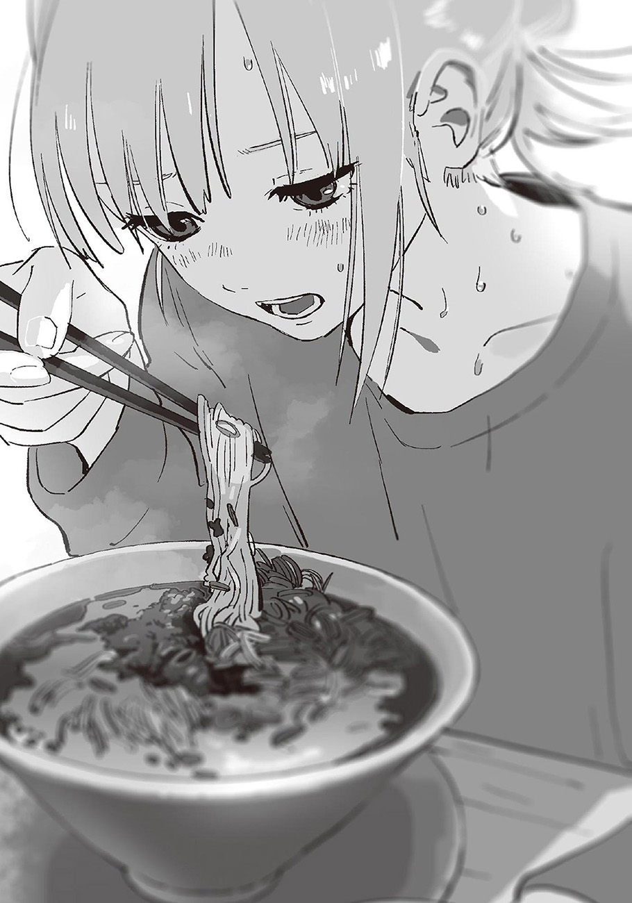「哈哈……」
汐似乎發現自己在吃麵時出糗了。
也許因為身體完全暖和了，從口中呼出的氣息比平常更白。如吸菸的煙霧般拉得長長的白色氣息，被來往的行人打散，消失在空氣之中。
現在是下班尖峰時刻，行人特別多。我把手插在口袋裡，走向停車場。右手拇指的水泡光是碰觸就又熱又痛。那股痛感，使我想起在打擊場擊中球時的快感。
今天過得很愉快。
去打擊場打球，在拉麵店吃擔擔麵……雖然都不是了不起的大事，可是心裡很充實。假如星原也在場，應該又會不一樣吧。然而，不和汐獨處的話，八成看不到他漲紅臉吃麵的模樣了。
「還是去打工好了。」
「打工？」
汐突然這麼說。
「最近我們不是一直出來玩嗎？存款快不夠用了。」
「啊——確實……這麼說我也一樣呢。」
「有我能打工的地方嗎？」
「應該有吧。你做事很有訣竅，一定會被重用的。」
「是的話就好了。」
打工嗎……我之前也想過要打工。因為我沒有加入社團，多的是時間和體力，不如把這些資源用在勞動上吧，儘管我如此想著並翻起打工情報誌，不過到頭來，我只有看看而已，沒有真的去應徵。反正出社會後，再怎麼不願意，也非工作不可，不如趁學生時代好好享受自由。這應該是聰明人的想法吧。我想要如此相信。
「如果有輕鬆的打工就好了。比如只要一直把草莓放在蛋糕上之類的。」
「這樣反而會精神衰弱吧……」
「哈哈，說得也是。」
停車場快到了。
明天又要上學了。修學旅行結束後，第三學期也馬上會過完。接著就是春假。如果是短期打工的話，也許可以試試。
「吶，咲馬。」
「什麼事？」
汐看著前方說話：
「我們——」
「啊！」
一道大叫聲打斷汐的話。
假如那道聲音發自吵鬧的大學生或喝醉的上班族，我會直接無視；可是我記得那道嗓音，所以忍不住回頭。
嗚哇。我發出近乎哀號的聲音。
那是一名臉上掛著親切笑容的高瘦年輕人。只看外表的話，會以為他是清爽的好青年吧；但是他的笑容與說的話全都是虛假的。我非常清楚。
那個人正是世良。
「果然是你們！好巧啊～」
世良大步朝這邊走來。一名看似他女朋友的女孩正摟著他的手臂。不是看似，黏成這樣肯定是女朋友吧。大波浪捲髮綁在左右兩側，臉上戴著粗框的圓眼鏡，有點辣妹的感覺。
辣妹疑惑地向問世良：
「他們是誰～？」
「看起來很土的叫咲馬，長得很可愛的叫汐。他們都是我朋友哦。」
「才不是吧。誰跟你是朋友啊。」
我才剛否認，嚴厲的聲音便從世良身邊傳來。
「等等。雖然我不認識你，但你也不需要說成那樣吧？朋友的定義因人而義，稍微配合一下對方會怎麼樣？你還真過分。」
「嗚……」
居然被第一次見面的人用大道理教訓了。沒想到對方會有這種反應，而且她說的也有道理，我不禁畏縮。
「對不起……」
「哈哈，能這麼老實地道歉，真了不起。」
世良笑得很開心。
我因為屈辱而發抖，此時汐抓住我的手腕。
「別捉弄人了。我們要離開了。」
「等一下嘛。難得在學校外碰面，要不要一起吃個飯？」
「我們才剛吃過。」
「哎呀，太可惜了。你們在做什麼？約會嗎？」
我腦中的警鈴瞬間大響。
我和汐交往的事，並不想告訴任何人。特別是眼前這傢伙，絕對不想被他知道。這是能毫不猶豫地玩弄他人的男人。為了滿足好奇心，讓自己挨揍也無所謂，是最差勁的享樂主義者。
我的回答當然只有一個。儘管正大光明地承認我們正在交往，是很有男子氣概的行為。但也要慎選承認對象。所以我開口表示：
「才不是約——」
「是的話又怎樣？」
汐打斷我的話。
等一下，你是認真的嗎？我轉頭看向汐。沒想到汐的表情非常認真……應該說是憤怒吧。
「哦～……」
世良的眼睛瞇了起來。他眼中亮起好奇與殘酷的光芒。那是發現獵物的眼神。已經沒辦法找理由了。就算現在否認，也只會成為把柄。
「我不知道你們交往了呢。這時候該祝福才對吧？恭喜。」
明明心裡根本沒有任何祝福的意思，他仍誇張地拍手，臉上浮現清爽又燦爛的笑容。世良以前追求過汐。如果他已經放棄汐，當然是最好的，但我還是不禁覺得危險。
「欸，我們快走吧。」
辣妹拉著世良的袖子。
「哦哦，對不起對不起。打擾你們約會，真不好意思。」
世良滿意地點頭，對我們擺了擺手。
「那就改天學校見囉。」
世良與辣妹朝車站方向前進。
短短幾分鐘，不，說不定連一分鐘都不到的對話，點燃了巨大的火種。對方是口無遮攔的世良。我和汐的關係，遲早會被學校的人知道。
情況不妙了。
「……對不起。」
汐小聲道歉。他低著頭，看不清表情，但是聲音中帶著後悔之色。
「不小心就……意氣用事了。我不該那樣回答的。」
我本來就沒有因此不高興，看了汐消沉的模樣，更是心痛。
「不用那麼在意啦。我們又沒有做什麼壞事。雖然可能成為愛說閒話的傢伙的八卦題材，不過也只是那樣而已。」
「嗯……」
汐輕聲回應，再次走了起來。我也走在他身邊。
直到剛才為止，明明是愉快的歸途，卻被世良破壞殆盡。我事到如今才開始感到火大。愛說謊，喜歡捉弄人，最差勁的詐騙分子。為什麼有女生想和那種人交往呢？我完全無法理解。
沉默不語會使我愈來愈火大。我尋找話題，想轉移注意力。
「對了，你剛才想說什麼？」
遇見世良之前，我們好像在聊打工的事。
「有嗎？」
「好像有。」
汐把手放在下巴，思考起來。但他很快地聳肩。
「對不起，我忘記了。不過既然想不起來，就不是什麼重要的事吧。」
「是嗎？那就好……」
反正以後會想起來的吧。
看見停車場了。
✽
我放下腳踏車腳架，拿起放在載貨架的書包，快步走向校舍。雖然沒有遲到，但我睡過頭了。最近一天比一天寒冷，起床需要的時間也愈來愈長。
我抬手想從鞋櫃拿出室內鞋，上臂因此作痛。是肌肉痠痛的感覺。平常沒有練習揮棒的習慣，所以昨天打擊練習的身體反應，比我想像的更大。
我在走廊前進，第一節的預告鈴響了起來。在走廊閒聊的學生們或是停止聊天，或是與同班同學一邊說話，一邊走進教室。
就在這時，一名學生與我對上目光。是別班的男生。我隱約記得他的名字，但是沒有和他說過話。儘管如此，他卻一直看著我，又很快地別過視線。
「……？」
如果是偶然對上目光，這反應未免太過詭異了。
我臉上沾到什麼了嗎？保險起見，我以手機檢查自己的臉，但是沒有什麼奇怪的地方。頂多是頭髮睡翹了而已。
我摸著翹起來的頭髮，走進自己班的教室。
我在同學們的喧鬧聲包圍下，走向座位。「札幌」、「滑雪」等單字鑽進耳中。
仔細想想，離修學旅行只剩一週了。大概是因為如此，班上的氣氛比平常浮躁。話是這麼說，但我也很期待修學旅行。不論是去北海道，或者滑雪，甚至搭飛機，都是我第一次的體驗。儘管多少有點不安，可是期待的心情勝過於不安。
國中時的修學旅行，明明是一段憂鬱的過去，我也變了很多呢。
當我正一個人對自己的成長感動時，星原走了過來。
「紙木同學，你現在有空嗎？」
「怎麼了？」
星原很少會在班上主動和我說話。反正我們放學會一起走，所以在班上時，她會以在同社團活動的朋友真島或椎名為優先。還有，在教室裡的話，和女生說話比較輕鬆，不必顧慮太多吧。
「快上課了，所以我長話短說……」
星原壓低聲音說話，神色有點凝重。
這態度，該不會……
我大概猜到她要說什麼了。
「你和小汐交往的事，被傳開了。」
……果然。
雖然沒有直接向其他人確認，不過情況確實和星原說的一樣。
不論上課或下課，我都感受得到視線。如果只有那樣，還有可能是我想太多，然而當我在午休前往男廁時，我便明白事情確實傳開了。當時小便斗全都有人，我便進入隔間上廁所，因此聽見之後進來的別班學生在說我和汐的事。
——聽說槻木和紙木在交往。
老實說，我很生氣。
我氣的是我們成了八卦話題，還有對洩露這件事的元凶世良感到火大。不過對於前者，我的心情有點複雜。
因為談論我們的那兩個別班男生，語氣並非嘲笑。
還不如說，是在稱讚我。
『紙木真了不起。』
『是啊，真佩服他。』
再說一次，我很生氣。
為什麼我非被佩服不可？我根本沒道理被素昧平生的人稱讚吧。我和汐交往，不是為了做慈善，也不是什麼偉大的事。
假如——只是舉例，假如我交往的對象是星原，情況會變成什麼樣呢？說不定我還是會被佩服，居然有辦法和班上人緣超好、大家都覺得可愛的星原交往……大概是這種感覺吧。但是在那份佩服中，多少會摻雜羨慕或者嫉妒的感情。
可是剛才那個兩人，並沒有那樣的感情。
嘴上說佩服我，其實是以高高在上的心態稱讚我。沒有人為我和汐交往感到羨慕。這讓我覺得很不甘心，也很難過。
其他人怎麼想都無所謂——我沒本事那麼說。我還是很在意他人的目光。
「……一點也不好。」
我小聲說著。
我從位子上起身。第六節得換教室上課。我拿著課本與文具，前往理化教室。
可能我想得太負面了。雖然我和汐的事情傳開，但是到目前為止，周圍的人沒有什麼太過分的反應。既然沒有人在我背後指指點點，那就和平常一樣過日子吧。反正等到修學旅行結束，一定會有新的八卦話題取而代之。
深呼吸。
好。心情轉換完畢。只要思考一星期後的修學旅行就好。
我正想從D班前經過，一名學生閃身出現，害我差點撞上對方。
「啊，對不——啊！」
在發現對方是世良的瞬間，我全身血液湧上大腦。眉頭肌肉自然而然地用力，雙腿朝他逼近。
「是你……是你把事情說出去的吧？」
「咦？什麼什麼？你劈頭問這句是什麼意思？」
「不用我說，你也知道吧？就是我和汐的事。」
「嗯～？哦，你們在交往的事？我確實有告訴別人，那又怎麼樣？」
那光明正大的態度，使我更加惱火。有那麼一瞬間，我能理解西園為什麼會痛扁他。
「不要給我裝傻。都是因為你，我們的事才會變成八卦。」
「變成八卦有什麼問題嗎？」
「有啊。」
「比如說？」
比如被周圍的人用奇怪的眼神看著——我正想這麼說，又住了口。直覺告訴我，這話說出來很不妙。我還沒想到其他具體的問題，世良已經笑嘻嘻地開口：
「雖然我不知道你為什麼生氣，不過你那是遷怒吧？我確實把你們交往的事告訴朋友了。可是你們沒有說『不可以說出去』吧？又不是偶像明星，也不是出軌，光明正大地讓其他人知道你們交往的事也無妨吧？或者說……」
世良端詳我似地把臉湊近。由於他很高，所以變成低頭看著我。那股壓迫感，使我狼狽了起來。
「你覺得被其他人知道你們交往的事會很困擾嗎？啊啊，原來如此。你無法因為和汐成為戀人而感到驕傲呢。」
「不是。」
我差點激動地大聲反駁，但還是努力壓抑音量。我在心中告訴自己，不要中了那種人的挑釁。
「你的說法……太有惡意了。」
「惡意！那是你的被害妄想吧。不如說是你不好吧。因為你從一開始就對我充滿敵意，才會有這種成見。如果把你們的事告訴別人的不是我，你會這樣氣沖沖地向那個人興師問罪嗎？你只是因為私仇，才這樣攻擊我，不是嗎？」
「我……」
沒辦法繼續說下去。
羞恥心與無力感取代了原本翻騰不已的怒氣，灼燒我的胸口。
又是這樣。
每次和世良說話，都會有種被剝個精光的錯覺。明明相信自己生氣是有道理的，卻會陷入「我該不會搞錯重點了吧？」的思考之中。
不對……這次，可能真的是我不對。就像世良說的，我只是遷怒。不好的人是我。之所以不願意承認，是因為我討厭世良……不對。雖然我想這麼反駁，卻找不到話可以否定世良。
「好了，先到此為止吧。」
世良打算中斷對話似地，朝我伸出手掌。
「我要去上廁所。你要去理化教室對吧？想繼續聊的話，等放學後吧。我應該會在車站前的Camellia待著，你想聊就過來吧。」
世良單方面地說完話，邁步離去。我沒有阻止他，只是站在原地，獨自品嘗敗北的苦澀滋味。
——想繼續聊的話，等放學後吧。
「誰要去啊……」
我小聲啐道，朝理化教室前進。
「我們的事被傳開了，你知道嗎？」
那天回家的路上，我向汐發問。星原已經先離開了，只剩我和汐兩人。雖然我想早點發問，但是星原似乎不想聊負面的話題，所以我故意不提。
「嗯。在學校時，夏希已經告訴我了。再說，其他人的視線也有點不一樣。」
「你果然很清楚這種事呢。」
畢竟是對他人視線特別敏感的汐，感受一定比我更強烈吧。
「……咲馬，你今天一直毛毛躁躁的呢。」
「咦？我嗎？」
「是啊。你一直靜不下來，上課時不是轉筆，就是抖腳。」
「聽、聽你這麼一說，好像真的是這樣呢……真丟臉。」
轉筆本來就是我的習慣，沒想到連抖腳都出現了。「真的很難看，不要這樣」——國中時，我被媽媽和妹妹這樣嚴重抗議，還以為已經完全矯正過來了。看樣子，他人的視線對我造成的壓力，比我想像的還大。
「以後該怎麼辦？」
汐若無其事地說。
「怎麼辦……只能公開了不是嗎？」
「是沒錯。不過，其他還有很多事就是了。」
這曖昧的說法，使我猜不出什麼才是汐想聽的回答。但是深入打探他真正想表達的意思，又有點失禮，因此我直接說出自己的想法：
「也不能怎樣吧？不管公開或不予置評，對那些喜歡聊八卦的傢伙來說，都可以成為話題。我們只要和平常一樣就好。」
「……說得也是。」
汐輕輕點頭。
他看起來有點沒精神。星原還在時，他的樣子很平常；但是只剩我們，而且談到這件事時，他就變成這樣了。說不定汐也覺得壓力很大，只是沒有說出來。
人的視線，是有質感的。
溫暖的、冰冷的、舒服的、令人不愉快的。一、兩道視線頂多讓人感覺有些不對勁，可是數量增加後，不論視線中蘊含的感情是好是壞，都會磨耗心神。正因為無法不感受到視線，才會不由自主地做出各種想像。
「明天見。」
汐在岔路口這麼說，「明天見。」我也如此回答，與汐道別。
冷風拂過臉頰，太陽緩緩地下沉於西山後方。
「……總覺得很不痛快。」
我站在路上，大聲地自言自語。
這種鬱悶感似乎揮之不去。回家後，一個人獨處時，應該會更悶吧。
隨便找個地方玩，或者和誰見面，轉移注意力吧。如果是後者，我心裡已有人選。
「……」
就算見面，肯定也沒好事，甚至有可能讓情況惡化。只會被那傢伙玩弄在股掌之間而已。
即便如此，什麼都不做也讓人焦躁不安，我希望能找到改變現況的線索。
「……還是去看看吧。」
為了與世良見面，我調轉車頭，朝車站方向前進。
時間是下午五點。
Camellia是開在車站前大馬路上的咖啡吧。那邊的咖啡比其他連鎖店貴了一百圓左右，所以我從來沒有進去過。再說，我也不是很喜歡那種時尚風格的餐飲店。
我把腳踏車停在店門口，走了進去。儘管人已經來到這裡，但我還是很迷惘。我不想見到世良的臉，可是見面的話，說不定會出現什麼變化。世良很愛說謊，是差勁到極點的傢伙；然而先不論好壞，那傢伙說的話總是能破壞我既有的價值觀。想成下猛藥的話，和世良見面，也許能有什麼收穫。
「歡迎光臨，一位嗎？」
「不，我是來找人的……」
我一面四處張望，一面朝店的後方前進。
與外觀相同，店裡的裝潢也一樣走時尚路線，牆上還掛著古典風格的大型壁鐘。
由於商品的定價頗高，店裡客人的年齡層也相對高。主婦與銀髮族們正安靜地說話。店裡沒有學生——我才正這麼想，就在店後方的座位發現穿著椿岡高中制服的男生，以及引人注目的金髮……
「啊！這不是咲馬嗎！」
發現我的存在，世良愉快地揮手。
就在此時，我也發現自己犯了嚴重的錯誤。
世良不是一個人。
還有三名女性與他在一起。
笨蛋。紙木咲馬你這個大笨蛋……
這不是理所當然的事嗎？世良怎麼可能在放學後一個人喝咖啡？當然是和朋友或女朋友在一起吧。
回去吧。光是和世良一對一說話，就足以嚴重耗損心神了，旁邊還有三名第一次見面的女生，我肯定會心力交瘁。
我立刻轉身，朝店門方向逃走。沒有餘力假裝自己沒發現世良。
我快步走到店外，從口袋中拿出腳踏車的鑰匙，在自己的腳踏車前停步。
「你要去哪？」
「噢哇！」
身後突然冒出說話聲。我嚇了一跳，鑰匙掉在地上。
世良撿起我的鑰匙，露出不懷好意的笑容。
「幹嘛逃呢？你不是來找我的嗎？和我說話嘛。」
「不要。我想起來我還有事。」
我伸手想搶鑰匙，可是世良把鑰匙高舉過頭，不讓我拿到。
「換個說法吧。如果你不和我說話，我就不讓你回去。」
「為什麼啦！光是和你一個人說話，就已經夠討厭了，還有其他女生在場……我絕對做不到。排擠感肯定強到不行。我怎麼可能在那種情況下正常地說話啊！」
「你對自己的自卑很有自信呢。既然能說這麼多話，就沒問題了。再說大家都很溫柔，不用擔心。走吧。」
世良拿著我的鑰匙，走進店裡。
我認真考慮乾脆放棄腳踏車，直接走回家吧？可是鑰匙在世良手上，說不定他下次又會用這種方式逼迫我。要是變成那樣，不如現在就解決這件事比較好。
可惡，真的很不甘願……早知道就不要來這種地方了。
我心中充滿後悔，有如俘虜似地，慢吞吞地跟著世良走回店裡，來到店後方坐著三名女生的桌子前。
「對不起，讓妳們久等了。依梨理，妳可以換一下位子嗎？」
「好～」
辣妹風格的女生把自己的椅子搬到桌子對面。世良從隔壁桌拉過一張椅子給我，自己也在我身邊坐下，成為兩名男生與三名女生面對面坐著的模樣。
桌上有四人份的杯子與分食用的綜合餅乾。辣妹風格的女生面前還有吃了半杯的聖代。
「感覺很像聯誼呢。咲馬，你覺得呢？」
「我想回去。」
「要玩國王遊戲嗎？說到聯誼，果然就是玩國王遊戲呢。不過這種習慣到底是誰起頭的呢？這種完全以運氣決定誰聽誰命令的遊戲，不論怎麼想，都不適合讓第一次見面的人玩吧。第一個做這種提議的傢伙，肯定沒有女人緣。」
「……」
「說到國王，聽說路易十四世一輩子只洗過三次澡哦。」
「……讓我回去。」
胃好痛。是說，為什麼這傢伙這麼愉快啊……
「呃，咲馬同學？你要喝點什麼嗎？」
被人點名，我戰戰兢兢地抬起頭。
向我說話的，是坐在正中央的女生。應該說女性才對。我想她應該不是高中生。那女性看起來很沉穩，是所有人中唯一穿便服的人。頭髮蓬鬆地編成辮子，垂在穿毛衣的胸前。
「不用……我不會待太久……」
「是小慈硬拉著你過來的吧？所以應該是他請客。想點什麼都可以哦。」
小慈是誰啊？難道是世良？對了……他叫世良「慈」呢。小慈，真好笑的暱稱。
「如果是咲馬，我可以請一杯飲料哦。」
「……那我就不客氣了。」
我打開菜單，看著飲料的部分，向服務生點了最貴的維也納咖啡。接著就是等飲料送過來了。
胃痛好一些了。
反正大概沒辦法馬上回去。不如趁現在整理情況。我仔細看起三名女生的長相。
我對坐在最右邊，辣妹風格的女生有印象。她是昨晚和世良在一起的女生。她穿的制服應該是鄰鎮的高中的制服。
坐在中間的，是剛才顧及到我的女性。與辣妹完全相反，有種清純感。雖然看起來不像世良的女朋友，不過實際情況又是如何呢？
最左邊的，是和我一樣穿著椿岡高中制服的女生。雖然同校，但是我對她沒有印象。個子嬌小，留著短髮，戴著細框的圓框眼鏡。和另外兩人相比，感覺不怎麼起眼。
最後是坐在我身邊的世良。
這傢伙有好幾個女朋友。但不是腳踏多條船，是開放式關係。這是半年前，世良親口告訴我的。他現在應該也以同樣的方式談戀愛吧。雖然不確定眼前這三人是否都是他的女朋友，但毫無疑問，和他都很親密。
「先做一下自我介紹吧。」
世良提議。他說著「那麼就從依梨理開始吧。」並看向辣妹。
「好～我叫桃澤依梨理。桂加高中三年級。請多指教～」
果然是鄰鎮的學校。桂加高中的偏差值和椿岡差不多，或者更高一點……不能以貌取人呢。
坐在中央的女性接著開口：
「我叫柚木宇美。年紀是祕密……請多指教。」
柚木……小姐含蓄地微笑著。說是祕密，反而更令人在意。應該不至於未成年吧。
我看向最後一人。和我同校的，不起眼的女生。
「……」
「……」
「……難道你沒認出來？」
「咦？」
對方詫異地看著我。我重新端詳起她，實在沒印象……應該吧。
「呃……對不起，我有見過妳嗎？」
那女生露出難以置信的表情，以死魚眼瞪我。
「我有點受到打擊耶……那這樣呢？」
她拿下圓框眼鏡。塵封的過往的記憶中，浮起一個名字。
「啊！妳是梨本……？」
「正確答案。我是高一時和你同班的梨本南綺。」
不、不妙。我完全沒有認出來……有沒有戴眼鏡，給人的感覺差好多。不過就算是那樣，沒有因聲音而想起來，還是很對不起梨本。儘管這藉口很爛，不過高一時，我對班上同學可說是漠不關心。
總之，三個人的臉和名字，我都記住了。
像辣妹的是桃澤依梨理，感覺成熟的是柚木宇美，不起眼的是梨本南綺。
好，我記住了。
「最後是你，咲馬。」
「哦，嗯。」
我在世良的催促下，清了清喉嚨開口說：
「我叫紙木咲馬，是椿岡高中二年級的學生。」
「我是世良慈～也是椿岡高中二年級。」
「這個大家都知道。」
梨本吐槽，桃澤哈哈大笑，我有點受不了這麼嗨的人。
服務生把我點的維也納咖啡送上桌。我以隨杯附上的小湯匙讓鮮奶油融化在咖啡裡，「是說……」柚木小姐向我發問：
「紙木同學來這裡有什麼事呢？還是說，你只是來喝咖啡的呢？」
雖然被牽著鼻子走，可是，沒錯，我本來是為了和世良說話才來的。
但是該怎麼說明才好呢？如果在場的只有世良也就罷了，有其他人在場時很難開口。現在這種情況，是實質的四對一。假如我責怪世良，其他三人說不定會像昨晚的桃澤那樣群起攻擊我。局勢將會對我非常不利。
是說，她們和世良是什麼關係呢？就親密的程度而言，桃澤應該是世良的女朋友，但是柚木小姐和梨本就有點難猜了。至少，梨本不像是愛玩的類型。
「我想確認一件事。」
我以那三人聽不見的音量，小聲地向世良發問。「什麼事什麼事？」世良把耳朵湊近。
「她們和你是什麼關係……？」
世良朝三人探出身子。
「咲馬問我和妳們是什麼關係。」
他居然直接告訴她們。我都特地小聲發問了！
「看就知道了吧？當然是戀人啊。」
第一個回答的是桃澤。柚木小姐接著開口：
「是啊。我們正在交往呢。」
最後是梨本。
「基本上算是在交往……吧。」
……我很驚訝。
雖然不是每個人都說的很明確，但她們果然全都是世良的女朋友。三個人全是。雖然是一般而言會變成四角戀爭風吃醋的場面，她們卻能和睦相處。
該怎麼說呢……我有點受到打擊。當然，她們全都是自願的，可是我很懷疑這三人全都被世良洗腦了。
「你知道小慈同時和很多女生交往的事嗎？」
柚木小姐微笑著發問。
「呃，基本上知道……」
「是嗎？那你應該可以理解我們的情況呢。」
雖然可以理解，但是無論如何，我都會心生抗拒。正因為我知道這是偏見，所以不打算否定她們。既然當事者們對自己的處境很滿意，外人就沒資格插嘴批評。
……可是，我還是無法不覺得她們弄錯了什麼重要的部分。我沒辦法由衷接受這種關係。
也許明白我的內心糾葛吧，柚木小姐輕笑。
「你以為我們都是戀愛腦的女生嗎？」
「呃，沒有……」
「是不是覺得會和小慈交往的，都是腦袋空空，只想談戀愛，很容易被騙的女生？」
「我、我沒有那麼想。」
「呵呵……你很不會說謊呢。」
我冷汗直流。不妙，想法寫在臉上了。
「你是那麼想的！？好爛哦，傲慢的垃圾。」
桃澤的斥責一針見血。「沒辦法啊。」梨本安撫她：
「一般人都會這麼想吧。我在變成這樣前，也一直覺得很危險哦。」
「咦——真的嗎？我很開心耶。」
「那是因為依梨理想太少了。」
「是你們都想太多了。戀愛就是要自由。」
我看著拌嘴的兩人，喝起維也納咖啡。
她們看起來都不像被騙，或者被抓到什麼把柄，逼不得已才和世良交往。三個人都像是有想法的人，雖然我只和她們說過幾句話，不能肯定地說結論，可是她們的言行舉止，都像有常識的普通人。
所以我才不懂。為什麼這些正常人，可以接受與世良談開放式關係這種特殊的戀愛呢？
「你覺得我們的關係很亂嗎？」
柚木小姐發問。眼中帶有對孩子說話般的慈愛之色。
「……雖然不到那種程度。可是，我覺得怪怪的。」
「誠實是好事。但我希望你能理解一件事。就是你認為的『交往』，和我認為的『交往』是不同的。」
不同。被如此斷定，我忍不住皺眉。
「是哪裡不同呢？」
「我啊，認為我們四個人是一個團隊哦。是為了填補孤獨、滿足欲望，追求刺激……為了達成這三個目的而結成的團隊。在一對一的戀愛裡，雖然雙方都希望得到幸福，但是很容易變成過度在乎單一對象，因此產生占有欲或嫉妒的感情。假如是團隊，就能分散負擔與風險。比起既有的戀愛系統，是更有人性的交往方式哦。」
人性——我在心中複述著平常聊天時不會出現的單字。
我能理解柚木小姐想表達的意思。我確實有部分認同，但也無法立刻接受這種觀念。有點像科幻小說的設定，缺乏真實感。
最重要的是，我無法接受的部分是——
「是世良對妳這麼說的嗎？」
「你好像很警戒小慈呢。不過這是聰明人的反應。」
柚木小姐優雅地微笑。
這話算不上回答吧……當我這麼想的時候，柚木小姐說了：
「有一半是。剛才那些話，有一半是從小慈那兒學來的，另一半是我自己的想法哦。」
「……是這樣啊。」
我有種坐立難安的感覺。一半算多還是少？哪些部分是柚木小姐自己的想法呢……雖然我覺得柚木小姐的說明不夠完整，但沒有想深入追問的念頭。
「柚柚還是一樣喜歡講理論呢～」
桃澤一臉厭煩地說著，拿起餅乾，咬了起來。餅乾屑簌簌地掉在桌上。
「這種事不是很單純嗎？戀人愈多愈快樂，就是這樣而已。」
「……？桃澤，妳有其他男朋友嗎？」
「對年長的人要用敬語說話。」
「啊，是……桃澤學姊，除了世良之外，請問妳有其他男朋友嗎？」
幹嘛對遣詞用字這麼嚴格啊……可是妳和柚木小姐說話時也不是用敬語，那就沒關係嗎？而且世良也沒有用敬語啊。
「沒有。但如果是女朋友，就有。」
桃澤說著，看向柚木小姐。柚木小姐也以炙熱的眼神回看著桃澤。
啊……是這麼回事嗎！？
我當然知道有些女性會與女性交往，也知道有些人對同性或異性都能產生愛情。但這是我第一次親眼看到，所以無法掩飾自己的驚訝。
真的有這種人呢。
當然有啊。我吐槽自己。
沒錯。跟汐一樣，多年來一直隱瞞真正的自己，只是沒有公開表示，無法鑲進一般社會的「普通」中的，大有人在。這是理所當然的事。
……我突然覺得很可恥。
在場的五人中，只有我是明顯的異物。
「依梨理的想法和我最相近呢。」
世良開口。
「因為很快樂……到頭來，沒有比這更好的理由。不論朋友、戀人或家人，都是愈多愈快樂。雖然大部分的人不想認同就是了。」
對吧？世良向桃澤徵求同意。「就是啊。」桃澤認真回答。
我把目光移到坐我旁邊的世良身上。
「之前我就有點在意了……你那只要快樂就好的想法，到底是從哪來的？是天生的嗎？還是受了誰的影響？」
「哦？你想知道嗎？」
世良眼神閃亮，彷彿一直等我發問似的。
「好啊，就告訴你吧。事情要回溯到十年前……」
「長話短說。」
「以前啊，我是前面要加一個『超』字的健康寶寶哦。跑步的話當然是第一名，比誰都早學會彈《踩到貓兒》，不管學什麼做什麼，都比其他人快又好。可是和我不一樣，我哥哥的身體虛弱，學習能力也不強。不過他很溫柔。雖然哥哥唯一贏過我的只有年紀，但是他很疼我哦。後來，他的宿疾惡化，快要死掉時，他對我說，慈，你要連我的份，好好享受人生……這樣。」
「哦……」
感覺有夠假……
但如果是真的呢？這麼一想，我就不敢隨便斷定他是在胡說八道。因為汐家也有類似的情況。
不過，說這些話的人是世良……正當我不知該如何反應時，梨本笑著搖頭。
「不是不是。世良同學在騙人啦。他以前就說過自己是獨生子。」
「小南，妳拆穿得太快了啦。」
……我就知道。
我已經習慣了，不會對這種程度的事生氣。
「梨本妳覺得世良哪裡好？這傢伙說謊和吃飯喝水一樣簡單耶。」
桃澤瞪我。
「喂。不要把別人的男朋友叫成這傢伙。」
「對、對不起。」
這個辣妹真可怕……讓我想起全身帶刺時期的西園。
「唔——」梨本把手放在下巴，沉吟起來。
「我沒有她們那麼明確的理由呢。現在還在看情況，應該說是試著交往吧。」
「試著……」
和我一樣。我和汐也算是試著交往。沒想到我們做的事一樣。說不定這也是一種常見的交往方式？
「不過，和世良同學在一起時很快樂哦。他就像驚喜箱，不知道會彈出什麼東西。我喜歡那種非日常的感覺。」
「真害羞。我也喜歡這麼想的妳，覺得這樣很可愛哦。」
「啊哈哈，謝謝啦。」
我喝著維也納咖啡。雖然有點涼了，但是鮮奶油融化後的甜度很好喝。
喝完咖啡，我放下杯子，與柚木小姐對上目光。
「對我們的看法，有點改變了嗎？」
「嗯，是啊……」
老實說，我對她們的第一印象很差。就如柚木小姐說的，光是與世良交往這件事，就使我覺得她們是腦袋空空，只想談戀愛的女生，戴著有色眼鏡看她們了。可是，那只是我的成見。
她們三人，全是普通人。
普通。雖然我不想隨便使用這個詞彙，但是這麼形容應該沒有問題吧。雖然她們的想法和興趣與我不同，可是她們的思考，都在我能理解與共情的範圍之內。
「我不會再以為妳們信了奇怪的宗教了。」
「哈哈，你很直接呢。」
「可是……我果然還是覺得只要有一個戀人就夠了。不對，應該說我只要一個戀人就好。」
柚木小姐看著我，臉上掛著柔和的笑容。她似乎在等我說明。
「……我能理解妳們的想法。若是能做個誠實的人，多交幾個戀人說不定比較好。可是……假如我看到自己喜歡的人和其他人甜甜蜜蜜……會覺得心情很複雜。如果是家人，就另當別論……但是無論如何，我都想成為自己喜歡的人最重要的人。」
「好醜陋的占有欲。」
說話的是桃澤。她以輕蔑的眼神看我。
「就是因為有你這種人，日本才會少子化啦。」
「這和那有啥關係啦……」
「敬語。」
「對不起。」
咳。我清了清喉嚨，繼續說下去。
「我不否認這種想法很醜陋。可是，雖然我是最近才開始這麼想的……不過，戀愛本身就是很難看的東西，不是嗎？就算和誰交往，也只是重複著傷害對方……啊，不過，就這問題而言，有好幾個戀人也一樣吧……？」
說到後來，我的臉開始發燙。在戀愛方面只是幼幼班的人，居然這麼大言不慚地闡述自己的戀愛觀？後悔不斷湧上我心頭。
「我大概明白了。」
柚木小姐說：
「我不強求你也該和我們一樣，所以不會否定你的想法。一對一的戀愛，也是有美好的地方。」
我不禁心想，雖然她這麼說，可是不會發自內心接受吧。反正我不打算深入討論這話題，所以無所謂。但我沒辦法動搖這個人的想法的事實，使我感到有點空虛。
「紙木同學。」
柚木小姐的聲音降低了幾分。
「再強調一次，我不會否定你的想法。可是啊，我敢肯定，像我們這樣的人，在未來將能活得理所當然。再過不久，媒體強加給大眾的戀愛觀一定會被破壞，戀愛會變得愈來愈自由。」
「……這我就不知道了。」
噹——鐘聲響起。
牆上的古典鐘，指針指著六點。
我和柚木小姐說完話後，世良就乾脆地把腳踏車鑰匙還給我。由於咖啡也喝完了，所以我馬上撤退了。我在心裡發誓，再也不可以接受世良的邀請。
我騎著腳踏車，在冷風中前進。
說起來，我是為了向世良抗議才去那間咖啡廳的，但是根本沒抗議到。不過就結果而言，我覺得那是一場有意義的對話。我藉著與世良的女朋友們對話，明白世界上有各式各樣的戀愛形式。
說不定會如柚木小姐說的，未來像世良那樣的戀愛形式將變得很普及。就算不是如此，理想的戀愛形式應該會逐漸出現變化吧。撿到掉下來的手帕，以此為契機交往什麼的，將會成為石器時代的風俗……也許早就是了。
——如果太重視理想的情境，說不定會讓伸手可及的幸福溜走。
我對汐告白時說的話。
雖然我完全不打算變成世良那樣，但也許我該更懷疑自己對戀愛的想法。
我究竟想和汐變成什麼樣子呢？
什麼形式的交往，才是正確答案呢？
今後也必須一直思考才行。
想到這裡，我嘆了一口氣。
「……總覺得好像不太對呢。」
我對煩惱「該如何戀愛」這件事本身感到疑惑。
俗話說，愛情是盲目的。所以戀愛不是更單純更快樂的事嗎？雖然戀愛中會思考該怎麼做才能更快樂，可是好像沒多少人會思考「該怎麼交往才正確」這種需要動腦的問題。世界上的情侶看起來都那麼快樂，但是說不定他們經常得思考各種議題。如果真的是那樣，現實還真辛苦。
紅燈使我停下腳踏車。
我抬頭向上看，彎彎的月牙在全黑的天空發出皎潔的光芒。最近這幾天，椿岡的天氣都很好。
不知道北海道的天氣是不是也一樣晴朗呢？
修學旅行第一天。
通過機場的安檢後，是長到似乎看不見盡頭的走廊。走廊上等間隔地設置著候機室，靠外側的部分全是落地玻璃窗，可以見到許多飛機正在戶外等待起飛。
我們很早就抵達機場了，還有二十分鐘才會開始辦理登機手續，坐進前往新千歲機場的飛機。等候的這段時間，包含我在內，椿岡高中二年級的學生都在候機室裡打發時間。
修學旅行時能穿便服，沒有任何學生穿制服來。每個人，特別是女生，全都精心打扮過。
剛來候機室時，所有人全擠在玻璃窗邊拍飛機，現在則三五成群地坐在長椅上聊天，或是逛起機場內的商店。我和蓮見屬於前者。
「啊～開始緊張了……蓮見，你以前搭過飛機嗎？」
「只在國中去沖繩玩時搭過一次。」
「搭飛機是什麼感覺？會很晃嗎？」
「會啊。」
「到什麼程度？」
「有時候會側翻到九〇度。」
「咦？真的嗎……人不會摔倒嗎？」
「所以才要繫安全帶啊。起飛之前，空服員會嚴格檢查所有人有沒有繫好安全帶。」
「原來如此……」
「還有，上飛機時一定要脫鞋。」
「是這樣啊？脫下的鞋子要怎麼辦？」
「要裝在鞋袋裡，隨手拿著……你沒帶鞋袋嗎？」
「咦！？航空公司不會提供嗎？」
「不會哦。不過你放心，機場的店裡都有賣。」
「我去買一下。」
「剛才全是我騙你的。」
我用力揍了蓮見肩膀。
離登機還有時間，我起身去上廁所。
上完廁所，我沿著走廊準備回候機室時，在人群中見到汐與星原。他們正與A班的女生們在一起快樂地說話。
對汐來說，這是他第一次的修學旅行。直到出發的前幾天，他都顯得很不安；但是像這樣旁觀的話，感覺不用過度擔心。雖然旅行才剛開始，不過照現在的樣子，應該沒問題。
「咦？」
身後傳來聲音。
我轉頭，見到一名短直髮的女孩。梨本南綺。我在心裡唸著幾天前遇見的女生的名字。她似乎剛從廁所出來。
「果然是紙木同學。前幾天幸會了。」
「啊，嗯。幸會。」
她突然和我說話，使我有些結巴。就算不是突然說話，和不太認識的女生交談，我還是會有點緊張。
「……妳今天沒戴眼鏡啊？」
「只有和世良同學在一起時才會戴。沒有什麼特殊理由哦？只是換個心情而已。」
「是喔……」
我還以為是為了變裝。和世良交往的事如果在學校傳開，應該會有不少麻煩吧。
我沒什麼想和梨本聊的話題，因此正想離開，卻被她叫住了。
「等一下。世良同學很中意你呢。」
「我？他只會開我玩笑而已吧。」
「那是世良同學表現好感的方式哦。」
「我才不需要。」
又不是鬧喜歡女生的小男生。不對，那傢伙哪可能那麼純情。他是更扭曲的生物。
我連忙環視周圍。既然梨本在這裡，世良說不定也在附近。
「妳和那傢伙在一起嗎？」
「怎麼可能因為是男女朋友，就一直膩在一起呢？你不也和槻木同學分頭行動嗎？」
「妳知道我們的事啊……」
「大家都知道哦。」
在非自願的情況下受到注目，感覺不怎麼愉快。真希望大家別管我們。不過說這些給梨本聽也沒用，我只好苦笑。
「好像是世良同學說出去的關係？真是無妄之災呢。」
「妳要是同情我，就去勸他不要大嘴巴啊。妳不是他的女朋友嗎？」
「不可能不可能。我哪可能控制得住世良同學。你太小看他的不受控制了。他可是很大隻的五歲小孩哦。」
「好狠的比喻。」
不過很貼切。有點傻的笑容給人可愛的感覺，且具備能面不改色地殺死小蟲子的純真與殘忍。不論好壞，都像個幼兒——應該說，是濃縮了所有幼兒不好部分的集合體。
「世良同學真的是很自由的人哦。」
梨本感慨良多地說著，聲音中微帶憧憬之色。
「紙木同學，你玩過RPG嗎？」
「RPG是指電玩嗎？我接觸的程度和一般人差不多吧……」
她、她又想說什麼？梨本是出乎意料地喜歡說話嗎？還是說，她和班上同學處不好，才會和我聊天……
「RPG裡不是有選項嗎？比如『是』或『不是』，『答應』或『拒絕』之類的。其中也有一看就知道不該選，會覺得製作公司是在開玩笑的選項吧？」
「啊——我懂。雖然一看就知道不能選，但又很好奇要是選了，角色會有什麼反應，忍不住就按下決定鈕了。」
「對對對。除此之外，還有明明知道不選『是』，劇情就無法繼續下去，但還是會想一直按『不是』的情況呢。」
「有有有。」
「世良同學啊，就是會在現實中做那種事的人哦。」
我一下子冷靜下來。之所以談到電玩，是為了說明這件事嗎？
「那已經不是基於好奇心而做的程度了。根本是會走路的好奇心。他骨子裡就是五歲小孩哦。但世良同學和真正的小孩不同，有力量實現他想做的事，所以是管不動他的。」
梨本前所未有地多話。儘管談論的是世良的異常之處，可是聽起來她似乎引以為豪，使我內心更加五味雜陳。在我心中，梨本是正常人的印象逐漸崩塌。
「……既然那麼清楚那傢伙的個性，幹嘛和他交往啊？」
梨本呵呵笑了起來。
「因為這種人很少見啊。」
「是沒錯啦……」
梨本看了看手錶，自語：「時間快到了。」
「那我先走了。」
梨本向我揮手道別，加入女生的集團。彷彿從一開始就在其中般地自然回應他人的話題，並主動說話。她是不是和班上同學處不好……我對自己的想像感到可恥。
回到蓮見那兒之後，我才意會過來一件事。
「難道，那是在對我放閃……？」
✽
第一次搭乘飛機，沒什麼特別的。
雖然在起飛前心跳不已，起飛時鼓膜內凹的疼痛很新鮮，但感動也只有一開始的幾分鐘。大約十分鐘後，就只能無聊地看著窗外景色發呆，打發時間。只是，在飛進雲層中，窗外變白時，有種闖入異世界的感覺，所以我很喜歡。
如此這般，我們在新千歲機場下機。
不知是否因為抵達時間比預估的晚，老師們忙著趕行程，我還沒時間感慨，所有人就全被塞進遊覽車裡了。窗外是一成不變的景色，一個小時後，總算來到有點都市感的場所。就在我這麼想時，我們下了遊覽車。
「到北海道了～！」
哇——！星原高舉雙手，展現她的喜悅。
現在是早上十一點。
札幌的氣溫比椿岡冷，而且空氣很乾淨。每次呼吸時，都有肺臟受到洗滌的感覺。大概是因為搭了太久的飛機和車子，比起寒冷，被解放的感覺更強烈。我沒穿外套，以全身感受清澄的空氣。
現在天氣晴朗，整座城市仍被白雪覆蓋。儘管我們集合的札幌車站前，積雪已經被清除過了，但路肩部分又積了一層薄薄的雪。
「一定要在五點前回來集合。我們不會等遲到的人。」
學年主任嚴肅地叮囑著。雖然大部分的人都認真聆聽，但是也有不少人已經開始毛毛躁躁的了。星原也是其中之一。她的身體左搖右晃，但她自己似乎沒有發現。
說完注意事項，老師笑了起來。
「那麼大家就有節制地開心玩吧。解散！」
自由活動時間開始。
學生們與自己的組員會合，各自散開。我也去找汐、星原。「先去吃飯吧！」集合後，星原如此宣告，決定了我們要做的第一件事。
「說到北海道，就是海產呢。我們就照著預定，朝市場GO吧！」
自由活動的大致行程，已經事先決定好了。去市場吃午餐，是星原的提議。
「要怎麼去？」汐發問。
「搭電車的話，一下子就到了，不過用走的好像也沒問題。」
「反正天氣很晴朗，就用走的吧。而且活動過身體再吃飯，會更好吃哦。」
大家都沒意見，我們三人朝市場前進。
雖然我對札幌的空氣之清新很感動，但是街景沒什麼特別的。唯一讓我感到新鮮的，只有馬路的寬度與紅綠燈是垂直的這兩項而已。除此之外的景色，都與我心中的城市形象差不多。
「有點期待過頭了呢……」
「什麼？」
汐的臉朝我湊近。我只是自言自語，但似乎被他聽到了。
「我對札幌期待過頭了。說到北海道，就像離我們最近的外國，不是嗎？」
「是這樣嗎……？我不覺得就是了。」
「因為北海道和本州隔著海洋啊。」
「這樣說的話，沖繩也一樣啊？」
「對我來說，沖繩也有一點外國的感覺呢。」
「你的標準還真隨便。被當地人聽到的話會生氣哦。」
「是、是這樣嗎？那我就不說了……」
確實說錯話了。就地緣政治學而言。
「你們在說什麼？」
走在前方的星原放慢腳步，和我們並肩行走。也許是餓了吧，她從剛才起就走得比平常快。
「本來期待北海道有外國的感覺，沒想到並沒有。大概是這樣。」
「外國的感覺？啊，因為地名很難唸嗎？」
「沒錯沒錯！那也是原因之一。北海道有很多地名是從愛奴語來的，發音很特別，更有外國的感覺。」
「啊——這麼說的話，確實是呢。」
能得到星原的共鳴，我很開心。
我們因紅燈而停下腳步。汐從口袋拿出手機，操作了起來。是在確認地圖嗎？我心想，但是汐把螢幕對著我們。
「要玩北海道難唸地名的問答嗎？」
要！星原立刻回答。我當然也同意。
那麼，第一題。汐在螢幕顯示地名的漢字。
『占冠』
答案要往下滑才會顯示，所以汐也不知道唸法。我們三人一起猜了起來。
「Shimekanmuri……應該不是吧？」
「會變成問題的話，應該是更奇怪的唸法吧。」
「唔——不知道……這兩個漢字的唸法不多吧……」
我們很快放棄亂猜，汐秀出答案。
『Shimukappu』
「Shimukappu！？這不是第一題該有的難度吧！」
「可是北海道的地名有很多和P有關的發音，這麼想的話就能接受了？」
「冠居然唸成kappu……」
綠燈之後，我們也繼續玩著猜地名，朝市場前進。『積丹』、『和寒』、『音威子府』……我們一題也沒有答對。雖然我自認會很多難讀的漢字，可是面對北海道的地名時，還是無用武之地。
因為熱衷著猜地名的遊戲，體感上很快就來到市場了。冰涼的空氣中摻雜著海洋的氣味。馬路兩旁都是海產店，每間店裡都有許多觀光客，有種廟會般的感覺。
「哇～好多店哦……要去哪家呢？」
「你們是高中生嗎？」
我們經過某間海產店時，一名胖胖的大叔對我們說話。從繫在腰間的圍裙看來，是那間海產店的店員。
「是的！」
「哦！很有精神呢。要試吃螃蟹嗎？」
「咦——！可以嗎！」
大叔以剪刀剪下展示在店外的螃蟹的腳，放在星原的手掌上。
「你們也吃吧。」
「謝、謝謝。」
我和汐誠惶誠恐地伸出手掌。試吃過的話就非買不可，這種想法使我有點緊張。但我們只是學生，其實沒必要考慮這麼多吧。
我們從殼的切口抓出蟹肉，放入口中。
「好甜！好好吃！」
星原眉開眼笑地說著。確實很好吃。肉質鮮美，而且很有彈性。胃酸開始大量分泌，使我肚子更餓了。
「哈哈，覺得好吃就好。還有其他可以試吃的哦～」
「咦～真的嗎～」
星原有如被花蜜吸引的蜂蝶，走進店裡。
「喂，這樣沒問題嗎……？」
「我們也進去吧。」
我和汐也跟著走進店裡。
雖然店外展示的大多是螃蟹，但是店裡還有各式各樣的海產。星原一面聽著店員的說明，一面試吃各種海產。其他店員也湊了過來，「要不要吃吃看？」拿出更多的試吃品。鮭魚卵、干貝、螃蟹熟碎肉、鮪魚的邊角肉……星原接二連三地把所有放在手上的試吃品送入嘴裡。
她全神貫注地吃著，忽地回神。
「怎、怎麼辦！試吃品一直冒出來！」
「妳很有長輩緣呢……」
不過我懂店員的心情。該怎麼說呢……看到星原，就會想給她糖果呢。
只看不買，有點不好意思，我隨意地逛起商品，想買點什麼。雖然不至於買不起，但是所有商品的價格都不低，就預算來說有點吃緊。
該出去了。我正想叫星原離開，「吶。」一名中年女性店員發問：
「你們還沒吃午餐吧？」
「是的。我們等一下才要找餐聽用餐。」
「這附近的店都是做觀光客生意的，不管哪間都很貴哦。」
原來如此，做觀光客生意……咦？這裡不是市場嗎？還以為不論海產或蔬果，市場都會賣得比較便宜。不過這麼一說，店裡的商品確實都價格不菲。因為我不知道行情價，才會以為這是一般價格。
「我告訴你們便宜的店在哪吧，但是要走一點路。」
「這樣好嗎？」
「你們是來修學旅行的吧？當然要讓你們有美好的回憶了。」
噢……多麼親切的好人啊。
我們聽中年婦女說明那間店的所在之處後，帶著星原，離開海產店。
「幸好她有和我們說話。再那樣下去，說不定要把試吃過的全部買下來呢。」
「那樣的話，第一天就破產了……」
我們走了大約十分鐘，來到中年婦女說的店。乍看之下是普通的海產店，不像餐廳。
我正想打開地圖做確認，汐指著店的後方。
「裡面好像有能吃飯的地方。」
「那就進去看看吧。」
我們進入店裡。地板潮溼，走路時鞋底會發出滋滋的聲音。
最後，我們來到一個簡樸的小空間。坐在其中的人不多，每個人都默默吃著生魚片或燒烤。看樣子應該沒進錯店。
「歡迎光臨。隨便坐哦。」
我們照著店裡老婦人說的，找了張桌子坐下。椅子的海綿完全扁了，坐起來屁股很痛。我們拿起菜單，上面有手寫的料理名稱與價格。雖然我不清楚海鮮蓋飯的行情價，但是不到兩千圓，應該很便宜吧，大概。
「要吃什麼好呢～？」星原反覆翻著菜單，自言自語著。由於菜單上沒有照片，有種賭博的感覺。
「汐，你想吃什麼？」
「唔……鮭魚和干貝的蓋飯吧。你呢？」
「魩仔魚蓋飯吧。因為那個很便宜。」
「難得來北海道一趟，看價格決定吃什麼，反而很虧哦。不如點想吃的吧。」
「唔，這麼說也有道理……那我點這個五種海鮮蓋飯好了。」
「真不錯，是最豪華的呢……你該不會是用價格決定的吧？」
「不是啦……」
我看向星原。
「星原，妳決定好了嗎？」
「唔～～嗯……決定了！我也要吃五種海鮮蓋飯！」
我們叫來店員，告訴對方我們要吃什麼。
不久之後，我們的海鮮蓋飯送上。每只碗上都是滿滿的海鮮。平常我吃飯前是不會拍照的，但是這個非拍不可。我拿出手機，轉頭一看，汐和星原早就拍起來了。
「小汐，看這邊。」
「？嗯。」
「三加四等於？七～」
啪嚓。星原幫汐拍照。
「是妳和海鮮蓋飯的合照哦。之後再傳給妳！」
「謝、謝謝。」
「紙木同學也來吧。」
和海鮮蓋飯的合照嗎……現在流行和料理一起拍照嗎？
星原幫我拍照後，我也幫她拍照作為回禮。星原笑容滿面地以手指比V，與海鮮蓋飯合照。拍的真不錯。好看到令人想裱框掛在教室牆上。
「好，我要開動了！」
我開動了。我與汐也同聲說道。
我先把海鮮沾上加了芥末的醬油，再與白飯一起送入口中。
「唔噢……真好吃……」
光是吃一口，就知道不一樣。新鮮度與超市賣的壽司有天壤之別。特別是海膽，簡直是絕品。過去我吃的那些茶色的黏稠物體，根本是假貨吧……會忍不住這麼想。坐在我身邊的汐臉上堆滿笑容。
「真好吃……真想一直住在北海道。」
「是啊，這裡的人吃的真好……」
安排自由活動時間要做什麼時，除了吃海鮮，我們還想了其他候補。烤羊肉、拉麵、湯咖哩……果然選擇海鮮才是對的。當然，不是說選擇其他料理就不對，但是下次來北海道時，我應該還是會吃海鮮蓋飯吧。
我突然察覺一件事，看向前方。原本在我們之中最興奮的星原，正沉默地進食。仔細一看，她的眼神非常認真，認真到我覺得有點可怕。原來她是那種吃到真正的美食時，會安靜下來的類型啊……
打擾她用餐也不好。我也專心吃起蓋飯。果然很好吃。
我們全都吃完後。
「呼～～……太滿足了。」
這是開始吃海鮮蓋飯後，星原第一次說話。她摸著自己的肚子，露出恍惚的表情。她能這麼滿意就太好了。
「畢業旅行的地點，我還是要選北海道。」

「已經在想明年的事了……」
吃完午餐後，我們依照預定計畫，搭著電車來到白色戀人公園觀光工廠。這是北海道的人氣景點，旅遊指南上都會出現的名字。
順帶一提，是星原提議這裡的。因為公園裡有好吃的甜點。她對食欲的誠實，坦蕩蕩到令人感到清爽。
「哇！看起來很棒呢。」
從車站步行大約五分鐘，我們來到白色戀人公園。復古的紅磚建築，在市區中很顯眼。架設在屋頂上的『CHOCOLATE FACTORY』看板使人心情雀躍。
「很有主題樂園的感覺呢。我還以為會更像工廠。」
「紙木同學，你沒做功課就來了嗎……這裡可是有名的約會景點哦。」
「哦～……」
我們穿過大門，見到高大的鐘塔與許多西洋風格的建築物，還有糖果屋與樹上小屋，營造出異國風情的世界觀。園內頗為熱鬧，可以見到閤家前來的遊客與椿岡高中的學生。
進入工廠前，我們先逛了外頭的庭園。
噴水池、雪雕、電話亭、雙層巴士……全都是非常上鏡的場景。應該說根本擺明了「請盡量拍照」。園方甚至設置了腳架與鏡子，供人自拍使用。我們毫無抵抗之力地中了園方的計，到處拍照，在庭園繞了一圈。
「小汐、紙木同學，你們站到那邊。」
「咦？哪裡？」
我朝星原指著的方向看去，見到一座大型的愛心雕像，剛好能讓兩個人站在裡面。
——很明顯是讓情侶使用的。
「快點快點，後面還有人在等哦。」
呃……真的要拍嗎？感覺挺可恥的呢。
我朝身旁看去，汐似乎也有一點難為情。
「反正都特地來了，就讓星原拍照吧？」
「……說得也是。她那麼有心。」
汐說服自己似地回答著，來到雕像前。我也站到汐旁邊。
「再靠近一點！笑得太僵了！」
星原有如攝影師般發號施令。我們照著她的指示，肩貼著肩地站在一起，盡可能地擺出自然的笑容。
「好——三加四等於？七～」
啪嚓。啪嚓。啪嚓。
拍了三張照片後，星原滿意地點頭。
「OK了！晚點再傳給你們。」
「哈哈……謝啦。」
「真丟臉……」
汐以手掌搧著發紅的臉。由於庭園部分已經逛得差不多了，所以我們走入工廠。
我們付了入場費，走進其中。一面學習巧克力的歷史，在各個打卡點拍照，悠閒地走到三樓的工廠區。
走廊的另一頭有玻璃窗，可以居高臨下地參觀白色戀人餅乾的產線。工廠內有許多大型機械，正發出嗡嗡的聲音運作著。
「比想像的普通呢。」
星原誠實地說出感想。
「是啊，也沒有歐帕倫普人。」
「那個只有電影裡才有吧。」
汐在一旁吐槽。我很開心汐知道我在說什麼。
產線沒什麼好看的，我們搭著電梯，來到有休息區的四樓。因為已經大致參觀過園內了，所以我們依著星原的期望，來到專賣甜點的咖啡廳。
我們被帶到窗邊的座位，在沙發坐下。星原點了聖代，我和汐點了生乳捲。
「夏希，妳不是吃海鮮蓋飯吃得很飽嗎？」
「甜點有別的胃裝，所以沒問題。再說剛才走了不少路，我又餓了。」
「吃這麼多居然不會胖……妳有在減肥嗎？」
「唔～可以說是減肥嗎？我平常都會縮小腹，可能因此消費了不少熱量吧。」
「哦……我也試試好了……」
「妳該多長一點肉比較好啦！」
我們正聊著，甜點送了上來。星原馬上拿起湯匙，挖了一杓冰淇淋，放入口中。「嗯嗯～」她發出恍惚的聲音，捧著臉頰。
「果然還是要有甜的才行呢。雖然海鮮蓋飯超級好吃，可是沒有附甜點，所以我總覺得有點不夠滿足。」
她說著，開始挖掘冰淇淋小山。雖然聖代的量遠比生乳捲多，可是依這個速度，她應該會比我們早吃完。
「夏希真的很愛吃東西呢。」
汐微笑地說。
星原用力點頭。
「大家都喜歡吃東西吧。只是能不能忠於食欲而已。」
「哦，這是名言呢。」
「不過，國中時的我不是現在這樣的哦。」
星原放慢進食速度，懷念地瞇起眼睛。
「剛上國中時，班上同學我幾乎不認識，可是其他人從小學就認識了，本來就有小團體，所以我覺得自己有點格格不入。」
常有的事。由於一所國中有來自數所小學的學生，依學區的劃分，出身學校的比例有時會有很大的偏差。所以會有像星原那樣，有點格格不入的學生出現。
「午休時，我都是一個人吃便當，但是有一天，班上最可愛的女生說『星原很會吃呢！』其他人也都說『真的耶！』……我完全不討厭被那麼說，因此很開心。然後啊，我想……」
吃完冰淇淋的星原舔了舔嘴唇。
「如果我吃很多，大家都會很開心吧。」
我和汐默默地聽她說下去。
「在那之後，我被定型為愛吃鬼的角色，也因此和大家變熟了。所以我那時愈吃愈多哦。人都是有過去的呢。」
雖然星原說得若無其事，但我沒辦法笑著聽過去。因為我受到很大的衝擊。
「……現在也是嗎？」
汐以觸摸易碎品般的態度，謹慎地向星原發問。
「也是愛吃鬼角色嗎？唔～那不是我自己能夠決定的。不過其他人看我，可能是那樣吧。」
「雖然我也想問那個……但妳現在也是為了讓大家開心，才吃很多東西的嗎？」
汐的臉色有點蒼白。我也懂汐的擔心。
應該是罪惡感吧。
星原訝異地輪流看著我和汐。也許是發現氣氛嚴肅了起來，她連忙將雙手舉到臉前搖晃。
「沒有哦，我完全不覺得勉強哦！讓大家覺得開心，是那個，副加效果？應該說……雖然以前是努力吃很多，可是現在，我是單純喜歡吃才吃的哦！」
「是、是這樣啊……」
汐被星原的氣勢震懾，但還是繼續說下去：
「那就好。我還以為我把自己最討厭別人對我做的事，強加在妳身上了。」
汐以叉子挖起一些生乳捲中的鮮奶油，以文雅的動作放進嘴裡。
「……我的話，雖然照著大家的希望去做，卻覺得他人眼中的自己和真正的自己之間的落差愈來愈大，所以很痛苦……妳則是讓那形象成為自己的一部分了呢。為什麼有這種不同呢？」
汐的表情中還是帶著一點憂慮，但口吻已經是單純的好奇心了。
「唔～」星原思考了好一陣子。
「我想，差別果然在喜不喜歡吧？我本來就吃得比其他人多，所以沒有像妳那樣，覺得別人眼中的自己和真正的自己差很多。可能是這樣吧。」
「可是，一開始時，我也不覺得討厭。直到上國中為止，我都有非像個男生不可的想法……雖然現在完全沒有那種想法了。」
「我想，那是因為我和妳有根本上的不同哦。我的情況只是喜歡或討厭的範圍，但是妳不一樣。舉例來說，我吃青椒會讓大家開心，吃著吃著，我也喜歡上青椒了。可是妳雖然喜歡青椒，卻會過敏，吃太多的話身體就會壞掉……像這樣吧？」
「原來如此……雖然不知道算不算貼切的例子，但是我可以接受了。」
汐和星原都認真思考著這個問題。
仔細想想，汐以前也說過類似的話。但我和那時候一樣，還是不太懂。
「你們的對話好深奧啊……」
「紙木同學，你沒有碰過這種情況嗎？」
「沒有呢。因為完全沒有，甚至有點羨慕你們。」
「是嗎——一定是因為你是意志力堅強的人吧。」
「一定不是。」
這不是謙虛也不是自嘲。我對自己的優柔寡斷非常有信心。
星原苦笑，再次吃起聖代。汐也再次吃起生乳捲。
氣氛原本嚴肅了一下，讓我有點緊張，但最後話題結束得很正面，我也放下心來了。
我們離開白色戀人公園，回到札幌車站。時間是下午四點。接下來我們將在車站附近觀光。離集合時間只剩一個小時了，不過我們本來就想好，如果時間有剩，就在車站附近閒晃，所以沒問題。應該有足夠的時間去看鐘樓和大通公園吧。
三十分鐘後，我們拍完了鐘樓和大通公園，還有一點時間。由於只剩三十分鐘，不能跑太遠，再加上今天已經走累了，所以我們在附近找了一間店，買了奶油馬鈴薯，在店裡坐下。店裡的座位不多，幾乎都坐了人。
「好累啊～走了好多路呢。」
「是啊。今天應該能睡得很好……」
呼啊——汐打起呵欠。我也感受到程度適中的疲勞。
「啊，對了。晚上一起打牌吧。去小汐房間。」
「不……妳不能來我房間。應該說所有女生都不能來。」
「咦！？為什麼？」
「好像是在會議上決定的。為了避免出現問題。」
「欸——！這樣太過分了吧！是伊予老師說的嗎？」
「不，伊予老師是反對的。但果然會有問題，所以就沒辦法了。」
「這樣啊……那不然，畢業旅行時要一起在房間打牌哦。」
「已經決定要一起去了嗎……」
一年後的事，變得愈來愈具體了。星原應該不是隨口說說，是認真的吧。雖然不知道我能不能加入，但是可以的話，我希望能再次三個人一起吃海鮮蓋飯。
「這裡有位子哦！」
活潑的聲音傳入耳中。
我朝說話的人看去，見到一名女孩指著我們旁邊的空位。另外兩名貌似她朋友的女孩走了過來。她們年紀和我差不多，手上拿著奶油馬鈴薯或肉包。是當地人嗎？不過今天是平日，也許和我們一樣，是來修學旅行的。
三名女生在星原身邊坐下。但那裡是兩個人的座位，所以顯得有點擠。
「小汐、紙木同學，你們可以坐過去一點嗎？」
星原很機靈。我和汐拉近距離，騰出空間。三人組之一的女孩發現我們的行動。
「哇，謝謝～」
不會不會～星原友善地笑著回應。也許是警戒心因此降低了吧，她們意識到我們的存在。
「你們是來修學旅行的嗎？」
「是啊。」
「我們也是哦。我們是東京來的，你們呢？」
「我們是——」
果然是來修學旅行的。由於有了共通話題，所以對話進行得很順利。我正對星原的社交能力感到佩服時，一名女生隔著星原，朝汐看去。
「是說妳朋友超漂亮的耶！混血兒？有在當模特兒嗎？」
汐有些警戒地掛起社交用的笑容。
「我是混血兒，但沒有當模特兒……」
「哦……咦？」
那女孩凝視著汐半晌，發現什麼似地睜大眼睛。
「難道說……你是男生？」
我的胃猛然縮緊。
雖然汐的外表和女生沒兩樣，但是細心一點的話，仍然能從聲音和骨架看出不同。她們和我們是第一次見面，所以不知道汐的情況。
踩到地雷了。儘管不到那種程度，可是不知道能不能好好說明……由於我沒資格代替汐回答，只能緊張地看著汐的反應。
「不，我（僕）——」
「※我（僕）！？」（譯註：日文中，汐的第一人稱是「僕」，通常是男性使用，女性很少使用。）
坐在最邊緣的女生探出上半身。
汐露出「糟了」的表情。
「咦！真的耶！明明是男的，卻穿著女生的衣服？真奇怪。」
哈哈哈。那女生笑了起來。
她的笑聲中，沒有嘲弄之色。是學校走廊、百貨公司、車站附近或咖啡廳中……也就是到處都聽得到的、女高中生特有的高亢笑聲。我想，這女生應該沒有歧視的意思吧。儘管如此，汐還是羞愧地低下頭，似乎受到了打擊。
「喂，那種說法——」
「喂！！」
刺耳的叱責聲，蓋過我的聲音。
店員、周圍的客人，甚至連路人都停下腳步，看向星原。被星原吼的女生錯愕地瞪大眼睛，看著突然翻臉的她。
星原的身體微微發抖，瞪著笑汐的女孩。
「希望妳不要做……這種……嘲笑別人朋友的事。」
「啊。不是，我沒有那個意思……」
那女孩想辯解，可是她連星原為什麼生氣都不知道，只好沉默不語。
氣氛變得很尷尬。其他人若無其事地回到他們的日常。第一個向星原說話的女生開口：
「對、對不起，我們不太懂這些。」
「沒關係啦。不用那麼在意……」
汐回答。明明他是被笑的人，卻帶著歉意似地垂下眉尾。
「嗯……我們走吧。」
也許受不了尷尬的氛圍吧，那女生起身。另外兩人也跟著站起。
離開時，笑汐的那女生回頭。輕浮的笑容從她臉上消失，她以混雜了困惑與抱歉，並且帶著少許不服氣的表情對汐說：
「抱歉打擾到你們了。」
三個人消失在人群之中。雖然沒必要擠在一起坐著了，可是星原並沒有立刻移動身體。
「謝謝妳，夏希。」
「不用道謝啦……我只是，覺得生氣而已。」
星原似乎覺得很不是滋味。汐溫柔地對她微笑。但汐的臉上也有些憂鬱。直到剛才為止，氣氛明明很好的，如今卻變得有點沉重。
得做點什麼才行……我思考了一下，把馬鈴薯猛地塞進口中，有如遇難後餓了好幾天的人發現食物似的，狼吞虎嚥地吃了起來。汐和星原訝異地看我。
「嗯咕！」
不妙，噎住了。
「水、水……」
「你在做什麼啊……」
汐傻眼地把瓶裝礦泉水遞給我。那是他剛才在自動販賣機買的。我沒有餘裕在意間接接吻的問題，咕嘟咕嘟地喝起水來。
「呼……得救了。」
我把礦泉水瓶還給汐。在他開口發問「為什麼吃得那麼快？」之前，我主動說：
「不快點吃完的話，涼了就不好吃了。」
汐還在傻眼，「沒錯！」星原附和：
「奶油馬鈴薯就是要趁熱吃才好吃呢！」
她說著，也大口吃了起來。
「喂，吃那麼快，小心噎住哦。」
「沒問題！我和你不一樣，不會噎到的。」
「哈哈哈，妳還真直接。」
雖然我有點受傷，但是星原很可愛，所以就算了……
看到我和星原的互動，汐的表情緩和下來。如此一來，噎到也算值得了。我獨自品嘗著成就感。
我們在規定的時間內回到集合地點。向班導伊予老師報到後，上了遊覽車。所有人到齊後，遊覽車開向定山溪的飯店。
也許是自由活動時間玩累了吧，車子裡很安靜。大家不是趁抵達飯店的路上打盹，就是回味剛才拍的照片，每個人都做著自己的事。
遊覽車在沒有岔路的馬路上前進。原本道路兩旁還有不少建築物，最後變成什麼都沒有，極為單調乏味的景色。我茫然地看著窗外風景。天色已經黑了。
「……夏希難得發火呢。」
坐在我身旁的汐小聲說著。他深深地躺在椅背上，視線垂落在自己腿上。
「你是說……和那些東京來的女生說話的時候吧。星原當然會發火了。」
「你呢？」
「要是星原沒怒吼，我當時已經開口了……真的哦。」
「是嗎？也是呢。」
汐淡淡地回應。猜不出他想表達什麼。
「我很高興夏希幫我生氣。可是……老實說，我覺得有些抱歉。」
「汐你用不著放在心上吧？星原是為你生氣的沒錯，可是你沒必要覺得對不起她啊？」
「不是。有點不一樣。我確實是覺得對夏希有點過意不去……不過對那幾個女生也是。」
是那三個來自東京的女生。
我知道汐想說什麼了。但還是問了一聲「為什麼？」。
「笑我的那個女生，我想她應該沒有惡意。雖然說歧視都是那樣的……但她真的只是什麼都沒想就說出來而已。然後夏希生氣了，害她們掃興……明明是難得的修學旅行。」
「我們的心情也受到影響了啊。」
「嗯，是啊。我不是要說這是誰的錯。我只是在想……自己被人笑時，我究竟希望身邊的人有什麼反應呢？」
我點點頭，要他繼續說下去。
「再說一次，我很感謝夏希幫我生氣。可是不論是誰，都有可能在無意間歧視他人。就連我和你也一樣。那幾個女生做的事，頂多是走路時踩到前面的人的鞋跟那種程度而已。如果說完對不起，能轉換氣氛，再次快樂地聊天的話，那就好了……」
可是現實並非如此。
汐當然沒有責怪星原的意思，也沒有對那三個女生生氣。而是在感嘆更巨大的……該說是風潮嗎？會影響整個世間的風氣罷了。
「我很難搞吧？」
「才不會呢。」
我不是以安慰汐，而是以陳述事實的口吻說話：
「正因為是每個人都可能犯的錯，才需要注意。所以說出感受是很重要的。不要覺得這樣很麻煩。我也……還有很多該注意的事。」
車子裡的空氣很乾燥。
我吞了吞口水，繼續說下去：
「如果有人不自覺地一直踩到別人的鞋跟，就算沒有惡意，還是要生氣才行。可以的話，要向對方好好說明……以免對方繼續犯錯。不然的話，你的鞋跟會被踩爛的。」
汐慢慢地轉動身體，朝我看來。
「咲馬……你好像變得有點成熟了？」
「咦？是嗎？」
「嗯。我覺得這些話很感人。」
「真的嗎？好高興啊。應該是被北方大地補正的關係吧。」
「有那種補正嗎？」
「站在寒冷的土地上，被北風一吹，不是會有種冷硬派的心情嗎？光是把手插在口袋裡，就會覺得自己變成老練的刑警或孤狼偵探了……」
「唔～會覺得你變成熟，應該只是錯覺吧。」
喂。我吐槽，汐淡淡笑著，垂下眼簾。
「……不過你的這種部分，還是很了不起哦。」
呼啊～汐大大地打了個呵欠，縮起肩膀。
「我累了……想小睡一下。」
「嗯。」
汐閉上眼睛。
我靠著窗，拄著臉頰，再次看向窗外。夜晚的寒氣從窗口襲來。
北海道的夜晚，應該比椿岡冷吧。
✽
我們抵達定山溪的飯店。
飯店比我想像的更豪華氣派。一樓大廳很寬敞，天花板的水晶燈燦然生輝。如果不是修學旅行有補助，住一晚應該要很多錢吧。與其把錢花在這種地方，不如在教室裝空調……不過，應該不是這麼簡單的事吧。
學生們把行李放在各自的房間後，在自助餐廳集合吃晚餐。晚餐頗為豪華，大家吃得津津有味，飽餐一頓後回到房間。
修學旅行的第一天行程到此結束。接著只剩各自洗澡睡覺而已。離十二點的熄燈時間，還有兩個多小時。
「呼～好累啊……」
我倒在床上，鋪得平平整整的床單很涼，躺起來很舒服。如果洗完澡再躺下，應該會立刻睡著吧。
「我可以先洗澡嗎？」
我向坐在旁邊床上的蓮見問道。正在玩手機的他把手機放進口袋後起身。
「好啊。反正我要出去一下。」
「咦？要去哪？」
「朋友那裡。他們好像要打麻將，找我湊人頭。」
「啊，這樣啊……那你就好好玩吧。」
「嗯。」
蓮見離開了。
由於沒有其他要做的事，我很快地進去浴室洗澡，換上睡衣吹乾頭髮。牙齒也刷了，就寢準備全都做好，可以直接睡了。我躺在床上，閉起眼睛。
「……」
我猛地起身。
不對，還不能睡。修學旅行的晚上，應該有其他可以做的事吧。比如打牌或聊戀愛話題、打枕頭仗等等，總之有很多可以做的事。
既然蓮見去其他房間了，我能一起玩的對象……只有汐了。當然我不排斥去找汐，可是有需要擔心的部分。
我和汐交往的事，已經在學校傳開了。在這個前提下，要是被誰看到我去汐的房間……說不定又會成為麻煩的八卦。對汐來說，應該是想盡可能避免的情況。
可是，修學旅行時一個人早早睡覺，感覺很孤單。再說，汐說不定也覺得寂寞。
「……還是過去吧。」
只要不被其他人看見就好了。小心一點，低調地去找汐吧。
不過在那之前，要先告訴汐我想過去才行。我拿起手機，打開螢幕，發現一通新郵件。似乎是我在洗澡時傳的。
寄件人是汐，內文只有兩個字。
『過來』
這、這是……
雖然汐傳的訊息一向簡潔，但還是第一次寫得如此簡短。由於可以解釋的範圍太大了，我不知道該如何消化這兩個字。
是覺得寂寞嗎？或者遇到什麼麻煩？或是單純覺得打很多字很麻煩……
不論如何，都只能去了。我拿著房間鑰匙，離開房間。
鑲在牆上的牌子有每個房間的號碼。我依照牌子上的數字順序，快步在走廊前進。汐的房間和我在同一層樓。
「是這裡嗎？」
我站在汐的房間前左右張望。見周圍沒有其他人，敲了敲門。偷偷交往的演藝人員就是這種感覺嗎……我正心想，門喀嚓一聲打開了。
「唷，我等很久了。」
第一時間，我以為自己走錯房間了。銀色的項鍊在我眼前搖晃。我抬高視線，見到笑得有如詐騙犯的人物。
開門的人是世良。
「你……你為什麼會在這裡！」
「快進來吧。你也不想被其他人看見吧？」
不用你說，我也會這麼做。我閃身走進房間，關上房門。我走進房間深處，汐正坐在床上，表情很不安。他似乎還沒洗澡，除了沒穿外套之外，身上的衣服與白天時相同。
「對不起，咲馬。他突然闖進來……」
「你不需要道歉啦。」
我瞪著世良。
「你啊……居然硬闖進來，這可不是能笑笑帶過的事。」
「我也覺得這麼做不好。真的。可是啊，我只是覺得汐會寂寞，所以來找他玩而已哦。你也一起來打牌吧。」
「誰要和你玩啊。出去。」
「熄燈前我會出去的啦。這樣可以吧？」
「什麼叫可以吧？本來就該那樣。再不出去，我就要動手趕人了哦。」
「你要怎麼趕人？」
怎、怎麼趕人？我怔了一下，沒想到世良會這麼回我。但我立刻想到好主意。
「去隔壁叫老師過來。」
「哈哈哈，只會靠別人呢。」
「先說，我是認真的。考慮到汐的情況，老師可是不會隨便放過你的。」
「好可怕哦。」
雖然世良這麼說，但仍然掛著淺笑，不打算移動腳步。
就算只有一秒，我也不想讓世良待在汐的房間。這傢伙肯定有什麼企圖。我保持最高警戒瞪著他，汐重重嘆了口氣。
「算了。只待一下的話。」
「咦——！還是不要吧……」
「要是他做奇怪的事，我會立刻去叫老師的。再說，我確實覺得有點無聊。」
「就算是那樣，也不用找世良……」
我瞥了世良一眼，他正得意地呵呵笑著。
「看吧？」
「嗚哇，真讓人不爽……你可別得意忘形哦。」
雖然我完全無法接受，但既然汐同意了，我也只能忍了。
我在汐身邊坐下，世良在汐的另一邊坐下。房間裡只有一張椅子，坐在床上是無可避免的事，但世良未免太貼著汐了吧。我出現奇妙的對抗意識，也往汐靠近。
「是說，你為什麼來這裡？幹嘛不去找D班的男生啊。」
「我不是說了嗎？因為我怕汐寂寞啊。」
「反正你一定有什麼企圖吧。」
我把警戒層級拉得更高了。
世良從口袋拿出撲克牌，開始洗牌。他似乎想直接坐在床上玩牌。
「要玩什麼？什麼都可以哦。抽鬼牌、大富豪、梭哈……我都知道怎麼玩。」
你呢？我以眼神向汐發問。汐思考了一下，開口：
「那就大富豪吧。」
「OK——」
世良開始發牌。我們圍著床坐下，床的正中央是丟牌的場所。
我們以猜拳決定誰先出牌，由我先出。我正想丟出紅心4——
「最後一名的人，要說出一個自己的祕密。」
世良突然開口。
「輸的人要接受懲罰，這樣玩起來才刺激，對吧？」
「啊？不需要吧。」
我盡可能壓低聲音拒絕。輸的人要接受懲罰，這提議讓我覺得很不妙。
「而且為什麼要說祕密啊……我本來就夠討厭你了，誰要讓你知道我的祕密啊？」
「我就知道你會這麼說。所以有但書。」
世良豎起食指。
「最後一名要說出一個自己的祕密，不過，就算是假的祕密也沒關係。」
我忍不住皺眉。
「假的祕密也沒關係……？這樣還有懲罰的意義嗎？」
「這是為了你啊。這樣一來，你就能放心玩了，不是嗎？」
「……」
可以接受嗎？畢竟提議的是世良，一定有什麼耍弄我們的計畫。但就算是那樣，這個罰則還是沒有意義。
我正猶豫不決，「好啊。」汐先回答了。
「如果說假的祕密也可以，我無所謂。」
「……既然汐說可以，我也可以。」
世良賊笑起來。
「好哦～那最後一名的人要受懲罰，就這麼說定了。好，開始！」
他快活地宣布。
我丟出第一張牌。雖然只是形式上的懲罰遊戲，我還是不想輸給世良。
一定要贏。
遊戲來到最後，三人手中的牌愈來愈少。
世良丟出方塊8，我們都PASS。接著他丟出大概是手牌中最弱的黑桃5。接下來輪到我。我已經勝券在握了。
我丟出鬼牌。除了黑桃3之外，沒有任何牌能比鬼牌大。
「PASS。」
「我也PASS。」
「好！」
這局就此結束。接著，我一口氣丟出四張6。
「革命！8切牌！兩張5！好，我出完了～」
「咲馬，你好像玩得很開心……？」
我無視汐的冷靜吐槽，沉浸在勝利的喜悅中。我覺得自己玩得挺不錯的。很久沒玩大富豪了，很開心呢……雖然有世良這個雜訊，但基本上仍然算是理想的修學旅行之夜。至少目前是。
「出完了。」
汐以方塊2結束一回合，接著丟出方塊7，把手中的牌出光。
世良是最後一名。
「哎呀，我輸了。」
「好啦，接受懲罰遊戲吧。就用你自豪的伶牙俐齒說出像祕密的事吧。反正一定是假的，不過我還是會姑且聽聽的。」
我盡可能地擺出囂張的態度。誰教他平常那麼愛作弄人，這種程度的還以顏色也只是剛好而已。
「是啊。因為是懲罰遊戲，所以沒辦法呢。只好說出我的祕密了。」
世良扔掉手中的牌，朝我和汐看過來。
雖然知道他肯定要說謊，但我還是警戒起來。畢竟是世良提議加上罰則的，不可能什麼都不想地說出祕密。他到底想做什麼？
世良裝模作樣地清了清喉嚨，開口坦白：
「我已經不想和汐交往了。」
「……？」
我頭上冒出大型問號。
這是祕密？就算是假的，我也不知道他說這個幹嘛。不是挖苦也不是挑釁，說起來，這根本算不上祕密。不過，就算知道這些話是假的，也讓我放心了一秒。
「啊，是喔……可以結束遊戲了呢。」
「你在說什麼啊？離熄燈還有一段時間，再玩一局吧。」
世良回收卡片，若無其事地再次洗牌。
離熄燈確實還有一段時間，可是不知道世良在打什麼主意，讓我覺得很不愉快。
「怎麼辦？」
汐以陰沉的表情看著洗牌的世良。他似乎也不怎麼高興。
「再繼續一下吧。反正目前也沒什麼壞處。」
「那就這樣吧……」
第二局開始。
這次是輸的人先發。本來的話，上一局輸的人會成為大貧民，必須進貢一張最大的牌給上一局的贏家。不過這次不做這種懲罰。
我確認自己手中的牌。有兩張鬼牌。這樣我就不會輸了吧。
遊戲進行得很快。結果如我所料。
「結束。」
我又是第一名。因為是第二次贏了，所以沒有上次那麼開心。
接著，汐出光手中的牌。世良又輸了。和上次同樣的結果。
「你們的抽卡運很強呢。」
世良丟下手中卡片。聳肩說著，態度假到不行。雖然我在這兩局的抽運確實很好，但一直有種被放水的感覺。可是，我無法明白世良為什麼故意讓我贏，主動受罰。
這次說的祕密，能讓我明白原因嗎？
世良開口：
「這次，我想和夏希交往。」
我有如被雷打到似的，憤怒竄過全身。
這一刻，我明白了。懲罰只是藉口，這傢伙只是想要製造我們不得不聽他說話的機會而已。
世良的計畫非常成功。精準地打中讓我發火的點。回過神時，我已經站起來了。
「牌打完了。你可以回去了。」
「才玩了兩局而已哦？」
「因為我很不爽，所以不玩了。不管剛才那些話是事實還是開玩笑，都無所謂。你早就知道那些話會讓我有什麼反應了吧。我不想再和你玩牌了。不對，我甚至不想和你待在同一個房間。你快點出去。」
「不要那麼激動嘛，我只是聊聊戀愛的話題而已啊。這可是修學旅行的精華呢。話說回來，你又不是夏希的男朋友，幹嘛那麼激動？」
「知道你這種人渣盯上星原，就算我不是她男朋友，也會拚命阻止好嗎？」
「你覺得夏希是那種很容易被我拐走的女生嗎？」
「不必說那種廉價的挑釁。和你說話根本沒有意義……汐，你也不想理他了對吧？」
我向汐徵求同意。
他的心情肯定和我一樣。現在只是沒說話而已，汐心裡一定也對那傢伙拿星原當手段而憤怒不已。
「世良。」
汐以比平常低的聲音喚著世良的名字，凌利地瞪他。就是這樣，快說吧。
「下次再說這種話，你就出去。」
「看吧，汐也……咦？」
我不禁發出傻怔的聲音。
下次……還要繼續嗎？繼續玩大富豪？不會吧？我看向汐，只見他閉著嘴，神情專注。他已經在等世良洗牌發牌了。真的假的？不會吧？
「欸……？」
世良似乎也很意外，以感佩的眼神看著汐。
「這樣真的好嗎？肯定沒好事哦……」
「……洗牌吧。世良。」
「好——」
咦？無視我……？
我訝異到說不出話，汐把臉湊近，小聲說：
「你故意輸掉。」
我無法立刻理解汐在說什麼。幾秒過後，「原來如此」與「為什麼？」同時出現在我腦中。
只要我故意輸，世良就不需要受罰。也就是失去亂說話的機會。這是「原來如此」；但是，有必要繼續玩大富豪嗎？這部分是「為什麼？」。直接把世良趕出去，明明是最快最簡單的做法……說起來，就算沒有受罰，只要沒把他的嘴縫起來，他還是能說話。
我愈想愈覺得這麼做沒有意義。「為什麼？」蓋過「原來如此」，占據我的大腦。
「第三局開始囉。」
我正試圖處理腦中的問號，世良已經洗好牌了。
沒辦法，總之先照著汐的話做吧。說不定他有什麼可以拉倒世良的作戰計畫。
我拿起發好的牌。
牌面……有四張2。明明非輸不可，卻拿到這麼強的牌，我的運氣究竟是好是壞……不對，應該是壞吧。既然想故意輸，最好不要被世良發現。以此為前提，手中的牌愈強，愈難故意放水。
必須努力不被世良發現才行……我猜著他的牌面，努力打出只弱他一點的牌。
……為什麼我非得在修學旅行的晚上做這種心理戰不可啊？
我一面因理想與現實之間的落差而厭煩，一面出牌。汐最先把牌出光，世良以三張之差成為第二名。我勉強成功了。
「懲罰懲罰。換你說祕密了，咲馬。」
「不用你說我也知道。」
我當然沒有說出真正祕密的意思。我本來就打算隨便扯謊帶過去……但是一時半刻想不到能扯什麼謊。雖然說什麼都可以，但正因為什麼都可以，才讓人煩惱。
唔——……說那個好了。
「……其實我怕蜘蛛。」
「哦～你也有可愛的地方嘛。」
「吵死了……」
怕蜘蛛其實是彩花的祕密。對不起啦。我在心中向妹妹道歉。
我看向鑲在床頭的電子鐘。現在是「21：37」，再打兩局，應該就是熄燈時間了。雖然我想直接把世良趕出房間，但既然汐什麼都沒說，而且現在還算順利，所以我們繼續玩下去。
第四局。
「吶，你們說話啊。默默玩牌太無聊了。」
「我們只是陪你玩而已。不要囉唆，快點出牌。」
「嗚嗚，咲馬對我愈來愈壞了。我好難過。」
世良誇張地假哭。煩死了……我小聲地自語。
世良丟出黑桃7後，無奈似地嘆氣。
「算了。既然你們都不說話，就聽我說吧。」
「給我閉嘴。」
「那是我國三時的事。」
「……」
我開始覺得不想管他了。今天一整天，先是長距離移動，再來是在札幌觀光。我已經累了，沒力氣生氣，也不想思考困難的事。
「那時候，我有了喜歡的人。當然對方不是我的初戀，可是我很久沒有那種震撼的感覺。就像去年看到汐時一樣，我努力接近對方。明明身體很健康，卻一直裝病，跑去保健室窩著……」
保健室？
雖然我有點在意，但還是默默打出梅花2。
「第二學期時，我們總算交往了。我很開心哦。那是前所未有的苦戰。不對，苦戰這種說法不太好。慢慢破解要塞般的防禦，也是充實的時光。」
「可是啊……」世良以略帶寂寞的表情繼續說著：
「快樂的時間沒有持續太久。我和保健老師交往的事，被班上同學發現了。」
他不以為意地說出具有衝擊性的話。我還以為對方也是學生。這就是所謂的敘述性詭計嗎？
雖然很驚訝，但如果是世良，好像也不無可能——心中不禁有這種可以理解的感覺。這傢伙根本沒有是非對錯的觀念，年齡和立場什麼的，對他來說只是小事吧。
「最糟的是，發現這件事的，是我以前交往過的女生。她基於私人恩怨，把我和保健老師的事加油添醋地到處說，轉眼之間，我們事就傳遍全校。雖然我完全無所謂，可是老師就不行了。她立刻『採取適當的對應』，再也不和我聯絡，也不讓我知道她去了哪裡。」
儘管不甘心，可是內容會讓人忍不住想聽下去。就算是騙人的，就驅趕沉默的故事而言，也編得非常好。
我還以為故事到此結束，沒想到還有後續。
「我們交往的事，成為優質的八卦話題，在班上傳了好一段時間。大家不負責任地批評老師是對學生出手的犯罪者或老三八什麼的，真是過分。」
「……不交往的話就不會被這樣說了。是你不好。」
雖然我想無視到底，但還是忍不住吐槽。
「哦！」世良開心地叫了一聲。
「你總算有反應了。真開心。不過被說成這樣，我還是會受傷的哦。我也不是笨蛋，當然知道風險。可是啊，愛情是無法控制的。」
「你才沒有那麼崇高呢。」
「既然你願意說話了，我就順便問一下。雖然老師被罵得很難聽，不過你想過我的處境嗎？可以想像班上的人是怎麼看當時的我的嗎？」
「……」
周遭怎麼看待與保健老師交往的學生……至少，不會是什麼善意的眼神吧。
應該和保健老師一樣，也成為被嘲笑或輕視的對象吧。
我正如此想像——
「我居然被尊敬了呢。」
我完全錯了。
「走在路上時，常有人對我說『你很行嘛』、『了不起哦』。國中生不是會崇拜不良少年嗎？就是那種感覺。我得到『超壞的傢伙』的稱號，受班上的人刮目相看。」
「好噁心的故事。」
「沒錯。所以我想讓他們吃點苦頭。」
世良若無其事地說出危險的句子。
「我故意做出令人討厭的事，讓大家霸凌我。我以錄音筆和身體留下他們施暴的紀錄，就像亞里沙那時那樣……雖然那些人沒有像亞里沙打得那麼凶就是了。然後啊，我在高中入學考的季節，把整理過的證據全部抖了出來。感覺非常痛快哦。」
汐把牌出完了。
回過神時，牌局已經快結束了。
「這就是世良慈的中學生活。客人聽得還滿意嗎？」
「……這是真的嗎？」
「你說呢？不過我很高興你對我感興趣哦。」
「誰對你有興趣啊……」
世良丟出最後的牌。
第四局結束。我順利輸了。
「好了，說祕密。」
「……我討厭番茄。」
「真巧啊。我也是哦。」
我看了一下時鐘。剩下的時間只夠玩一局了。都玩到這裡了，就快點結束吧。我洗牌，發了三人份的牌。
第五局，開始……是說，從剛才起，我就很在意一件事。
汐一直沒說話呢……
雖然現在不是能純粹享受打牌樂趣的情況，但汐還是太安靜了。到頭來，我還是不知道他為什麼允許世良留在這裡，以及要我故意輸世良的理由。汐的想法比世良的還難懂。
……算了。等世良不在之後，再問他真正的含意吧。
「吶，你們的國中生活是什麼感覺？我已經說了我的過去了，你們也告訴我吧。」
「不要。」
「真冷淡。我都這麼努力貼近你們了。」
世良嘟噥著，打出手中的牌。牌局淡而無味地進行著，最後，世良手中的牌全沒了。
「太好了。我第一名。能在最後一局獲勝，真開心。」
很好。這樣就沒有故意輸的必要了。
我再次確認手中的牌。數字大的牌已經在一開始時出光了。繼續玩的話，應該會輸吧。不過反正已經不需要在意輸贏了，就以平常心玩吧。
一旦鬆懈下來，睡意就開始侵襲我。突然變得好累啊……明天要練習滑雪，等到回房間後，就立刻躺平睡覺吧。
「咦？」
我的牌全沒了。
……我贏了。雖然是第二名。也就是說，汐輸了。
那麼弱的牌也能贏？汐的籤運未免太差了吧？
「汐，說祕密吧。」
「嗯。」
汐乾脆地點頭。
唔，應該沒問題吧。雖然我有點想知道汐的祕密，但他不可能說實話。應該會隨便說什麼帶過。我忍著呵欠，等汐開口。
「……我認為，不能一直這樣下去。」
汐小聲地說。
這就是，祕密。十分曖昧，一點也不具體的自白。正因為太抽象了，直覺告訴我，這是真正的祕密。如果想說謊，沒必要說得如此含糊。
不能一直這樣下去。
是指什麼事呢？
汐嘆了口氣，看向世良。
「到此為止吧。老師應該快來查房了。」
「也對。雖然我還沒玩夠，不過今天就到這裡吧。」
世良收好撲克牌，起身下床。
雖然說熄燈時間到了，不過他那麼聽話，讓我覺得不太對勁。但不到需要特別指出來的程度。互道晚安後，我和世良走出汐的房間。
汐關門前，我轉身把腳卡在門縫之間，不讓房門關上。
「嗚哇，嚇我一跳。」
「對不起。有件事我有點在意……」
我回頭。很好，世良沒有跟著回來。我沒有走進房間，只是站在門口說話。
「剛才的……不能一直這樣下去，是什麼意思？」
「哦，那個啊……」
汐艱難地搔頭。
「只是隨便亂講的，不用在意。」
「是、是嗎？那就好……」
「你想問的只有這個嗎？」
「啊，嗯。」
「是嗎？那就明天見了。」
「嗯。明天見……」
房門關上了。
……我覺得無法釋懷。那真的是隨便亂講的嗎？就算是，應該也有什麼理由……說的更具體一點，應該是有什麼不滿吧。不然的話，不會說「不能一直這樣下去」。
有種消化不良的感覺。
還有，我現在才想起來，自己忘了問為什麼要繼續玩大富豪。明天再問嗎？可是，在修學旅行中刨根問底，感覺也很討厭……
「紙木。」
「哇！」
我嚇了一跳回頭，見到伊予老師。她手扠在腰上，臉上帶著怒色。她還沒開口說話，我就知道她生氣了。
「馬上就是熄燈時間了哦。快點回自己房間。」
「對、對不起。我馬上回去……」
老師果然生氣了。不過罵得沒有想像中嚴厲，使我鬆了口氣。
我急急忙忙地想離開。「啊，紙木。」伊予老師想到什麼似地叫住我。
「你剛才在汐的房間嗎？」
該老實回答嗎？雖然男生可以自由來回男生的房間，可是汐的情況很特別。本來的話，應該把他當成女生對待才對……難道我被懷疑做了不純潔的異性交往！？
「老、老師，妳在說什麼啊？」
「你還真不會說謊。我沒有生氣。只是有點在意。」
「啊，是這樣嗎……那麼，是，我剛才在汐的房間。不過我們只是在玩大富豪，沒有做任何奇怪的事。」
「不必連我沒問的都回答啦……」
伊予老師嘆氣，接著淺笑起來，以溫柔的眼神看著我。
「修學旅行可是會成為人生中重要回憶的學校活動。可以的話，我希望汐能好好享受這趟旅行……目前似乎沒問題，所以我放心了。」
伊予老師的聲音中帶著少許疲勞之色。
人生中的重要回憶——正因為有這樣的想法，伊予老師才會努力避免出問題，仔細注意學生的狀況吧。說起來，帶著好幾十名正值多愁善感年紀的高中生到遠方旅行，還必須平安無事地把學生送回家，應該很累人吧。教師的工作真辛苦，我對伊予老師感到敬佩。
「修學旅行還有三天，你們就盡情玩吧，不要留下後悔。」
「好的。老師妳也不要太勉強自己……」
「學生不用操這種心。好了，快回去吧。」
晚安。我說完，再次朝自己住的客房前進。
伊予老師說得沒錯。這是人生最後一次的修學旅行，要好好享受才行。為小事而煩惱，太浪費時間了。
轉換心情吧。專心想著接下來的行程就好。總之，今天還是快點睡吧。
回房間時，蓮見已經躺在床上玩手機了。我從他身邊經過，走到自己的床鋪坐下。
接著抱住了頭。
「又是這種模式嗎……」
「咦？什麼？」
回來的路上，我發現一件事。
最近，我一直重複著同樣的情況。不對，不是最近。應該從半年前起就這樣了。發生什麼事→一個人煩惱苦思→轉換心情，努力以正面的心情面對→最後還是一個人煩惱苦思……每個月都會有一、兩次陷入這樣的迴圈裡。這次一定也是這樣。反正在這之後，我一定還是會繼續煩惱苦思。
雖然一時覺得克服了問題，但那應該只是錯覺吧。我已經接受自己的個性就是會想太多，還是很痛苦。
「話雖如此，也改變不了呢……」
「這傢伙自言自語的內容真可怕……」
我躺在床上。因為早就刷過牙了，直接睡也沒問題。我把充電線插頭插在手機上，看向蓮見。
「我要睡了哦。」
「好、好哦。你在家都是這樣的嗎……」
「什麼樣？」
「沒有自覺嗎？真厲害。」
「……？我快不行了。先睡，晚安。」
我把被子拉到下巴，閉上眼睛。
✽
修學旅行第二天。
吃完早餐後，我們搭了三十分鐘的遊覽車，來到札幌國際滑雪場。幸運的是，札幌這幾天似乎都放晴，今天也是大晴天。天空藍到驚人，薄紗般的雲細碎地從空中飄過。
我們在停車場旁的設施內換上滑雪衣與雪靴，接過滑雪板與滑雪杖。雪地比想像中難以行走……而且很容易累。我已經開始擔心明天會肌肉痠痛了。
我來到滑雪場，震憾於刺眼的白色光景。覆蓋著雪的斜坡反射著陽光，發出潔白的光芒。白與藍的對比，美到令人嘆息。
「看！我做了雪人哦。」
星原手中有隻小小的雪人。真可愛。她獻寶似地拿給汐看。兩人的滑雪衣都不是租的，是自己準備的。在修學旅行前，可以事先選擇要租還是自備滑雪衣。
我正因星原開心的模樣而微笑，一名貌似教練的人大喊：「請A班的人到這邊集合——」招集大家過去。學生們慢吞吞地聚集過去，與教練面對面。
「呃——接下來將根據有沒有滑雪經驗分組。請沒有滑雪經驗的同學過來我這邊；已經會滑雪的同學，請到對面小哥的那邊。那麼，現在請開始分組～」
唔，要分組嗎……
我當然是新手組。星原應該也會在新手組吧。但是汐很明顯該去老手組。
「對不起，本來說好要教你們的……」
「沒關係！妳就盡情在老手組滑雪吧！」
「嗯。不用在意我們。」
「既然如此……」汐微笑著，前往老手組。
「嗚、嗚哇啊……」
西園搖搖晃晃地向下滑。一開始，她還勉強能朝著教練的方向前進，可是前進路線愈來愈歪，最後突然加速，撞進路邊的雪堆中。她掙扎了一陣子後，放棄似地把鞋子從滑雪板解下，走到雪堆外。
「太難了吧……」
西園出乎意料地也在新手組。她的運動神經很好，去年的馬拉松大賽，和田徑隊的人一起跑，還能拿到前十名。可是她似乎沒有滑雪天分。不只如此，還是A班新手組中摔最多次的。
「為什麼滑不動呢……真讓人生氣。」
「可是已經比剛才進步了哦！」
「只有一點點吧……」
星原鼓勵著西園。真是難得一見的光景。
這也是出乎意料的情況。星原滑得很好，一下子就學會了轉彎與急停，到了令人懷疑「她真的沒有滑過雪嗎？」的程度。
「我在想啊——」

真島站在我身邊說話。雖然她看著星原與西園，但似乎是對我說話。
「是不是運動神經愈差的人，愈容易學會滑雪啊？」
「這種說法很沒禮貌哦……」
別只看少數例子就下結論啦……不過我也有點能夠接受這說法。雖然我的運動神經不是很好，可是學得比想像中快。至於軟式棒球社的真島，儘管看起來很瀟灑，但她其實也和西園一樣，滑得很艱難。
「可是我沒說錯啊。」
「根本不對吧。雖然我沒親眼看過，不過汐應該很會滑雪才對。」
「啊——汐確實給人很會滑雪的感覺呢。不管單板或雙板都很行的樣子。應該說，汐有不擅長的事嗎？」
「有啊。他會怕辣。」
「哦——你還真清楚。是交往後才知道的嗎？」
「因為我們是童年玩伴。還有，不要突然說到那邊去啦。」
八卦似乎也傳到真島耳中了。雖然不意外，可是突然提到交往的事，我還是會被嚇到。
「你不否認嗎？」
「……當然不否認。但是不要一直提啦，我會覺得困擾的。」
「哈哈，對不起對不起。」
她真的覺得自己有錯嗎……
也許因為椎名在老手組吧，真島經常過來找我說話。雖然我很高興有人願意和我聊天，可是真島很愛調侃人，所以我也很困擾。不過和世良比，還是好太多了。
「接下來——請大家跟著我滑——」
教練開始移動，我們也跟在教練身後前進。我以滑雪杖緩緩地在斜坡滑行。以這個速度的話，應該不會有人摔倒，而且還能聊天。
「是說，我還以為你喜歡女生呢。」
「……不要用那種說法啦。」
「可是，撇開外表或內在的問題，不會很難把汐當成戀愛的對象嗎？因為你們是童年玩伴嘛。」
又戳到痛點。這方面的煩惱，我已經糾結過不知多少次了。
「就算是那樣，我還是決定好好和汐交往了哦。」
「真了不起。」
我不高興地皺眉。真島應該沒有其他意思，但會使我忍不住懷疑，她是不是和其他愛講八卦的學生一樣，誤會我在做慈善。
「這又沒什麼。我只是因為喜歡汐才和他交往，沒什麼了不起的。我搞不懂為什麼大家都要那樣捧我。」
「咦……你真的生氣了？」
真島有點不安地端詳我的臉。
「要正式道歉嗎？」
「不，不用啦……」
啊，是喔。真島看向前方。
氣氛變得有點尷尬。滑雪的沙沙聲顯得特別響亮。
我可能反應過度了。當我正感到後悔時，真島朝我看來。
「了不起也許不是個好說法。可是你和汐交往，的確是很轟動的事吧？你可能會被他人說很多閒話，或者會因此覺得厭煩。所以我其實是以想幫你加油的心情說了不起的。」
「不過——」真島面帶歉色地笑著說：
「說這種話，我也和那些八卦仔沒兩樣呢。對不起。」
「……沒關係啦。我也有點反應過度了。」
我鬆了一口氣。雖然不能稱為和好，但也不至於留下疙瘩。太好了。
不過……雖然我不打算在這種地方深入追問，只是，真島明明是這麼有常識的人，卻對西園懷著扭曲的友情，人類還真難懂。
真島故意讓西園對她產生罪惡感，半強迫地逼西園改過自新。雖然就結果而言很成功，但手段太強硬了，而且有點像欺騙。在知道真相時，我很驚訝，也感到很可怕。
雙面性。該這麼說嗎？
不論是誰，都有善與惡的部分，沒有公認的好人或壞人。就這點而言，真島可以說很有人性。
「話說回來，你已經能普通地和我說話了呢。」
「我嗎？」
「嗯。一開始時，你的樣子很像可疑分子。因為你說話時都不看別人的眼睛。」
「因為我很怕生嘛。不過我也成長了哦。」
「過了半年，才總算能普通地說話，成長得太慢了啦——」
「吵死了。」
「哈哈。」
教練停了下來，做出新的指示。「練完這個就可以吃午餐了。」教練如此補充道。
早上的課程，即將結束。
午餐是在滑雪場附近的餐廳吃的。接著是下午的課程。教學內容比早上更踏實。快下課的時候，所有新手組的人都有一定程度的滑雪能力了。
下午四點，練習結束。我們搭著遊覽車回到飯店。晚餐比昨天更豪華，而且烤羊肉還能吃到飽。我專心地吃著肉，把肚子吃撐到幾乎走不動的地步。
「嗚～……有點吃太多了。」
回到房間，我摸著鼓起的肚子，躺在床上。
第二天的行程，轉眼之間就結束了。
第一次滑雪很開心。雖然這種感想和小學生沒兩樣，可是沒有其他值得一提的部分。應該說，我的腦子現在已經無法運作了。疲勞與飽足感，使我昏昏欲睡，連洗澡的力氣都沒了。
今天就直接睡吧。明天早上再洗澡就好……可是滑雪時流了很多汗，而且摔了好幾次，身體挺髒的。
果然還是去洗澡吧……
「紙木。」
原本坐在床上操縱手機的蓮見起身。
「我先去洗澡了。」
「咦！我也正好想洗的說……」
「先說的先贏。」
蓮見說完，快步走向浴室。「等一下！」我阻止他：
「這樣不好吧。公平起見，還是猜拳決定吧。」
「欸～真拿你沒辦法……」
蓮見走了回來。
真好說話……如果是紙木家，根本沒有談判的空間，先進浴室的就贏了。所以有時候，洗澡水一放好，我和彩花就會以跑百米的速度跑向浴室。
明明可以直接進浴室的……我在心中嘲笑著，起身舉起右手。
「剪刀，石頭，布。」
「為什麼輸了呢……」
我嘆氣，在走廊前進。
蓮見洗澡大約要二十分鐘。雖然也可以在房間裡等他出來，可是一直不動，好像會直接睡著。所以我打算去大廳打發時間。本來有想過去汐的房間玩，可是我今天很累了，汐一定也一樣，還是別去找他吧。
我走下樓梯，來到大廳。雖然不能走出飯店，不過可以在大廳活動。但是這個時間，學生們應該都在房間與朋友交流吧，大廳中一個人也沒有。相對的，可以見到看似團體旅遊的中高年人們在談天說笑。
我覺得有點尷尬，正想回頭，發現角落有個像吸菸區的場所。是設置自動販賣機的區域。也許因為飯店中有商店吧，自動販賣機附近見不到人影。如果是那裡，應該能不被任何人打擾地打發時間。而且我正好有點渴了。
我快步來到自動販賣機前，看著飲料的樣品。
「※Soft活源……是什麼味道呢？」（譯註：一種北海道特有的乳酸菌飲料。）
「從名字想像不出來呢。」
「感覺挺吉利的。」
「因為有源（緣）字嗎？」
「沒錯……嗚噢哇！？」
我嚇得跳了起來，雙腳離地約一公分。
隨之而來的，是對自己的粗心感到懊惱的情緒。因為對話得太自然了，所以我沒有立刻發現——
「世良！你為什麼在這裡啊。」
「和你一樣來買果汁的啊。」
不但沒發現，還有如朋友似地聊起天來。連續兩天見到這傢伙，我的運氣未免太差了吧。
「我今天已經很累了，不想和你說話。」
「也就是說，如果你不累，就願意陪我說話囉？」
「你搞錯了。我和你沒有任何話可以說。」
我堅定地吐出每一個字，明確地拒絕世良。和這傢伙在一起時，我的嘴巴會不由自主地愈來愈壞。
「飯店的自動販賣機通常會賣酒，可是這裡沒有酒耶。是考慮到有學生住進來嗎？」
世良選了果汁後，向我說話。我當然裝成沒聽到。
「你知道嗎？飯店的付費頻道，在修學旅行期間，就算投了一千圓也是沒辦法看的哦。國中的修學旅行時，有學生因此出了大糗呢。真懷念啊。」
要選哪種飲料好呢？雖然正統派的咖啡牛奶也不錯，但是我很好奇Soft活源的味道。
我煩惱了一會兒，把零錢丟進投幣孔，按下按鈕。匡噹。紙盒包裝的Soft活源掉了下來。我正想伸手去拿——
「你不覺得昨天晚上的汐怪怪的嗎？」
世良說的話，吸引了我的注意力。
——確實覺得。昨晚的汐，的確很奇怪。
「玩大富豪時，他的樣子很明顯和平常不一樣對吧？他明明那麼討厭我，卻讓我待在他房間。而且最後還說『不能一直這樣下去』。看他那樣子，絕對有什麼內情。」
我拿起Soft活源，回過頭。
「什麼叫有什麼內情？」
「你覺得呢？」
世良笑咪咪地回問。那話中有話的態度，使我感到煩躁。
他之所以提到汐，肯定是把汐當成誘餌，想引誘我上勾。絕對是為了耍弄我，不是擔心汐。儘管心裡明白，但我還是不禁感到期待，說不定世良知道汐那麼反常的原因。不能小看這傢伙的觀察力。
「不要裝模作樣了。要說快說。」
「現在一定是他的過渡期。」
「過渡期……？」
「就是化蛹的階段。為了羽化的準備期間。他應該會做出什麼重大的決定哦。」
雖然這推論缺乏具體證據，可是我認真聽了起來。
我完全不認為這傢伙說的話是真的。但我希望得到提示。就算只是這傢伙的胡言亂語，假如能因此發現新觀點，就能成為揣摩汐想法的線索。
「反過來問，咲馬你覺得呢？」
世良歪頭發問。與其說是因不解而歪頭，更像放棄支撐頭部重量而放鬆肌肉。
「不覺得最近的汐，有什麼矛盾的言行嗎？」
世良狡黠地笑著發問：
「細微的感情反應或說出來的話，有沒有讓你覺得哪裡奇怪？動員你全部的記憶力，仔～細想想吧。那樣的話，應該就看得出來了。」
「……你到底想說什麼？」
我的睡意完全消失。如今腦中充滿對世良的猜疑。
那是知道什麼的態度。之所以無法一口咬定他在鬼扯，是因為有些地方真的被他說中了。
「你……知道什麼？」
「你的表情很恐怖哦。」
世良緩和氣氛似地，以手指輕敲自己的太陽穴。
「稍微自己想想吧。」
「啥？你明明說得煞有其事……」
「好了好了，不要再聊汐的事啦。我說過了，我現在想追的是夏希。」
紙盒的一角變形了。是被我下意識捏歪的。
為什麼……為什麼這傢伙能這麼精準地戳中他人的憤怒點呢？以汐為誘餌吸引我的注意力，在我焦急時提到星原。雖然知道他只是拿星原來逗我，但我還是無法抑制憤怒。
「你啊……！」
我有如想揪住世良領子似地猛然湊近他。世良為了表示自己沒有敵意似地舉起雙手，以挑釁的眼神看著我。
「哦哦，好恐怖唷。講到夏希時，你總是臉色大變呢。」
「不要故意拿星原的名字來激怒我。」
「但是很有效呢。」
「我真的會揍你哦。」
唉——世良嘆了口氣，誇張地聳肩。
「為什麼要激動成這樣呢？你現在還喜歡夏希嗎？」
我的臉頰熱了起來。雖然已經是過去的事了，但是不想被人知道的事遭人直接抖出來，還是會膽怯。可是因此閉嘴的話，就正中世良的下懷了，所以我努力虛張聲勢。
「才不是。現在已經不是那樣了。」
「現在嗎？所以你承認以前是那樣了？」
「不，那是……啊啊可惡！怎樣都可以吧！反正已經是過去的事了。是說你別想轉移話題。我想知道的是——」
說到這裡，我總算回過神。
閉嘴是正中下懷？為什麼我要那麼想呢？在這種情況下，無視他並離開，才是最好的對應方法。
沒錯，得快點擺脫世良離開這裡才行。儘管很在意汐的事，也因為星原被當成工具而生氣，但繼續和他說下去，後果會很不妙。不只會無謂地浪費時間，還會因此被世良種下沒必要的不安種子。我才不想在疑神疑鬼中度過修學旅行。現在還來得及。
「算了。我要回去了。」
我說完，直接轉身，逃跑似地從世良身邊快步經過。就算他又說什麼，我也絕對不能回頭。我急急忙忙地跑出自動販賣機區時——
「哇。」
我差點撞到一名女孩。
對方穿著寬鬆的連帽衫，頭髮綁成兩條小馬尾。個子嬌小，比我矮一顆頭。見慣的臉正微微發紅。
是星原。
「咦！是夏希呢。好巧啊。」
世良從我身後探頭。
「啊，妳有聽到剛才的話嗎？咲馬他——」
我以連自己都驚訝的速度按住世良的嘴。Soft活源因此掉在地上，但是我沒空理它。
「喂，不要再說了。想鬼扯的話，我之後再聽你說，現在不要添亂。」
見世良連連點頭，我把手放開。他把臉湊到我耳邊。
「說定了哦。」
世良小聲說完，看向星原。
「看來我打擾到你們了。我還是快點閃人吧。再見～」
世良揮了揮手，走上樓梯。
在場的，只剩僵住的我和星原。
「啊，那我也回去了～」
欸嘿嘿。星原露出顧忌的笑容，轉身想離開。
「等等等、等一下！」
我連忙阻止她。
星原尷尬地回頭，我也尷尬地確認：
「妳、妳聽到了……？」
「呃……只聽到一點點？」
「一點點是多少？」
「從你說要揍世良的地方開始吧？」
我很想抱頭蹲在地上。從那裡開始的話，『你現在還喜歡夏希嗎？』的部分當然也聽到了。沒辦法蒙混過去。
最壞的狀況。難堪與悲慘，以及對世良的憤怒，使我呼吸加快。全身冒起冷汗。
「不、不過沒關係！我不會在意的！真的！」
啊啊，被星原顧慮了……
雖然精神上受到嚴重的打擊，但我還是做著深呼吸，試圖讓心情穩定下來。
換個想法吧。雖然被星原知道了，不過這個時間點並不差。因為我已經和汐交往了，表示我對星原的喜歡已經是過去式。既然如此，就不需要那麼悲觀。最重要的是，星原說她不會在意。既然如此，就算只是表面上，我也該裝成不在意。
好。我差不多沒問題了……現在的我，應該有辦法看著星原了。
「……再說，我很久以前就發現了。」
星原若無其事地補充說明。我原本冷靜下來的腦子再次出現混亂。
「發、發現？發現什麼？咦？很久以前……？」
啊！星原察覺自己說錯話似地按住嘴巴。
「啊，沒有，對不起。剛才那是……你不要在意。」
「不不不不不。說清楚啦。我怎麼可能當作沒聽到？我今晚一定會在意到睡不著的。」
「嗚嗚……」
這次換星原露出走投無路的表情。如果覺得難以啟齒，就別說了。雖然我想這麼安慰她，但是這次，我還是想知道真相。就算真實是痛苦的……
「……和你交換聯絡方式時，我就想說這個人該不會……這樣。」
「交換，聯絡方式……」
我有點暈眩，像是被鈍器打中腦袋似的。我朝星原逼進。
「不會吧！？那不是第一次說話時嗎！？」
「對、對不起……」
星原眼中泛起薄薄的淚膜。
糟、糟糕，我太大聲了。
「對、對不起！我太激動了。我現在就恢復冷靜。」
星原都願意談難以啟齒的話題了，怎麼能嚇到她呢。這樣真的不行，必須反省。為了不對明天的自由活動造成影響，我得補救才行。
我環視周圍，見到剛才沒空撿起地上的Soft活源。
對了，喝點什麼的話……我把零錢丟進投幣孔，按下按鈕。把掉下來的飲料交給星原。
「這個是賠禮……」
「咦？不用啦。你又沒有做什麼……」
「我會良心不安的。求妳收下。」
「……好吧。」
星原接過飲料，興味盎然地看著藍色的包裝。
「Soft活源……是什麼味道？」
「不知道。我也沒喝過。」
「咦？你請我喝自己也沒喝過的飲料？」
這、這麼說的話……確實是這樣！
我沒多想地選了和自己一樣的飲料。但是應該先問星原喜歡喝什麼才對。說不定她不喜歡這種味道。為什麼沒先確認就買了呢？實在太蠢了。
啊，不妙……我陷入嚴重的自我厭惡中。這種被逼著面對自己經驗不足的事實的瞬間，是最可恥的時候。
我心裡正五味雜陳，星原已經把吸管插進紙盒裡了。
她喝了一口，笑了起來。
「……甜甜的。」
似乎不是討厭的味道。雖然我還是覺得很可恥，但總之放心了。我也趁機喝起自己的Soft活源。
哦——原來如此，是這種味道啊……但不是會討厭的味道。
「妳也是來買飲料的嗎？」
「應該說，是來避難的。因為大家聊天的話題好像會往戀愛方面發展，所以我就逃出來了。」
「這樣啊……」
為了避開戀愛話題而逃出來，卻在避難場所聽到更煩膩的戀愛話題。兩個人的運氣都很不好。
「那個，雖然舊事重提不太好……不過，妳發現啦？」
「啊，嗯……因為紙木同學很好懂。」
我常被人這麼說。感情直接表現在臉上啊，或者不會說謊啊等等。儘管如此，我卻從來沒有設想過星原可能早就發現我以前喜歡她的事，我對自己的粗枝大葉感到厭惡。
「再說，就算對象不是你，我基本上也感受得出來。」
「好厲害……」
對了，星原只藉著我和汐之間的氛圍有所不同，就猜到我們在交往了呢。乍看之下是天然傻妹的類型，但是在人際關係與察言觀色方面的敏銳度，是我完全比不上的。
「……國中時，我遇到一些人際關係上的麻煩事。應該是從那個時候開始吧，我經常觀察別人。被誰喜歡，被誰討厭。如果對這類的事沒有自覺，人際關係就很難處理得好。」
「好嚴苛的世界……」
那是我不懂的辛勞。星原那看似悠然又和平的個性，說不定其實是為了自我防衛而發展出來的社交手法。有如優雅地在水面徜徉的天鵝，其實在水面下一直以雙腿奮力打水。
「不過，妳真的很厲害呢。我完全沒想到被妳發現了。不會覺得和我在一起很尷尬嗎？」
星原難為情地搔著臉。
「最開始時，是有點尷尬。不過我很快就知道是你的話不要緊的。而且後來你也真的不喜歡我了不是嗎？」
「唔，就戀愛的喜歡來說……」
「是吧？我相信這個人不會跟我告白，破壞現在的關係。」
這樣算相信嗎？我心情有點複雜。說起來，星原沒有把我看成戀愛對象的事實，給我不小的打擊。幸好是現在才知道真相。我打從心底這麼想。如果是去年六、七月時知道的話，我應該會死掉吧。
「雖然問這種事有點可恥……為什麼妳覺得我不會告白呢？因為我看起來不像敢鼓起勇氣告白的人嗎……？」
「哈哈，不是哦。」
星原再次含住吸管。她等待什麼似地看著我，又訝異地歪頭。
「咦？你真的不知道嗎？」
「對不起。請前輩指點迷津……」
星原的眼神，一下子變得很溫柔。
她微笑著開口：
「因為，你——」
✽
修學旅行第三天。
由於明天一早就要離開北海道了，今天是實質上的最後一天旅行。我們在遊覽車專用的停車場下車，踏上小樽的土地。薄薄的積雪在踩下時，會發出沙沙的塌陷聲。
這裡離海很近，潮水的氣味竄入鼻腔。海風很冷，使我被車內暖氣烘得昏昏沉沉的腦袋完全清醒過來。遠遠可以聽到海鷗的聲音。
與繁榮的札幌相比，小樽有種寂寥的感覺。抬頭向上看，青空罩著一層薄紗般的雲，降低了彩度。周圍沒有高層建築物，天空看起來特別遼闊。
與在札幌觀光時相同，今天同樣以自由活動為主。但今天的自由度比第一天高，不需要小組行動，只要在規定的時間內回來，就算去稍微遠一點的地方也無所謂。這是老師們基於尊重學生的自由自主而決定的方針，很受學生好評。
但我不是那樣。
就算說是自由活動，學生們也會自然地以小團體行動。這樣一來，就會變成和分組時一樣，必須到處找小團體加入。我很怕那種情況。
「咲馬。」
我站在停車場上，正感到心慌，汐過來找我說話。
「姑且問一下……你已經決定和誰一起逛了嗎？」
「不，還沒有。」
「果然是這樣。我想去找夏希，要和我一起嗎？」
雖然我想回答「當然好」，但朝星原望去後，又猶豫起來。
只見女生們正吱吱喳喳地聊天，熱烈討論要去哪些地方、和誰一起去。星原也在其中。而且看起來已經有好幾個人找她了，真島和椎名也在其中。仔細一看，甚至有別班的女生過來找她。
不愧是人緣超好的星原。和她在一起會很快樂，所以有很多人和她一起逛吧。這使我猶豫起該不該加入。
汐也看向星原，「哦。」察覺到我的心情似地說：
「全是女生，會讓你覺得尷尬？」
他果然很瞭解我的想法。
我點點頭，把視線移回汐身上。
「星原也想盡量和更多人逛吧。和真島還有椎名，以及其他女生一起。如果我在場的話，星原應該會顧慮我，我也會很尷尬。所以我很煩惱。」
儘管覺得自己這樣很難搞，但這是人生最後一次的修學旅行最後一天，和誰一起逛是很重要的事。
「不然就兩人一起逛吧？」
「兩人，我和你嗎？」
「不然還能有誰？你不願意的話就算了。」
「我、我當然願意！應該說這樣幫了我大忙……可是……」
我猶豫的模樣使汐皺起眉頭。
「還有什麼猶豫的嗎？」
「……你無所謂嗎？你不會想和星原或其他朋友一起逛嗎？」
「我說可以就是可以。」
真、真是太可靠了……總覺得汐的背後好像在發光。
很會照顧人，又很可靠。這就是汐。但是愈有這種感想，愈覺得和世良玩大富豪時的汐很奇怪。他當時各種難以理解的言行舉止，究竟是怎麼回事？
是說，現在思考這個也沒用。總之先接受汐的好意吧。
「那我就恭敬不如——」
「咲馬。」
我起了雞皮疙瘩。
才剛脫離分組的恐懼，新的不安種子就發芽了。雖然不想回頭，但就算無視，對方也會主動纏上來，我只好不情不願地轉動眼珠。
「世良……」
「哦，汐也在這裡啊？那正好。我們要不要三個人一起逛？」
「不要。」
出聲的是汐。和上次不同，是明確的拒絕啊。我先是驚訝，接著暗自感到安心。
「是嗎？真可惜。那麼我只好和咲馬一起逛了。」
「為什麼我非和你一起不可啊？我才不要。」
「咦——可是昨天不是說好了嗎？你說之後要陪我的。」
汐訝異地看著我。
「你做了那種約定……？」
「不是那樣。因為那傢伙太煩人了，我是為了打發他才說的……」
我忍不住咂舌。世良一來，狀況立刻變得很麻煩。
「喂。我會遵守約定，但不是現在。至少等修學旅行結束再說。」
「為什麼？」
「你也知道吧？因為我和你在一起時會覺得很痛苦。至少在修學旅行時，讓我和喜歡的人一起過吧。」
唔～世良把手放在下巴思考。我不認為他會就此退讓，已經做好接招的準備了。
「好吧。我去約夏希。」
……就算做好準備，也無法無視這句話。
「就叫你……不要那樣。」
我到底要被同樣的手法激怒多少次呢？明明知道那只是單純的挑釁，可是只要提到星原，我就會失去冷靜。這已經是反射動作了吧。
「你想破壞她難得的修學旅行嗎？不要把她捲進來。」
「你的嘴巴還是一樣壞呢。我又不是想鬧她。」
「聽你放屁。和你扯上關係，肯定沒好事。說起來，星原才不會理你吧。」
「不試試怎麼知道呢？你看著吧，我現在就去問她。」
「喂。就叫你不要這樣。你到底夠了——」
「算了。咲馬。」
汐抓住我的衣服，我回頭看去。他露出不知該說悲傷還是憤怒、令我看見之後感到抱歉的痛切表情。
「三個人一起逛吧。難得來北海道，不要吵架了……」
原本沸騰的腦袋一下子冷卻下來。被那種眼神看著，我只能同意了。
「……好吧。」
我不想讓汐困擾。儘管我由衷厭惡世良，但還是忍著吧。再說，這傢伙執著起來異常纏人，卻又膩得很快。不一定會整天和我們在一起。
「半天就好。」
世良彷彿看穿我的內心似地開口：
「我也想和其他女生逛小樽呢。只要半天，我就會離開。」
半天……雖然不算短，但沒想到世良願意讓步，所以這提議聽起來頗有魅力。
話雖如此，世良卻輪流看起我和汐。他果然還有什麼條件——比起火大，果不其然的感覺率先出現。他做的提議當然都別有企圖。
「這半天裡，我要和咲馬兩個人一起逛。」
「啥？誰——」
「不要。」
我還沒說完，汐就已經拒絕了。汐的臉上明顯充滿『不要』的感情。
「我不接受這種條件。」
「我覺得這提議不錯啊。我和咲馬在一起時，你可以和夏希還有其他人玩嘛。反正隨時都可以約會，但是和一大群朋友一起玩的機會不多哦？」
「修學旅行怎麼度過，是由我決定的。而且話說回來，你的目標不是我嗎？」
「人的感情是會改變的。再說，你對我完全不理不睬，為什麼認為我會一直喜歡你？這樣太傲慢了吧？」
「……！」
汐不甘心地咬牙。剛才的話似乎戳中他的痛處了。
看到汐生氣，我反而冷靜下來了。看到有人比自己更生氣，自己就不會那麼氣了。我聽過這種說法。也許就是這種感覺吧。
我不認同世良的說法，只是既然我不需要擔心自己的處境，就會希望汐和其他朋友一起玩。我不是不想和汐一起逛小樽，不過修學旅行時，比起和戀人在一起，和朋友一起度過會更好吧。再說，我和汐隨時都可以約會，但與一大群朋友在未知城市裡觀光的機會可不多。
「……只要半天就行了吧？」
我加以確認。世良開心地笑了。汐皺起眉頭。
「等等，咲馬……」
「半天後我一定會回來。到時候再一起逛小樽吧。」
「可是……」
汐還是無法接受。世良露出安撫他似的微笑。
「不用擔心。我又不會做什麼壞事。」
「……」
汐天人交戰了半晌，最後看開似地嘆氣。
「說是半天。具體來說，是到幾點為止呢？」
「現在快十點了，訂下午一點如何？」
「……我知道了。在那之前你一定要放咲馬走。」
「沒問題。」
汐不再多說，朝星原那兒走去。臨去前，他以欲言又止的表情看了我一眼，轉頭離去。
那背影有種莫名的寂寞，使我的信心產生動搖。覺得自己似乎犯了極大的錯誤。
我不安了起來，正想叫住汐，卻被世良按住肩膀。他的手沒有施力，卻有一股絕對不讓人逃走的壓力，使我身體發直。
世良露出燦爛的笑容。
「走吧。」
十分鐘後，我一個人站在路邊發呆。
「那傢伙在幹嘛啊……」
汐離開後，世良丟下「等我一下」這句話也離開了。和那傢伙獨處的時間因此減少是好事，可是隨著時間過去，我有一種被丟包的不爽感。明明那麼纏人，卻把人扔在路邊，是想怎樣……
啊！難不成……這是調虎離山之計！？把一直針對他的我引開，再去找汐或星原這樣？……很有可能呢。
可惡，又中計了……我連忙拿出手機，想和汐聯絡。就在這時，一輛車子從我身邊經過，在附近停下。那是五人乘坐的小轎車。駕駛座的門打開，一名男子下車，朝我走來。
「咲馬，上車吧。」
「咦……？」
開車的是世良。
超乎想像的情況，使我大腦短路。
車……汽車！？還是高中生的世良開車？而且是在北海道？
偷車、無照駕駛……這些帶有犯罪色彩的單字接連從我腦中閃過。我可以生氣嗎？該報警嗎？還是該立刻從這裡逃走……選項太多了，使我的大腦無法處理，只能僵在原地。
世良把一張小紙片交給我。
是駕照。
「不用擔心。我會開車。還有，別站在這裡發呆，會被老師看到哦。快點上車吧。」
「咦？啊，嗯……」
我照著世良說的，坐進副駕駛座。
世良也坐進駕駛座，改成D檔，開始前進。車子加速後，引擎發出嗡——的聲音。
「咲馬，安全帶。」
「咦？哦……」
我拉起安全帶。喀嚓扣上的瞬間，我總算理解了現狀。我渾身血液倒流，直冒冷汗。
「這、這車子……是哪裡來的……？」
「租的啊。難道你以為我去偷車子嗎？怎麼可能呢～」
世良哈哈笑著。不會成為共犯這點，使我放下心——才剛那麼想，又冒出新的擔憂。
「但還是不行吧。你才高二，怎麼能開車啊……」
「你不知道嗎？在北海道，每個高中生都會開車哦。」
「真的嗎！？」
「是啊。你想想，北海道這麼大，而且雪又多。不論騎腳踏車或機車都很危險，所以政府才會鼓勵大家開車上學哦。因此北海道的高中生，在家政課時，都至少會開一次車。」
「哦～……」
居然有這種制度，我完全不知道。我自認書看得比其他人多，但世界上仍然有許多我不知道的事。
……不對，等一下。
「為什麼是家政課教開車？」
「因為和掃地洗衣一樣，都是必學的生活項目啊。特別是在鄉下。」
「原來如此……」
如果家中有人不會開車，會很不方便呢。這麼一想，比起體育課或物理課，確實適合把開車放在家政課。
我默默接受了這說法，世良突然放聲大笑。他病態地笑著，彷彿吃了什麼危險蘑菇。因為太詭異了，我說不出話。應該說，我誠摯地希望他能專心開車。
世良笑了好一陣子，以手指擦去眼角淚水。
「沒有啦……你真的很好玩呢。那些話全是騙你的哦。」
「全部！？」
「北海道的高中會教學生開車……連國中生都不會相信。再說我又不是北海道人。而且你還問『為什麼是家政課教開車？』……為什麼無視所有的槽點，在意這種地方啊？噗，哈哈哈哈。」
世良用力拍打方向盤，似乎又戳中笑穴了。
全是，騙我的……的確，仔細想想，確實很不合理。不對，就算不仔細想，也還是很不合理。我太蠢了。再怎麼混亂也不能相信世良說的話。
看電視新聞時，偶爾會看到「為什麼會上當啊？」的詐騙案件。那絕非不可能的事。陷入盲目狀態的人，不管別人說什麼都會相信。
「……嗯？喂，等一下！那你為什麼會開車……？」
「你手中的，不是造假的哦。」
我手中的……哦，是在說駕照啊。
對了。有駕照的話，就不是無照駕駛了。可是為什麼世良有駕照？姓名欄確實寫著『世良慈』，照片也是本人沒錯。
我仔細翻看駕照，最後把焦點落在生日欄。
然後再重新看向世良。
「你……今年幾歲？」
「十九歲。」
世良坦然回答。
「我休學了大約兩年。其實比同學年的人大兩歲。不要告訴別人哦，就連老師也不是每個人都知道這件事呢。」
「真的假的……」
既然是寫在駕照上的資料，應該不是捏造的。
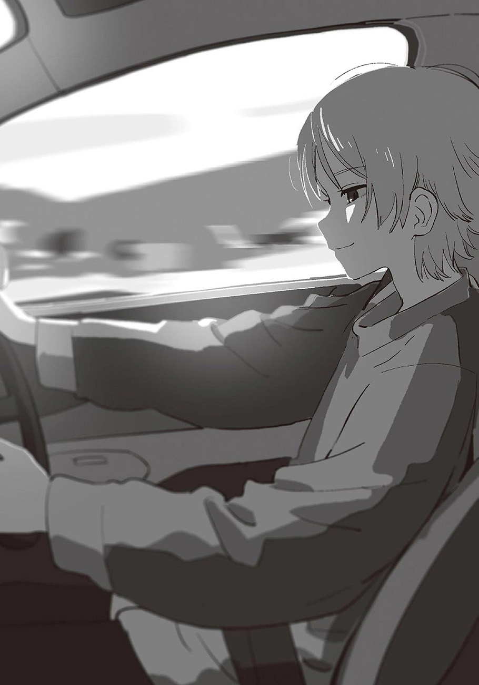雖然很驚訝，但又有種不意外的感覺。仔細想想，第一次見面時，我就覺得他比較成熟。本來以為他來自東京，閱歷比鄉下人多，所以顯得成熟。原來他的年紀真的比我們大。
他一直隱瞞這件事嗎？雖然是捉摸不清的傢伙，但是有那麼一瞬間，我感覺見到了他真正的模樣。
「……是說，我們要去哪？」
從剛才起，車子就在大馬路上筆直前進。我事先查過小樽的景點，必須開車才能到的場所有限。
「神威岬。」
「小樽有那種地方嗎？」
「從這條路直走就到了。你看看地圖吧。」
我依言打開手機，點開地圖。神威岬……
「等一下！太遠了吧！而且這根本不在小樽啊！」
「開快一點的話，只要一個小時就到了。放心，我會趕上說好的時間的。」
「不是吧，就算趕得上……離開小樽還是很不妙吧。」
「學校又沒說不能離開小樽。」
「是沒錯……」
即便沒有違反規定，被老師知道還是很不妙。說起來，考駕照本身就違反校規——雖然我這麼想，但如果世良的駕照是來椿岡之前就考的，應該沒有問題。這傢伙還真是沒有破綻。
我有很多話想說，但短時間內情緒上下起伏，使我覺得很累。我靠在椅背上，看著窗外的景色。小樽的街景不怎麼熱鬧，和椿岡有點像。假如不是路邊有積雪，應該會更像吧。
旁邊傳來哼歌的聲音，是現在流行的偶像歌。世良以放在方向盤上的左手食指咚咚地打著節拍，看起來心情很好。不對，他平常都是這樣。我沒見過這傢伙不開心的模樣。
「……為什麼你能這麼自由？」
疑問脫口而出。世良停止哼歌回答道：
「因為哥哥死前叫我要好好享受人——」
「這理由我以前聽過了。不認真回答也無所謂，至少說個我可以接受的謊話。」
「你總算知道該怎麼和我相處了。適應力很好哦。」
被他這麼說，我一點也不高興。
「我倒想反問，咲馬你不自由嗎？」
「這……要看自由的定義。」
「是啊。以前的哲學家說過，所謂的自由是能控制自己。例如為了變瘦而減肥，為了買想要的電玩而省錢……等等。相反的，忠於欲望的人，只不過是本能的奴隸。以這種說法來看，比起我，你和汐更自由呢。」
我有種上起生活與倫理課的感覺。雖然佩服，但也覺得答非所問。
「……我不懂你說的那些。我想知道的是，為什麼你能不在意他人的目光，也不怕被人討厭？」
「這是優先順序的問題。我多少還是會在意他人的目光。」
「騙人。」
「真的啦。我只是不想後悔，所以先行動再說而已。就像騎腳踏車，愈踩腳踏板，車身愈穩。只要我一直動，就能保持精神方面的健全哦。」
我已經不在意那些話是不是真的了。但如果一口咬定世良從頭到尾都在胡扯，對話會進行不下去。所以我姑且當成是真的。
「那樣能叫健全嗎？感覺會活得很辛苦。」
「所以我就說了，比起我，你和汐更自由。我啊，只要覺得這麼做很有趣，就非得試試看不可。我是本能的奴隸……這麼說有點太自虐了，改個酷一點的說法好了。我是直覺的隨從。」
「……感覺真蠢。」
「不過，我很快樂哦。我很享受我的人生。自不自由都無所謂。」
「……」
我不覺得羨慕。就如世良說的，人不可能沒有任何痛苦地活著。儘管如此，能那樣活著也不錯。有那麼一瞬間，我腦中閃過這想法。自己的價值觀稍微變質了。我有這種感覺。
自由，是本能的奴隸。
普通，是把價值觀強加在他人身上。
戀愛，是允許互相傷害。
每當發現隱藏在乍看普通的詞彙中的暴力，我就會感到窒息，什麼話都說不出來。
「完全搞不懂……」
轟——我的聲音，在進入隧道時，被回音覆蓋了。
愈是在沿海的公路上前進，積雪愈多。由於路肩積了許多雪，車道看起來窄小了許多。朝右邊望去，可以見到廣大的日本海。但我不想看到世良的臉，只好盡可能不朝右看。等回程時再好好欣賞景色吧。
我絕對不是在享受兜風之樂。
但是和一開始時相比，我對世良的厭惡淡了一些。也可以說是對他麻痺了。
「啊，你看。」
世良開口。我順著他的視線看去，是指示如何前往神威岬的牌子。世良照著牌子寫的右轉，開上斜坡。
「幸好沒下雪。氣象預報說下午天氣會變差，我本來有點擔心。」
「……這麼說來，我們為什麼要來神威岬？」
「因為這裡的景色很美。雖然聽說夏天時的風景最漂亮，不過冬天時的景色應該也很美。站在海岬最尖端吹海風，肯定很舒服。」
「哦……」
可惡，我有點期待了。
車子在蜿蜒的山路上前進，最後來到一片空地。似乎是停車場，但是周圍沒有其他車子。而且雪已經下到看不見地面的程度了。
我們走下車，強風吹起我的瀏海。這裡的風比小樽的更強更冷，溫度絕對在零度以下。我連忙從後座拿起原本脫下的外套穿上。
「好冷……要往哪邊走？」
「這邊。」
世良帶頭走了起來。對面有扶手般的裝置，似乎會延伸到海岬最尖端。我安分地跟在世良身後前進。
道路開始和緩地向上。雖然坡度不大，可是積雪很厚很難走。要是踩錯地方，可能會連腳踝都深深陷進雪中。
我看著下方雪地，戰戰兢兢地走著。途中發現比人類的腳小的腳印。應該是鹿的吧。這種地方居然也有鹿。對了，來的路上看到好幾次『熊出沒注意』的牌子。雖然說熊應該都冬眠了，但走在無人的場所，還是會覺得害怕。走路的速度因此變得更慢了。
我們在蕭蕭的風聲中前進，見到鳥居狀的入口，在入口停下腳步。
「門關著呢。」
「關著呢。」
緊閉的門上貼著寫有『基於強風，禁止進入』的告示紙。
世良沮喪地垂下肩膀，我也覺得有點可惜。
「欸～運氣真差……都特地來這裡了，卻進不去。」
「沒辦法。你放棄吧。」
「啊，乾脆爬過欄杆進去吧。」
「要去你自己去。我絕對不幹。」
「呿——好啦。我放棄。」
雖然世良那麼說，卻不肯離開入口。他看起鳥居狀入口上方的橫牌。其實我也很在意那塊牌子。
上面寫著『女人禁止之地』。
我湊近大門旁解說用的告示牌，上面詳細寫著：很久很久以前，愛奴族公主帢蓮卡與源義經相戀，源義經卻留下她離開了。帢蓮卡大受打擊，從海岬跳海自殺。在那之後，只要經過神威岬的船上載著女性，就一定會翻覆……是這樣的故事。
「為什麼要弄沉載有女性的船？該恨的人是義經吧。不然，至少該對男人作祟吧？」
「當然是因為嫉妒啊。自己被留下來，但是那些女人卻可以和男人一起上船，實在太可恨了……這種想法變成了詛咒。」
很有人性的怨念，是有真實感的傳說。雖然我不信這類怪力亂神，可是跳海自殺的橋段，會讓我覺得可能是真的。
「換作是我，我會不分男女，把所有經過的船全部弄沉。」
「沒人想知道你的意見……」
世良把手放在門的欄杆上，眺望遠方的海岬最尖端。
「嫉妒啊……若只對一個人執著，就會變成那樣。要是同時愛很多人，就沒這種問題了。」
「又不是所有人談戀愛都會變成那樣。再說源義經是平安時代的人吧？那種時代，怎麼可以同時愛很多人……」
「平安時代的貴族，同時有好幾個愛人是理所當然的事哦。雖然娶妻，但愛著其他女性的，也大有人在。」
「……只有貴族才那樣吧。至少不是普通的風俗民情。」
「不，當時整個日本都有夜訪的文化，腳踏多條船應該是很普通的情況。因為每個人都能簡單地與他人同床共枕，占有欲應該不像現代人這麼強哦。」
「這……」
我說不出話。
就算無法反駁世良，我也不覺得可恥。但是我不想退讓。不對，是不能退讓。不能輸給這傢伙！有道聲音在我腦中大叫。
「你說的是性欲，不是愛。」
「一樣啊。」
「不對，不一樣。就像義大利麵與義大利直麵的差別。」
「果然一樣。」
「就說不一樣了。笨蛋。性欲只是包含在名為愛情的廣大範疇下的一個種類。只不過是要素之一，不能當成愛情本身。你看到一顆螺絲時，會說『這是車子』嗎？不會嘛。」
「哈哈，很有說服力呢。」
世良離開欄杆狀的門。我以為他要回去了，沒想到他踏上旁邊的岔路，走了起來。我踩著雪，跟在他身後。
「看到螺絲，不會認為那是車子。可是沒有螺絲，車子就不能動哦。」
世良一面前進，一面說。
「你想說什麼？」
「不能小看性欲。絕大部分的人都有性欲，而且有時候，愛情還是從性欲發展來的。」
「但是也有被性欲毀滅的情況。比如外遇就是最好的例子。」
「你非常不想肯定性欲呢。」
「不是不想肯定……可是……」
說到一半，我失去了自信。後半句話被風吹散，應該沒被世良聽到吧。
——說不定，是不願意承認吧。
因為性欲是本能。是刻在基因中的天性，是為了讓自己舒服的欲求。可是愛情不同。愛情不是為了自己，是為了讓他人幸福而付出。
說起來『讓他人幸福』，這想法本身就是一種自我滿足了。所以我不得不承認，愛情與性欲在根源上是相同的。
「吶，咲馬，你——」
咻！一陣強風吹過。
身體因強風晃動，假如戴著帽子，一定會被風吹走。彷彿肉眼看不見的巨大猛獸在威嚇我們似的……剛才吹起了那般強風。
「你剛才說什麼？」
我因為聽不清楚，正想朝世良走近，他已經停下腳步了。
我們來到展望臺。這裡有片圓形的空地，可以三六〇度欣賞風景。我被吸引似地走向靠日本海的圍籬。
難以稱為美景的景色。天氣陰沉，看不出水平線，而且海邊的空氣白濛濛的，視野不佳。儘管如此，卻有一股奇妙的吸引力，使我的目光無法從海面移開。
「咲馬。」
名字被呼喚，我回過了頭。
世良難得露出認真的表情。
「你和汐做過了嗎？」
「啊？」
寒風刺骨，但是我的臉熱了起來。
「你、你莫名其妙地在說什麼啊？」
「我是認真問的。」
「住口。這不是該在這種地方問的事吧？再說問這種事太沒禮貌了。」
「看你的反應，是還沒做過呢。不過這也是當然的吧。」
世良拍掉圍籬上的積雪，坐在上面。
「你啊，是不是對沒辦法對汐產生情欲的自己感到自卑？」
彷彿有隻冰冷的手碰觸我的頸部，使我全身僵硬。
「明明是戀人，卻無法用帶著情欲的眼神看汐。不只如此，就連同性之間的肢體接觸都很排斥。你一直努力不去正視這個事實，對吧？」
明明風呼呼地吹著，世良說的每句話、每個字，卻都確實地傳入我耳中。儘管不想聽，又無法摀住耳朵，也無法阻止世良說話。
「所以你才會那麼固執，非把性欲從愛情那種廣大的範疇中切割不可。因為你不想懷疑自己對汐的愛。」
只要有一點鬆懈，風似乎就會把我的腿吹離地面。
我在丹田用力，使搖晃的身體站穩。接著緩緩把空氣吸入肺部。
「……你沒把這些話跟汐說吧？」
「猜對了呢。」
世良愉快地笑完，嫌煩似地把瀏海勾到耳後。
「放心，我沒說。應該說這麼過分的事，我怎麼說得出口。」
雖然不能相信世良的話，但我還是多少放心了一點。
我努力恢復平靜，握緊拳頭。
「那又怎麼樣？」
「嗯？」
「我雖然喜歡汐，可是無法愛他的身體。那樣怎麼樣？沒道理因為是戀人，就得非喜歡對方的一切不可吧。」
我盡可能地大聲說話。
「身體的連結，不是一切。」
「汐聽到的話會哭哦。」
呼——世良朝空中呼氣。白色的氣息於轉眼之間，隨風消逝。
「當然不是不行。可是我認為，你們的未來會很艱難。排除性欲的話，要怎麼確認彼此的愛情呢？說起來，你能滿足於沒有性的生活嗎？」
「無所謂。」
我立刻回答。
「我已經接受這個事實了。為了和誰交往而忍耐某些事並不稀奇。例如……為了約會省錢存錢之類的。」
「這應該不是那種層次的問題吧。」
「總之，我無所謂。只要能和汐一起看電影，一起去遊戲中心玩，一起吃拉麵，這樣我就很幸福了。我和你不一樣，不會見一個愛一個。我只需要小小的幸福，就能滿足了。」
「真了不起。節制到不像青春期血氣正旺的高中生呢。」
世良以挖苦的語氣說完，投降似地舉起雙手。
「OK，我知道了。你是能忍耐的人。我相信你。可是——」
世良笑了起來。
「汐呢？雖然你不需要，但是汐會想要吧？」
沒那回事。我沒辦法如此斷言。
老實說，汐確實表現出了那種……需求。然而我無法直視汐的欲望，所以一直不去思考這部分。
「他想要的話……我、我該怎麼做啊？」
「你大概想像得出來吧？不懂的話就直接去問汐啊。」
「那種事……我、我怎麼問得出口啊！」
「饒了我吧。」世良以厭煩的表情說。
「又不是上個健康教育課就臉紅的國中生，認真點思考啦。我都替汐覺得可憐了。你真的認為身體的連結是『那種事』嗎？是又髒又丟臉，難以啟齒的事？」
小鬼嗎？世良低語。
「就連性欲也不肯好好面對，以為你們能走多長久？肯定會分手的。」
我用力咬牙。
有種被人穿著鞋子踩進心房的感覺，很不愉快。而且對方還自顧自地說「這樣安排比較好」，擅自移動家具的位置。
雖然不愉快到極點，但是我確實也有「這樣安排比較好」的想法。
這傢伙說的話沒有錯。
「我承認自己想太少了。我確實……無視了理所當然地存在的部分，一直不去正視它。儘管很不爽，不過好好我會聽進你的建議。所以……夠了。不要再說了。」
「不可能。」
世良立刻回答。
「我看不下去你戀愛的樣子。太幼稚了。那種戀愛方式，任誰都不會幸福。說起來，你真的是因為喜歡汐才和他交往的嗎？」
我的臉頰微微抽動。
「你到底想說什麼？」
世良起身，朝我走來。強風吹起衣襬，他原本抓得有型的頭髮早已被風吹亂。
「你是不是把對汐的同情，誤以為是喜歡了呢？」
世良的雙眼，有如雙槍似地瞄準我。
「或者說——」
喀喇。放下擊錘的聲音。
「你想利用汐來證明自己不是會歧視人的人？」
強風再次吹來。
而且是撞擊全身的強風。可是這次，我的身體沒有因此搖晃。不只如此，我還在強風中朝世良逼近。
我吞下冷硬的空氣，開口：
「怎麼可能。」
回過神時，我已經揪住世良的領子了。手指用力到發抖。世良的表情完全不變，彷彿沒發現被我揪住領子似的，定定地看著我。
「你是怎樣？」
沸騰的怒氣驅趕了透骨的嚴寒。
「為什麼說得出那種話？我對你做了什麼嗎？為什麼要一直找我麻煩？你到底想怎樣啊？」
世良並不回答。
風愈來愈強。天氣開始變差，再過不久，說不定會下雪。
世良在被我揪住領子的情況下，緩緩開口：
「因為啊，咲馬。」
世良的體溫，通過我揪住他的右手，稍微傳了過來。
「我真正的目標，是你哦。」
✽
你喜歡那個叫紙木咲馬的人嗎？
……哈哈，不要露出那種表情嘛。
看就知道了。提到咲馬時，你的表情特別明亮嘛。和我約會時都一臉無聊。
不是約會？反正我們之後會交往，直接當成約會也行吧？
……嗯，我有信心。只要在期末考時拿到第一名就行了對吧？那種事簡單得很。只要拿到第一名，就能和你交往的話，我當然充滿幹勁啊。
是說，咲馬是怎樣的人？聽你的描述，他小時候該說很調皮呢……或者說感覺很傻？那現在呢？
……哈哈哈，都是壞話呢。
可是，你還是喜歡他？
不用否認啦。汐，你現在的表情和戀愛中的少女一樣哦。我有點吃醋，不過也開始好奇他本人是什麼樣的人了。下次和他說說話好了……
咦？真的嗎？
真不錯。我也常被說猜不出會做什麼事……我和咲馬說不定挺像的呢。
希望能和他變要好。
✽
「啥？」
我的手從世良的胸口滑落。
「目標……什麼意思？」
世良笑了起來。是宛如欣賞花朵時的溫柔笑容。
「依梨理、柚姊、小南……我希望你的名字也列入其中。」
「你開什麼玩笑？」
大腦拒絕理解。
不對，根本不需要理解。這是為了擾亂我而胡扯的話，和平常一樣。
「我沒有開玩笑哦。我是說，我喜歡你哦。」
「……你這傢伙，這句話聽起來像在告白喔。」
「就是在告白啊。不過我沒有和你親親抱抱的打算。如果你期待那種事的話就抱歉了。」
「怎麼可能期待。宰了你哦。」
「一開始，我只是從汐那邊聽說你的事，對你有點興趣而已。可是和你說過話之後，我非常想掰彎你的價值觀。所以啊，我希望你能加入我們。借用柚姊的話，就是成為團隊的一員。」
「哪有可能。」
我反射性地否決。
這些話太蠢了，反而使我沒那麼生氣。世良的告白完全沒有真實感，所以我毫無感覺。
「你是在最終決戰前勸主角加入自己陣營的魔王嗎？就算你的告白是真的好了，誰會答應加入之前一直以耍自己為樂的人的團隊啊？」
「正確來說不是魔王，是龍王呢。」
「都可以啦。總之，就算天崩地裂，我也不會加入你們。」
「是嗎？真可惜。」
世良嘆了口氣，抬頭向上看。只看表情的話，他似乎真的覺得很可惜，但這也肯定是演戲吧。他把視線移回我身上，搔著頭說：
「汐想和你分手哦。即使這樣，你也不考慮加入我們嗎？」
瞬間。
原本幾乎要把人吹倒的狂風停了下來。我有種被拋進無重力空間般的錯覺。
「我說你們一定會分手，不是單純的挖苦，是有證據的。」
微弱的光點，從眼前打橫飛過。
是雪。在風中飛舞的雪花，接連出現在視線之內。
「……什麼證據啊？」
喉嚨異常乾渴。
「你和汐交往的事，不是說好要保密嗎？然而被我發現你們在一起時，汐乾脆地承認了你們在約會。你覺得那是為什麼？」
「什麼為什麼……」
「說起來，他如果真的想保密，就不會在學生多的車站附近約會了吧？椿岡可以玩的地方本來就少，在人那麼多的車站附近約會，很容易被人發現。尤其是被我這種大嘴巴看到，後果一定很不得了。」
世良邁步行走。他經過我身邊，面朝日本海，感受海風似地張開雙手。
「汐啊，是希望能有和你分手的藉口哦。」
他繼續說下去：
「故意讓你們的事在學校被傳開，令眾人以好奇的眼神看你們……因為受不了八卦，所以沒辦法繼續和你在一起。他應該是想用這種藉口和你分手。」
「這些都只是你的想像。」
我對世良的背影說話。
「你講的話根本不構成說明。再說，光是前提就不對了。分手的藉口？那不是重點。汐為什麼想和我分手，你倒是說看看啊。你沒辦法解釋，對吧？」
「嗯。我確實不知道為什麼汐想和你分手。」
世良回過頭，老實承認。
「可是，汐想分手是事實。我向汐確認過了。」
「少騙人了。」
「我沒有騙你。前天你來汐的房間之前，我和汐單獨談過了。因為我本來就不認為你們能順利，而且汐也透露出想分手的態度，我猜測『該不會是這樣吧？』，向他確認剛才說的保密的事，他乾脆地承認了哦。」
——不能一直這樣下去。
那是輸了大富豪時，做為懲罰，汐說的祕密。那告白有如緩效性的毒，慢慢傳遍我全身。
「不可能。」
「不相信就算了。反正之後你一定能充分體會到的。」
地面的冰冷穿透鞋子，使我的腳尖失去知覺。
非比尋常的寒冷。可是我有如被樁子固定在地面似的，無法動彈。
「呵呵。」
世良忽然笑了起來。
「……有什麼好笑的？」
世良指著我的臉。
「你的表情。」
他以戀人說情話般的甜膩語氣說：
「既憤怒又驚訝又消沉……這種五味雜陳，難以形容的表情，我真的喜歡得不得了哦。」
低級至極的告白。
寒冷鑽入骨髓。內臟有如被曝露在空氣中似的。雖然什麼都沒吃，卻很想吐。
我早就知道世良是這種人了。而且從來沒有忘記。
……儘管如此，為什麼每次都會——
嗡嗡。手機振動起來。
我從口袋拿出手機，點開螢幕。
「是汐嗎？」
猜對了。
——我在音樂盒堂前等你。
這是訊息的內容。
「時間也差不多了，回去吧。我會好好把你送到汐那邊的。」
世良再次邁步。
他從仍然無法動彈的我身邊經過，把手砰地按在我肩頭。
「人生最後的修學旅行，可別留下遺憾哦。」
✽
在那之後的事，我沒有印象。
被世良載回小樽的路上，我幾乎沒有說話。就算開口，也只是「嗯」或「哦」之類的隨口回應而已。至於回應了什麼話題，我完全想不起來。
抵達小樽後，我下車前往音樂盒堂。只要在這條路上直線前進，幾分鐘後就能抵達了。我以手機確認時間，比說好的晚了大約十分鐘。
與神威岬相比，小樽沒那麼冷，風也不強。但是雲層很厚，正在飄雪。雖然還不到需要撐傘的程度，但不會想在戶外久待。
我快步走著，見到一棟復古的西洋風格建築物。那應該就是音樂盒堂吧。汐正站在建築物前。
「咲馬！」
汐發現了我，朝這邊跑來。
「我等你很久了。你還好嗎？」
「哦，嗯……」
我不知道該說什麼。雖然不完全相信世良說的話，然而汐對我有某些想法，應該是事實。而我很害怕知道「某些想法」是什麼。
汐緊張地觀察我的模樣。
「……世良對你說了什麼？」
「呃……」
我正想含糊帶過，咕嚕嚕～肚子叫了起來。對了，吃過早餐後，我就什麼都沒吃了。
我把手按在肚子上，掩飾肚子餓的事。發現我的反應，汐訝異地皺眉。
「難道你還沒吃午餐？那傢伙到底在幹嘛……」
汐恨恨地說著，「先去吃東西吧。」拉起我的手。
「好是好……但你應該吃過午餐了吧？」
「份量不多的話，我還能再吃一點。」
總覺得很對不起汐……不過仔細想想，是世良不好。換作平常，我應該會開始對世良感到不爽吧，但是我現在沒有力氣發火。
我們走進附近的海鮮餐廳，坐在櫃檯前的椅子上。我點了鮭魚蓋飯，汐點的是小碗的鮪魚蓋飯。這是北海道之旅第二次吃的海鮮蓋飯。我雖然沒吃膩，但現在實在沒心情享受美食。
「你和世良去哪了？」
「神威岬……你有聽過嗎？」
「不知道，在哪裡？」
神威岬位在從小樽開車約一個小時的場所。其實世良今年十九歲了，而且有駕照……我一一說明，汐瞪大眼睛，發出好幾次驚呼。雖然我在說明時吐露好幾次對世良的怨言，但沒有提到我和世良的對話。
餐點送上後，汐告訴我他早上做了什麼。
我和世良離開後，汐和星原等人一起逛了小樽。有真島、椎名、轟、七森同學……和其他人。人數相當多。一開始是搭遊覽船在小樽運河上觀光，之後吃了有點早的午餐，接著在小樽洋菓子舖LeTAO總店吃甜點。汐讓我看了星原臉上沾了鮮奶油的照片，可愛得令我忍不住微笑。
「……呼。」
汐嘆了口氣，放下筷子。
鮪魚蓋飯還剩一大半，但是他應該已經吃飽了吧。不但吃過午餐，連甜點都吃了，吃不完這碗蓋飯，也是很合理的事。
「如果你吃不完，我可以吃嗎？」
「哦，嗯。沒問題。」
我收下汐的鮪魚蓋飯。老實說，我沒那麼有食欲，但還是比剩下來好得多。
我把飯全吃完後，離開餐廳，回到音樂盒堂前。汐似乎打算和我在這裡會合後，直接進去裡面逛的樣子。
我們走進音樂盒堂。店裡空間寬敞，水晶燈發出柔和又明亮的光芒，有股異國風情。店中展示著各式各樣的音樂盒，發出好聽的音樂。
「哦哦——好美啊。」
汐感嘆地說著。他仔細地欣賞音樂盒。這些音樂盒不只音色美麗，外型也很精緻。有打開盒蓋就會傳出音樂的種類、人偶旋轉跳舞的種類、布偶形狀的種類……等等，每種都令人興味盎然。
「也有最近的曲子呢。」
「是啊。不過如果要買，還是古典音樂比較好。」
「我也覺得。流行音樂只要過幾年就會變成老歌，可是古典音樂不會比現在更老。」
「呃，我不是這個意思……」
汐拿起一只玻璃製，能見到其中構造的透明音樂盒。他轉動發條，音樂盒發出幾年前流行的動畫歌曲的旋律。
「就算是幾年前的老歌，還是有會重複聽的人。和新舊沒關係。」
「說、說得也是。對不起。」
「不用道歉啦。」
汐苦笑著，輕輕放下音樂盒。
我們緩緩地逛到店後方。汐瀏覽著琳瑯滿目的音樂盒，時不時地停下腳步。
「唔——該買哪個好呢……」
「你想買嗎？」
「是啊。當成伴手禮。媽媽……應該會喜歡這類東西。」
如果是雪姨，不論收到什麼禮物，應該都會很開心吧。我腦中浮現雪姨喜孜孜地收下音樂盒的模樣。
「小操呢？」
「在機場買白色戀人餅乾吧。比起擺飾，她應該更喜歡吃的。你呢？你不買點什麼送彩花嗎？」
「該買什麼好呢——我不知道彩花喜歡聽什麼音樂……我也買吃的送她好了。」
「是嗎？不過也可以當成給自己的禮物啦。因為很少有機會能買音樂盒。」
這麼一說，就有點想要了。我本來沒打算買，不過就預算來說，不成問題。
我們在店裡逛了約一個小時。
我和汐買了玻璃音樂盒。價格不會太貴，而且只有巴掌大小，也不會占空間。回到家後就擺在房間當裝飾吧。
我們離開音樂盒堂，前往小樽藝術村，來到花窗玻璃美術館。付了入場費後，進入館內。
與金碧輝煌的音樂盒堂不同，花窗玻璃美術館內很昏暗。這麼做是為了突顯花窗玻璃的鮮豔色彩。花窗玻璃比想像中更精緻，數量又多，非常有氣勢，我有種被震懾的感覺。
「好驚人……很有魄力呢。」
我向汐徵求同意，但是汐沒有說話。
我轉頭看向汐，只見他正凝視著眼前的花窗玻璃。我再次看向那扇花窗玻璃。玻璃上繪有一個在十字架墓碑墳前祈禱的人，旁邊有一名看起來像天使的存在，正在守護那個人。
花窗玻璃旁的牌子寫著《天使的祈禱》。說明文引用了啟示錄中的句子『你務要至死忠心，我就賜給你那生命的冠冕』。雖然不懂意思，不過可以感覺到其中的莊嚴。
「這花窗玻璃好美啊。」
我心想「打擾他不好吧」，但還是再次對汐說話。這次他有了反應。
「嗯，是啊。有種說不出的感動。」
「如此欣賞後，就發現祈禱的場面特別多。果然在古代，很多事都只能靠祈禱。」
「……也許吧。現代大部分事情都能靠科學解決，所以人們就不再求神了。不過……」
汐繼續說下去。
「就算是現代，還是有很多只能祈禱的事。」
「……」
汐靜靜地邁出步伐。
我們離開花窗玻璃美術館時，天色已經開始變昏暗了。天空不再下雪，然而雲層依舊很厚。
時間是下午四點。差不多該回集合場所了。
「回去吧。」
「嗯。」
集合場所離這裡不到十分鐘路程，我和汐並沒有加快腳步，而是慢慢走著。
兩人都沒有說話。從旁邊的國道呼嘯而過的汽車聲、海鷗的鳴叫聲、遠遠傳來的女生笑聲……周圍的噪音多到無法以安靜形容，可是汐的呼吸聲與輕輕吸鼻子的聲音，我卻聽得相當清楚。也許是因為我把所有注意力集中在他身上的緣故吧。
看見集合場所了。離集合的時間還早，但已經有一些學生在那兒等著了。
「咲馬。」
汐邊走邊問：
「反正還有時間，要不要繞點路再回去？」
「哦，好啊。」
我們左轉，朝海的方向前進。道路兩旁的商店逐漸減少，工廠或倉庫等大型建築物變得多且醒目。愈是靠近海邊，人就愈少。
我們走到路的盡頭。空氣中飄著濃烈的潮水味，打在防波堤上的海浪聲比想像中還大。我看向海面，大型船隻正朝著陸地方向航行。
「總覺得很像那個呢，黑道交易的場所。」
「不要講那種恐怖的事啦……他們不會在這種大白天交易吧？再說，最近好像都是在餐飲店的包廂交易哦。」
「哦，你還真清楚。」
「我在漫畫裡看到的。下次借你看吧。」
「我很期待喔。」
大約一個月前，我開始把推薦的小說與漫畫借給汐看。後來汐也自己買了。對方對自己的喜好感興趣，讓我很開心。
「話說回來，世良和你說了什麼？」
汐冷不防地發問。
雖然他問得若無其事，不過應該一直很在意吧。我在汐眼中見到難以隱藏的不安。假如敷衍帶過，他肯定無法接受。
我不是很想開口，但還是說出來吧。一直把那對話藏在心裡，我也很不好受。
「世良說你想和我分手。」
聽得到汐倒抽一口氣的聲音。
他似乎想說什麼，但是又住了口。只見他低下頭，過了一秒、兩秒後，戰戰兢兢地抬頭看我。
「你聽了，有什麼感想呢？」
啊啊——汐沒有否認自己說過那種話。
我有種下巴被拳頭擊中，腳步蹌踉的感覺。我不曾被人打過臉，但衝擊力應該差不多吧。我勉強站穩腳步回答：
「當然是很震驚。想到我在不知不覺中讓你失望了，就覺得很鬱悶。」
還有，比起我或星原，先把真心話告訴世良這點，令我很不高興。
可是我沒說出來。假如說出來，汐一定會受傷，而我也會陷入自我厭惡之中。
「不過——」
我有如談論自己的失敗經驗般，盡力不表現出沮喪地說：
「同時我也覺得，如果你真的想和我分手……我也只能認了。」
這話有一半是真心，一半是逞強。說得太悲壯，只會使我和汐的關係更加惡化。假如我們在這裡分手，我也不希望因此和汐變得形同陌路。那是我唯一非迴避不可的結局。
「你沒有做錯任何事。」
汐這麼說。從他的表情，看得出他不是為了安慰我或為自己辯解而說的。
「而且，我也沒有討厭你。現在也……還是喜歡你。可是，可是啊……」
汐的聲音有點哽咽。
「我確實想試著交往看看。一起出去玩，一起吃美味的食物，一起活動身體……和你在一起的時間很快樂，比和其他任何人在一起都自在。可是，就算不是戀人，當朋友也可以做到這些……我不禁產生這種感想。」
「……哈哈。」
明明不是該笑的場面，但我還是忍不住笑了。
沒錯。確實是這樣。
坦白說吧，我也有同樣的感想。所以我努力做出「像戀人的事」。然而特地思考戀人該做哪些事時，說不定就該退回去當朋友，而不是繼續當戀人了。
「希望你不要用負面的心態聽這些話。」
汐認真說著。話中帶著對笑出聲的我的責備之意。
「說這些話，也許會讓你覺得困擾……可是我想談的，是積極的事。」
汐慎重地挑選詞句。只是我想像不出來，能怎麼從這話題變積極。
只見汐做好覺悟似地吸了一口氣，直視著我。
「朋友以上，戀人未滿……不是有這種說法嗎？我很不喜歡這句話。因為這種話，像是在說朋友的地位不如戀人似的。」
冷風從我與汐之間吹過。
我聚精會神地聽著，以免汐的話被強風捲走。
「然而那種想法並不正確。戀人和朋友沒有高低之分。比起戀人，更重視朋友的人也不在少數。甚至有比親人的感情更深厚的朋友。戀人和朋友的差別，只在角色定位不同而已。」
「……是啊。」
我開始明白汐口中的積極是什麼意思了。同時，也猜到汐想說什麼。
「所以，這不是分手的問題。」
帶著堅定意志的聲音，敲響我的鼓膜。
「我想和你一直維持良好的關係。不想因為把你強行塞在戀人的框架裡，破壞我們之間的感情。」
呼。汐說完，嘆了口氣。原本緊繃的神經似乎放鬆下來了。汐以不太有自信的眼神看著我。
「你……怎麼想呢？」
「……我也想一直和你維持要好的關係。」
汐的眼中出現安心的神色。
可是，老實說，我覺得不太能接受。汐的說法沒錯，我也覺得這樣才是最好的選擇。儘管如此，我還是沒辦法完全接受這個提議。
朋友和戀人，沒有高低之分。
沒錯。
可是……汐不是想和我成為戀人嗎？想擁抱和接吻的欲求，現在怎麼了呢？他已經改變心意了嗎？
試著交往後，覺得「只有這樣？」而失去興趣了嗎？還是變得無法接受我了呢？如果是前者也就算了。但如果是後者呢？或者，還有其他沒對我說明的原因呢？
必須問清楚，否則無法結束。
「我可以問一件事嗎？」
汐的表情有點緊張。他屏住呼吸，點了點頭。
「嗯。」
「你想分手的原因，真的……只有那樣？」
汐的眼神出現動搖。雖然是極為微小的動搖，但我沒有漏看。
懷疑，變成確信。
「雖然我不想這麼說……但我覺得你還隱瞞了什麼。如果是因為顧慮我而沒說，還是說出來吧。不然……我無法接受。」
我也必須做好覺悟才行。
不讓靈魂赤裸地碰撞，就無法得到真正的答案。
「一直抱著祕密不說的話……會連好朋友都當不成的。」
大船的汽笛聲響起。
宛如宣告什麼開始的警報。
「……這算、什麼啊。」
汐的聲音發顫。
他壓抑地握緊拳頭。從聲音，從全身，迸發怒氣。但那不是純粹的憤怒，還帶著切實的渴望。
「把祕密全都曝露出來，說出真心話，才能當好朋友？」
我有如被定身似地，無法動彈。
「把心中汙穢的部分全部抖出來，才算得上親密嗎？」
我無法眨眼，意識被吸入汐的眼中。
「想維持漂亮好看的模樣，錯了嗎……？」
灰色的眸子浮起薄薄的淚膜。
我嚥下口水。喉嚨很乾澀，手掌卻不斷冒汗，冷得像把手放在冰水中似的。
我理應做好覺悟了——可是後悔已然追上，來到身後。
道歉能得到原諒嗎？我不知道。我甚至連自己哪裡錯了，都無法確實理解。但「這樣下去不行」的焦躁感既強烈且鮮明。
汐以袖子擦拭眼睛，抬起頭。
「我知道了。」
他的表情冷若冰霜。
「我也想反過來問你，你是真的想和我交往嗎？」
「當然想。」
「既然如此！」
嘩啦！一道特別大的海浪，打在防波堤上。
汐以快哭出來的表情，揪緊衣襬。
「既然如此……為什麼在接吻時，要露出那麼忍耐的表情呢？」
接吻時——
在汐家裡，幫我完成寒假作業時——
啊啊……不會吧。
全部，都被汐知道了。
——無法愛他的身體。
——汐聽到的話會哭哦。
知道我在勉強自己時，汐究竟受到多大的打擊呢？
——因為紙木同學很好懂。
為什麼會覺得沒問題呢？
汐早就看透一切了。儘管如此，他還是和我交往到現在。裝得若無其事，對我露出笑容。
我毀了他的體貼。
必須說點話……才行。
可是，該說什麼呢？該用什麼語氣說才好呢？就算道歉，也只會讓汐更覺得悲慘吧？然而要是承認，又等於在傷口撒鹽。好好思考吧。不過不能悠哉地慢慢想。離集合時間，還剩多久呢——
啊啊，可惡。我到底在幹嘛。
「……對不起。」
汐小聲道歉。他把視線從我身上移開，面帶歉色地低頭。
「為什麼是你要道歉啊……」
「你沒有錯。任何人都沒有錯。這是契合度的問題……不對。」
汐邁出腳步。
「這是……性取向的問題。」
一步，兩步。汐逐漸遠去。
我無法追上那道背影。伸手就能搆到，跑起來轉眼就能趕上，但就算那麼做，我也無法再次碰觸汐的內心了。
沒有盡頭的隔絕。
比起鴻溝，更該稱為深谷。很久以前起，就存在於我們之間的斷裂。一直以來，我們都是站在斷崖邊緣，努力探出身子，想握住對方的手。
可是如今，我連接近那斷崖，都感到害怕。
✽
回到定山溪的飯店，吃過晚餐後，我在自己房間打包行李。
明天早上就要從新千歲機場離開北海道了。我打算今晚先收拾好行李。話雖如此，也只是把髒衣服折好收進行李箱而已，照理說是不用花十分鐘就可以完成的事。
「唉……」
可是，我卻毫無進展。
每做一個動作，我就會嘆一次氣，停止做事。
「不要再嘆氣啦。有夠煩，連我都覺得憂鬱了。」
蓮見開口抗議。他說得沒錯。應該說，真虧他能忍到現在才開口。
「對不起……」
「發生什麼事了？如果你想說給我聽，就直接說吧。」
「不。我不是想說才嘆氣的……」
「那就不要再嘆氣了。下次再嘆氣，我會生氣哦。」
「好……」
啊啊，害蓮見不高興了。人生最後一次的修學旅行，只因為和我同房，就碰到這種事。真是對不起他。我對自己的愚蠢感到厭煩。為什麼自己這麼沒用呢……
我正想把錢包收進隨身包包裡，一顆枕頭砸在我臉上。威力猛到足以讓我腦袋搖晃。我身體歪斜，差點向後倒下。
「你幹嘛啦！」
「我不是說過了嗎？下次再嘆氣，我就要生氣了。」
「我哪有嘆氣！」
「明明就有好嗎？不過你應該沒有意識到自己在嘆氣吧。是說你自言自語的程度太恐怖了吧？」
「啥？我從來沒有自言自語吧。」
這次連我床上的枕頭都飛來了。來不及閃避的我，又被砸中臉。
「幹嘛丟我啦！」
「總覺得很不爽。」
「你這傢伙……！」
我把枕頭丟回床上。蓮見輕而易舉地接下枕頭，再次朝我丟來。
我燃起對抗意識，彷彿在發洩今天一整天累積的鬱悶，用盡全力丟出枕頭。這次確實地擊中了蓮見的臉，蓮見似乎也火了起來，不再丟枕頭，而是直接以枕頭打我。
「你犯規！」
「要你管。」
我不服輸地以枕頭打了回去。羽毛在空中亂飛，床單皺得亂七八糟，熱水壺倒了下來。
喀嚓。房間的門被打開。
「喂……安靜一點。」
體育老師出現在房間裡。他凶惡地瞪著我們，太陽穴的青筋暴凸。我和蓮見連忙放下枕頭。
「你們已經是高中生了，不要像小孩子一樣。搞成這樣……你們是笨蛋嗎？要是再讓我聽到吵鬧聲，你們就去走廊罰跪。」
「對不起……」
「受不了……安靜點啦。」
門關上了。
呼！我們同時吁了口氣，默默地收拾起房間。明明是在整理行李，為什麼房間會比整理前更亂啊……
收得差不多後，我在床鋪坐下。
「吶，蓮見。」
「幹嘛？」
他心情似乎有點差。是我的錯嗎？
蓮見從冰箱中拿出寶特瓶飲料，站著喝了起來。
「我啊……最近狀況很好。總算不需要煩惱人際關係，也知道如何享受人生了。和幾乎沒有朋友時相比，我似乎有點成長了……我本來是這麼想的。」
蓮見扭開寶特瓶的蓋子，坐在自己床上。
「但那只是我的誤解。是因為周圍的人全都溫柔地顧慮著我，而不是我以實力改變了什麼。大家比我以為的更成熟，只有我是長不大的小鬼。」
我自嘲地笑了起來。把這些想法化為言語後，竟是如此可笑的事。
「因為沒發現這才是真相，所以傷害了其他人。到底該怎麼做，才能長大，變成熟呢？」
「我哪知道。」
蓮見的回答很冷淡。他果然還在生氣。
「你只是陶醉在自己的罪惡感裡吧。」
「呃啊！」
我胸口受到重擊。沒想到蓮見會這麼說，受到的傷害比想像中大。
「惹你生氣是我不好……但你也說得太過分了。我真的會受傷哦。」
「對不起。」
「既然馬上就道歉了，那一開始就別說啊……」
「就是這樣。」
啥？我不解地歪頭。
「傷害人時說對不起，發現周圍的人顧慮自己時說謝謝。只是這樣的事而已。一點也不複雜。是你自己把問題複雜化了。事到如今，別再裝成文藝青年啦。」
沒想到蓮見會給我如此中肯的忠告。還以為他會隨便打發我，我有點感動。只是……
「總覺得你說話比平常毒辣？」
「誰教你害老師生氣。」
「是你先用枕頭丟我的耶。」
「因為你一直愁眉苦臉，唉聲嘆氣啊。」
「我又不是高興才那麼做……算了。不要說了。吵下去沒完沒了。」
又差點激動起來了。如果連跟蓮見都鬧翻的話，這趟修學旅行會變成最差勁的回憶。
我躺在床上，看著天花板。
「如果說對不起也不能解決，那該怎麼辦啊？」
「一直道歉到對方原諒啊。」
「要是那也行不通的話呢？」
蓮見思考了一會兒，回答：
「那就努力和對方說很多話。那樣一來，就能知道對方知道為什麼不諒解自己了。」
呼啊～蓮見大大打了個呵欠。
「我要睡了，先去刷牙囉。」
他說著，前往廁所。
——努力和對方說很多話。
簡單來說，就是和對方對話。果然只能這麼做了。沒有能輕鬆和好的方法。
可是，和汐對話之後……我希望兩人之後是什麼樣的關係呢？
我想成為汐的什麼人？
✽
「因為，紙木同學你……一直看著小汐啊。」
我想起昨晚的事。
我在自動販賣機前遇到星原。她偶然聽到我和世良的對話，也知道我曾經喜歡過她……在那之後，話題轉到為什麼知道我不會對她告白。現在想想，為什麼昨晚能談那麼難為情的話題啊？我感到疑惑。
「我……那麼常看汐嗎？」
「嗯。從很久以前就是了哦。不管是上課時或放學時，只要一注意，都會發現你在看著小汐。臉上直接寫著『我在意汐在意得不得了』哦。」
「沒到那種程度吧……」
「不不不，真的就是那種程度哦。」
星原含著吸管，喝起Soft活源。滋滋，紙盒微微凹陷，星原似乎已經喝完了。
「再說，你露出苦惱的表情時，通常都是在想和小汐有關的事，對吧？」
「這……也許吧。」
「看吧。果然是這樣。你沒有向我告白，真是太好了。」
雖然早就知道星原對我沒有戀愛的那種喜歡，但是重覆聽到這樣的話，我還是覺得消沉。
也許是發現我的想法了吧，星原有點緊張。
「啊，我不是討厭你哦！？」
「嗯、嗯，我很高興妳特地這麼說……」
「是真的啦。因為……假如，只是假如哦，就算我和你交往了，你也一定會一直看著小汐哦。那樣的話，我愈喜歡你，愈有可能吃小汐的醋……你不會覺得那種情況很討厭嗎？」
「會。」
我立刻同意。就算我和汐鬧翻，從此疏遠，我也希望汐和星原一直是好朋友。我一點也不想見到他們有心結的模樣。如果我成為他們的友情出現龜裂的原因，不如讓我孤單一人也無妨。
「所以啊，你和小汐交往，才是正確答案嘛。」
星原微笑著說。
那笑容使我覺得麻麻癢癢的。我喝起Soft活源，我的還剩一半以上。
「……真的嗎？」
我知道自己露出沒信心的表情了。
「有時候，我會不知道汐在想什麼。雖然一直看著他，可是也只是看著而已，沒辦法讀取出任何東西。如果事情在我不知道的情況下惡化……想到這裡，我就會很不安。」
「哦哦，是戀愛方面的煩惱呢。」
「並不是……不對，確實是這樣吧。」
不知道戀人在想什麼……這種事確實很常聽說。只要是情侶，應該都有過這樣的煩惱吧。是極為常見的，普通到不行的事。我開始覺得有點害臊了。
「我覺得你只要保持這樣就可以了。」
星原溫柔地說。
「為了誰而認真煩惱。這是你的優點。就算覺得不安，只要一直想著如何拿捏和小汐的距離，就沒問題了。再說……」
星原迷惘了一下，繼續說下去：
「小汐很迷戀你哦。」
「……真的嗎？」
「真的。因為……」
嘻嘻，星原想起什麼似地輕笑。
「小汐和我獨處時，聊的話題……有一半都和你有關哦。」
✽
眼睛熱了起來。天花板變得有點模糊。
我果然不想變成這樣。
不管是戀人或朋友都好，我想再次和汐笑著說話。要現在立刻去找汐道歉嗎？可是，該說什麼好呢？如果我又說了不必要的話，使我們的關係變得更糟，該怎麼辦呢？光是想像，就覺得胃痛。不然寄電郵給汐好了？那樣一來，說錯話的機率會比面對面時低。只要我認真思考，寫成文章，汐一定會回應我的。那麼現在立刻著手……
……不行。腦袋無法正常轉動。今天太累了。真的非常非常累。早上被世良玩弄，下午和汐分手……昨天滑雪造成的肌肉痠痛，也還沒完全消除。
修學旅行……應該很快樂的才對。我現在卻充滿後悔。
不希望就這樣結束。汐一定也不想吧。人生第一次的……應該也是最後一次的修學旅行，卻因為那糟糕的分手方式而毀了……總覺得很對不起他。
……我想全部重來。
希望修學旅行，能從頭來過……
如果能重來，我一定要徹底躲開世良，和汐兩個人盡情在北海道觀光。下次我一定會做得更好，讓這趟修學旅行成為最美好的回憶。然而，該怎麼做才能倒轉時間？聞薰衣草的香氣就行了嗎？
不妙，我開始逃避起現實了。時間怎麼可能倒流——
「啊。」
我從床上起身。
我想到一個點子。儘管很瘋狂，但順利的話，或許能挽回局面……也說不定。
修學旅行無法重頭來過。
但是可以延長。
✽
我小心不吵醒蓮見，安靜地打開門，踏上走廊。
早上五點。我躡手躡腳地在走廊前進。晚上老師會巡邏，可是這個時間，應該沒有人醒著吧。走廊十分寂靜。
我揹著後背包，裡面裝了最低限度的行李。行李箱被我留在房間。因為那八成會妨礙我行動。
我小心翼翼地前進，來到汐的房間前。
我做了一個深呼吸，打電話給汐。
鈴聲響起。一次，兩次，三次……
沒人接。他應該睡得很熟吧。
這是計畫的第一步，不能在這裡失敗。我收起手機，開始敲門。盡可能地以能吵醒汐，卻又不會在走廊製造噪音的音量敲門。
我一面在心中祈禱不會有老師或其他學生經過，一面敲著門。一陣子後，門裡傳出聲音。很好，吵醒汐了。
我放下手，不再敲門。不久後，門緩緩打開，穿著睡衣的汐以警戒的表情探出頭。
「……幹嘛？」
剛被吵醒的汐，心情好像很差……聲音比平常低沉了兩個音階吧。
我有點害怕，但不能就此撤退。我放低音量說：
「對不起，可以先讓我進去嗎？」
「唉……是可以……」
汐連理由都不問，直接讓我進房間。應該不是不再在意昨天的事，單純是還沒清醒吧。他的判斷力顯然相當低落。
汐坐在床上，身體微微搖晃。他似乎努力撐著隨時會闔上的沉重眼皮，看起來毫無防備。這麼說來，他以前說過自己有點低血壓。
我並不坐下，站著對汐說：
「對不起，突然來找你。不過有些話，我一定要說出來。」
汐茫然地抬頭看著我。儘管不知道他有沒有聽進去，但我還是希望能確實地說出自己的想法。
「昨天的事，真的很對不起。雖然你說我沒有錯，但那確實是我的錯。如果我沒說出那些話就好了。我很後悔。」
我低下頭，用力握拳。
「最重要的是，毀了你的修學旅行，讓我非常過意不去。本來應該是美好的回憶，卻被我搞成難過的回憶。我真的很痛恨自己的遲鈍。可以的話，我希望能讓修學旅行重新來過……」
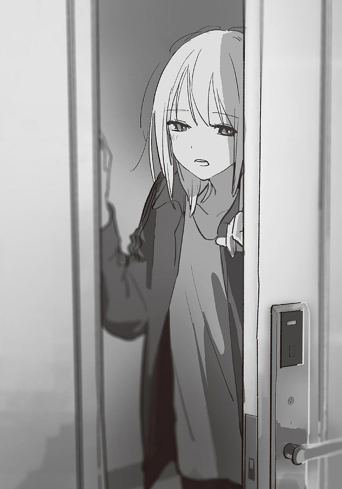我抬起頭。
「可是，那種事是辦不到的……所以我希望你能給我機會。可以和我一起走嗎？我想到不讓修學旅行在悲慘中結束的方法了。」
汐眨了眨眼睛，緩緩開口：
「對不起。我太想睡了，什麼都進不了腦袋……」
我有點想昏倒。不過這也是當然的。因為現在才早上五點嘛。是這種時間來找汐的我不好。可是我不能晚點再過來。
我在汐身邊坐下，握住他的手。身體的接觸，使汐驚訝地睜大眼睛。
「希望你能和我一起來。」
「唔、嗯……」
汐眼神因動搖而飄忽。不過看樣子，他有把我的話聽進腦中。
總之應該沒問題了。我起身，汐也跟著站起來。他以「要做什麼？」的眼神看著我。
「做一下出門的準備吧。要記得帶手機和錢包。最好連包包都帶著。」
「咦……要去那麼遠的地方嗎？」
沒錯。我點點頭。汐詫異地皺眉，但是沒有多問。
「等我一下。我要做點準備……」
「好。」
「……」
「……」
「我要換衣服，不要看我啦。」
對不起。我道歉後轉身。
身後傳來窸窣的聲音。我暗自放心。到目前為止，還沒有出現問題。對我而言，這是一場巨大的賭博，不能鬆懈。特別是說話時，一定要處處留心。
過了十分鐘。
「……汐，你還沒好嗎？」
「再等我二十分鐘。」
聲音是從廁所傳來的。他換完衣服後，就一直待在廁所裡。
「需、需要那麼久？」
「我正在弄臉…」
弄臉……？啊，化妝嗎？這麼說來，汐好像一直有化妝呢……雖然不該這麼悠哉，但這是必要的準備，也只能等了。
二十分鐘後，汐從廁所走出來。他已經穿上外套，做好出門的打扮了。儘管看起來還是很想睡，但他之後會慢慢清醒吧。
「那我們走吧。」
「嗯。」
我們踏上走廊。天色還很黑，但已經是早起的人開始活動的時間了。被學生看到的話，是沒什麼問題；可是若被老師發現，就得中止計畫了。
我握著還沒清醒的汐的手，快步走向玄關大廳。
「等一下……手……這樣很丟臉啦……」
「放心，這裡沒有別人。」
我們下了樓梯，離開玄關大廳。
「早安！」站在櫃檯前的飯店服務員很有活力地向我們打招呼。
「早、早……」
我臉上掛著僵硬的笑容，裝成一點也不可疑的樣子，從服務員前方經過。走出飯店後，汐放開我的手，用力瞪我。
「明明就有人！」
「對不起……」
沒想到這個時間也有人上班，飯店的工作真辛苦。不過沒被對方攔下，就結果而言等於沒問題。
戶外冰冷的空氣刺痛肌膚。我抬頭向上看，星星正在晴朗的夜空中閃爍，美到令人忍不住想嘆息。仔細想想，這是來北海道後，我第一次看到夜空呢。儘管想觀星，但現在有非做不可的事。
「我們要去公車站。天色還很暗，要小心腳下哦。而且地面很滑。」
「嗯，知道……咦？公車站？」
汐停下腳步，臉上出現困惑之色。
「等、等一下。你要搭公車？」
「對。」
「沒問題嗎？趕得上集合時間嗎……？」
「……趕不上。我們不回來。」
汐似乎完全清醒了，他以懷疑我腦子有病的眼神看我。
我本來打算到公車站後再說明，不過看樣子，得在這裡說明了。
「我希望你和我一起延長修學旅行。」
「延長……？」
「一天。只要一天就好。希望你和我單獨旅行。」
汐的表情更訝異了。我向他說明：
「對我而言，這次的修學旅行整體來說很快樂。你、我、星原三個人一起參觀札幌，我覺得很開心。海鮮蓋飯也很好吃。而且第一次滑雪，也滑得比想像中好，感覺很爽快。可是……我一直忘不了我們在小樽說的話。」
汐感到疼痛似地瞇起眼睛。
「痛苦的事比快樂的事更容易留在記憶之中。幾年後，說不定我會淡忘這趟修學旅行中快樂的部分，只記得不願回憶的那些事。我不希望變成那樣。而且如果因為我，連你也只記得討厭的回憶……這麼一想，我就睡不著。」
我朝汐走近一步。
「記憶無法消除……既然如此，只能用更快樂的記憶覆蓋了。所以我想和你一起去旅行，在這個北海道創造新的回憶。」
熾熱的氣息拉出白白的尾巴，融化在黑夜之中。
「不行嗎……？」
想說的話，我全都說出口了。我做好接受任何回應的覺悟。
刺耳的沉默降臨。半晌後，汐苦澀地開口：
「為什麼這麼極端啊……」
他頭痛似地按著額頭。
「……你是笨蛋嗎？不回去……之後要怎麼向老師們解釋？而且機票早就訂好了，這樣會造成許多人的麻煩。」
沒錯。我也覺得這個提議很蠢。可是除此之外，我想不到其他方法。再說也沒時間思考更妥當的計畫了。
「就算這樣，你還是想旅行？」
「嗯。」
我已經下定決心了。老師們肯定會氣到不行。而且把汐捲進來，也讓我有罪惡感。儘管如此，我還是想在這趟修學旅行中，創造最美好的回憶。
「不過，我不是要你非來不可，只要當成邀約就行了。如果不想和我旅行，就直接拒絕吧。那樣的話，我會二話不說地乖乖回去飯店。」
「說這種話……」
汐困擾地捏住袖子，垂下頭。
我知道自己出了殘酷的二選一給汐。雖然心痛，可是我也不能強行帶走他。
我安靜地等汐的回答。
噗噗噗，遠方傳來機車的聲音。在這麼冷的清晨騎機車，使我很驚訝。是為了工作嗎？太了不起了。我感動地想著。因為害怕汐的回答，我忍不住在意起其他事。
最後，汐下定決心似地抬頭。
「……真的能成為快樂的回憶嗎？」
「我會努力做到的。」
我在汐原本不安的表情中，見到豁出去的認命色彩。
「我也不喜歡那種結束方法……走吧，咲馬。」
我感覺全身血流加速。
這是賭博，還不能就此放心。不過我已經得到挽回的機會了，之後要做的，就是炒熱旅行的氣氛。
「謝謝你，汐。那我們快去公車站吧。錯過第一班車的話，會來不及換車的。」
「你早說啊。」
我們快步前往公車站，一路上都沒有說話，只是不斷擺動雙腿。依這個速度，應該能勉強趕上吧。
我們抵達公車站，坐進停在路邊的市內公車。車裡的暖氣使冰凍的身體鬆弛下來。我喘了一口氣，在附近空位坐下。因為是第一班車，車上幾乎沒有乘客。
「然後呢？我們要去哪裡？」
公車開始前進，汐發問。
「需要換車，表示不在札幌吧？」
他的語氣已經恢復成平常的感覺了。儘管不是什麼大事，但我忍不住笑了。
「我們要去宗谷岬。」
「宗谷岬……在哪裡？」
「在稚內。」
「稚內在哪裡？」
「北海道背鰭的最尖端。」
「……我自己查。」
我的說明太爛了。
汐點開手機，搜尋起『宗谷岬』。確認地點後，他驚訝地看著我。
「……真的要去那裡？」
「真的。」
「為、為什麼要去那種地方……很遠哦？」
「反正要旅行，能走多遠就走多遠吧。日本的最北端，聽起來不會覺得很興奮嗎？那裡離札幌和小樽很遠，景色一定不一樣……大概吧。所以……」
說明到一半，我感覺到這理由真幼稚，漸漸感到羞恥。挑選地點時，我認為非這裡不可，可是現在，我開始認為也許該考慮其他地方。
「原來如此……很像你會有的想法呢。」
汐傻眼地說著，嘴角仍微微上揚。
雖然感受不到汐的期待，但似乎不到選錯地點的程度。我鬆了一口氣。
若照預定進行，中午就能到稚內了。接著去宗谷岬觀光，從稚內機場飛到新千歲機場，再轉機到成田機場。這樣應該就能在今晚回到椿岡。
完美的排程。雖然很花錢，不過把存款全部提出來的話，應該夠吧。
……大概。
我們抵達札幌車站。
時間是七點半。同學們應該都起床了。蓮見應該也發現我不見了。我沒有把和汐延長旅行的計畫告訴任何人。
前往交通中心的路上，我透過ATM領出全部存款。我們在便利商店買了早餐與飲料，順便拿了幾包零食。接下來是長途巴士，得趁現在買好需要的東西。
「啊，下雪了。」
汐看著天空。
塵埃般的雪從空中落下。雖然速度不快，但每一片雪花都很大。地面已經有薄薄的一層雪了，接下來應該會有更多積雪吧。希望巴士開得動。
我們抵達交通中心，前往櫃檯。櫃檯前已經有不少旅客在排隊了。
「我昨晚已經打電話預約兩個人的座位了。只要付錢拿票，就可以上車了。」
「哦，準備得很周全呢。」
「因為我是認真的。」
我們加入排隊的行列。離出發時間還有十五分鐘，時間還很充裕。
「汐，要回頭的話，現在是最後的機會……你真的要和我一起來嗎？」
「都已經來到這裡了，我當然要去。再說，我對日本最北端也有點興趣。」
「是嗎……太好了。」
至少他不是不情不願地來的。這樣就夠了。
快輪到我們了。
「你的車錢我出。」
「咦？不用啦。又沒有多少錢。」
「不行，是我硬帶你來的，讓我出吧。不然我會過意不去。」
「不用了啦。你又不是多有錢。」
「沒問題，我已經把錢全部提出來了。讓我做點面子嘛。」
「就說不用了。不要擺出男朋友的樣子。」
啊。汐說完，立刻按住自己的嘴。
老實說，我有點洩氣。
「……對不起。」
「不……我確實有點打腫臉充胖子。你出自己的部分，我也比較輕鬆。」
「嗯……」
沒問題。這點小事根本沒什麼。我如此告訴自己時，輪到我們買票了。我和汐買了最後方相鄰座位的票。兩個月份的零用錢因此沒了。
快到出發時間了。
「我要上廁所。你不去嗎？」
「啊，不用。」
我一個人前往男廁。上完廁所後，我心生疑問。
……這麼說來，汐在外頭時，用的是哪一邊的廁所呢？
在學校的話，用的應該是教職員專用的女廁吧。約會時從來沒見過汐去上廁所。他是盡量不在外頭上廁所嗎？如果是的話，有點……該說可憐呢，或者該說對健康不好呢。
回來後，保險起見，我加以確認：
「你真的不先上一下廁所嗎？要搭很久哦。」
「……那我也先上一下廁所好了。」
他果然在忍耐。
汐朝廁所方向前進。走到一半，他停下腳步，看了我一眼後，走進女廁。
哦，是去那邊啊？
不久之後，汐回來了。不知為何，他似乎有點不高興。
「……你是不是在想『是去那邊啊？』。」
嗚……我的想法表現在臉上了嗎？就算想找藉口，八成也會被看穿，只好老實承認了。
「我是有這麼想……我只是在想，你的外表和打扮，進男廁的話，應該會嚇到其他人，所以才會去女廁吧。」
「一開始我是進男廁的哦。但是就像你說的，會嚇到其他人，還會被說『妳走錯了』……所以我後來都改去女廁。」
明明沒有做任何不應該的事，語氣卻像在為自己辯解。是因此覺得有罪惡感嗎？不過就我來看，我覺得沒必要這麼在意這種事。
「老實說，不論去哪邊，我都覺得不對勁……真希望能輕鬆地上廁所。」
「還真辛苦呢……」
我以為的階梯，其實是手扶梯；汐則氣喘吁吁地爬著真正的階梯……我腦中浮起那樣的場面。對我來說是沒什麼大不了的日常，對汐來說，卻是非得努力才能得到的成果。這麼一想便感到心痛。
我們來到月台，搭上前往稚內的巴士，走到底在最後方的座位坐下。汐坐在靠窗的那側。
雖然快出發了，可是車上的乘客只有我們。
最後，嘶——車門關上。我們徹底失去了與同班同學搭同一班飛機回家的機會，從修學旅行中逸脫。
「有點緊張呢……」
在這之前，我從來沒有違反過校規。居然在修學旅行時幹出這種事，我感受到悖德的刺激與興奮。
「這樣一來，我們就變成不良學生了。」
「你在說什麼啊……」
汐有點愉快地笑著。
離發車後過了大約十分鐘，口袋中的手機振動了起來。有來電。
「是蓮見打來的。」
「要接嗎？」
「可是，該怎麼說明現狀呢……」
我們正在從札幌前往稚內的路上，趕不上飛機了，我正和汐在一起……我沒有好好說明這一切的信心。而且就算說了，也不知道蓮見會怎麼對應。
煩惱到最後，我掛掉電話。過沒多久，蓮見傳了訊息過來。
『你到底在哪裡？我們已經先吃早餐了哦。』
「嗚哇——有多少個月沒收到蓮見傳的訊息了？讓他擔心了呢……」
雖然我覺得對不起蓮見，又有種事不關己的感覺。也許是因為現在的情況，太沒有真實感了。
「啊，我也有來電……是夏希打來的。」
怎麼辦？汐以眼神發問。
最好對星原好好說明比較妥當。我們不告而別，對星原的打擊一定很大。應該說，昨晚就該告訴她了。
「接吧。得讓星原知道真相。」
「嗯。我知道了。」
汐接起電話。我把頭靠到手機旁，以聽清楚喇叭傳出的聲音。
『喂，小汐嗎？妳還好嗎？妳現在在哪裡？已經是早餐時間了，可是到處都找不到妳，大家都很擔心妳哦。』
「對不起，夏希。因為有點事情……妳現在在哪裡？」
『和大家一起吃早餐。』
「老師也在那裡嗎？」
『咦？不，不在……伊予老師正在到處找妳和紙木同學。』
「……這樣啊。」
汐閉上眼睛。做好覺悟後，再次睜開。
「夏希，我現在要告訴妳原因，妳不要驚訝哦。還有，可以的話，希望不要讓其他人聽到我們的對話。」
『我、我知道了。』
喇叭傳出拉動椅子的聲音，應該是她起身移動到沒有人的地方了吧。
『好……現在可以說了。』
汐開始說明原委。令我驚訝的是，他是從我和他在小樽分手的部分說起。他似乎打算一五一十地將事情全部告訴星原。
說明時，我好幾次聽到星原想說話又忍住的吸氣聲。託汐很會說重點的福，不到五分鐘，他就說明完一切了。
『我知道了。也就是說……你們私奔了呢！？』
「這……唔～……」
汐求助似地朝我看來。就我而言，我心裡中同時存在「為什麼會解釋成那樣啊？」和「其實也差不多吧……」兩種感想。總之我點點頭。
「大概就是那樣吧。」
『噢噢……！太厲害了，既青春又浪漫呢！』
星原興奮地說著。她似乎不在意我們沒有事先告訴她，我暗自放心了。
『這件事，不要告訴老師比較好吧？』
汐遮住麥克風，向我發問：
「怎麼辦？」
這是得小心對應的部分。剛才汐和星原說話時，我已經想好了。
「不要說比較好。我不想造成星原不必要的負擔。再說，如果老師聯絡客運公司，我們說不定會被帶回去。」
「說得也是……」
汐恢復通話。
「嗯，請妳不要說出去。還有，也別讓其他朋友知道。雖然讓她們擔心很不好意思……」
『沒關係啦。因為是你們兩人一起做出的決定嘛，如果能不被任何人干擾地達成目標就太好了。我會幫你們加油的。』
「嗯……謝謝。」
汐笑了起來。我也很開心。雖然不知道這麼做是否正確，可是星原說的話，讓我覺得輕鬆了很多。
『啊，紙木同學也在對吧？』
「在哦。我在旁邊聽。」
『那我要說了哦……你們回椿岡後，要把旅行中的事告訴我哦。還有，如果可以的話……我們再三個人一起去吃飯吧。』
「嗯，說定了。」
不妙，我有點想哭。星原話中的溫柔滲入我全身。能和星原成為朋友，是我人生中少數值得驕傲的事。
『那你們就好好享受這趟旅行吧！』
「謝謝。」汐說完，結束通話。
汐把手機放在大腿上，有如沉浸在剛才的對話中，緩緩呼出一口氣。
「得買伴手禮給夏希才行呢。」
「嗯，是啊。」
稚內有什麼名產嗎？不知道那裡是否繁榮，至少有能買伴手禮的商店吧？
啊啊……能早點抵達嗎？稚內是什麼樣的場所呢？真期待。儘管也有不安，但我的心情愈來愈激昂。
……車窗外的雪愈下愈大了。
·8點21分
巴士離開市區，行駛在很有北海道風情、視野遼闊的幹道上。除過雪的馬路露出了柏油地面，但是其他地方全部積滿白雪。不消多久，我對全白的景色已經沒有任何感覺了。
與星原通完話後，汐的手機每隔幾分鐘就會振動一次。全是班上同學打的電話或傳的訊息。無視那些似乎令汐很不好受，他直接關掉電源。
至於我的手機，自從蓮見的訊息後，就沒有任何動靜。這就是人緣好壞的差別嗎？雖然我一直不覺得怎麼樣，可是像這樣把人緣具體化之後，還是有點傷心。
我正如此心想，手機振動起來，有人打電話給我。
「哦！是蓮見嗎……嗚哇！」
「是誰？」
「伊予老師……」
汐的臉上出現緊張的神色。
現在這個時間，學生們理應吃完早餐，準備集合前往新千歲機場了。這麼一想，就覺得伊予老師未免太慢打給我了。
「……要接嗎？」
「畢竟是老師打的，還是得接吧。就算不接，老師應該也會一直打來。」
可是，真不想接啊……接起來一定會挨罵……而且也不知道能和老師說什麼。告訴她我們要去哪裡嗎？要是老師們搶先抵達，在那邊的車站等著抓我們，就不好了……雖然不知道老師們會不會那麼做……
啊，算了。
「喂……喂。」
我豁出去地接起電話。反正遲早都要說明，不如早點說。
『紙木？你現在在哪裡？汐有和你在一起嗎？』
伊予老師的口氣很急。感覺她也有打給汐，可是是汐沒接電話，所以才找我。還是她一開始就打算先連絡我呢？……無論如何，都沒差就是了。
「是的。汐和我在一起。那個，我們沒有身體不舒服，也沒有遇到麻煩。」
『真的嗎？真的真的嗎？』
呼——伊予老師安心地大大嘆了口氣。
我和汐很好，也沒有碰上麻煩事。不過就校方來說，光是我們失蹤，就是天大的麻煩事了。
『你們現在在哪裡？快點回飯店吧。我幫你們留了早餐哦。』
「對、對不起……我們不能回去。」
『啥？不能回去是什麼意思？你們到底在哪裡？』
「呃……我們在往北方的巴士上。」
『巴士！？北方！？等一下，北方是哪裡！？』
「最北方。」
『所以是哪裡啦！？』
「對不起。那個……我們沒辦法搭同一班飛機回去，請老師幫我們取消座位。真的很對不起。我們會在今天回椿岡的……」
『當然要在今天回來啊！是說取消座位！？不會吧！？你好好解釋——』
我掛斷電話。
明明沒有被打到或撞到東西，握著手機的手卻又痛又麻。很像揮棒時沒有擊中球心的發麻感。這是做下重大決定造成的反撲嗎？
「伊予老師……很生氣嗎？」
汐戰戰兢兢地發問。
「我是在她生氣前掛斷電話的，所以沒有生氣。」
「……那麼，等我們回去之後，她會發飆吧。」
「是啊……」
我開始擔心會影響操性成績了。可是伊予老師直到最後，都沒有放棄打過兩次人的西園。雖然她應該會很生氣，但應該也只是很生氣而已……吧。
「我也關機好了……我沒有勇氣再接一次電話。」
「真的像是私奔了。」
汐淡然地說著。
雖然不知道他為什麼這麼說，但應該不需要做負面解讀吧。「是啊。」所以我也若無其事地這麼回答。
·9點10分
我吃完上車前買來當早餐的三明治，開始想睡了。窗外一成不變的風景，與車內的暖氣搭配在一起，成為難以對抗的睡意。我不動聲色地看向身旁，汐似乎也想睡了。
睡一下應該沒關係吧。因為從札幌到稚內，單程要六個小時。
我再次理解到這是多遠的距離。遠到令人懷疑兩地是否都在北海道。明明是旅行，大半的時間卻都花在搭車上。
……應該選更近一點的地方才對？
我再次感到不安。
「對不起，我先睡一下。」
汐揉著眼睛開口。
「嗯，沒問題。反正離稚內還很遠。」
「中午才會到對吧？還有好久呢。」
「……總覺得很對不起。選了那麼遠的地方。」
「沒關係啦。反正現在才後悔也來不及了……咲馬你也很想睡吧？先睡一下吧。」
「好……那就這樣吧。」
「晚安。」汐說完，把椅背放到最低，閉上眼睛。
我以鑲在車頭的時鐘確認時間。
九點嗎……大家應該已經抵達機場了吧。伊予老師現在還是很慌亂嗎？我有點在意，打開手機電源。
嗚呃……我差點叫出聲音。有數不清的未接來電。大多數是伊予老師打的，但是也有家裡的電話號碼，以及媽媽的手機號碼。連家裡都通知了嗎……
這下子，連媽媽都會氣到抓狂吧……不過我也猜得到會有這種發展就是了。
「……嗯？」
大約三十分鐘前，蓮見傳了一封新郵件過來。我打開一看。
『我幫你把行李帶回去了，下次請我吃飯。』
我笑了起來。
他應該只是被老師命令，不情不願地幫我搬行李吧。可是會特地告訴我行李的下落，是蓮見的體貼。回椿岡後請他吃午餐吧……如果我還有錢的話。
我也睡一下吧。
·10點45分
我從睡眠的深谷中緩緩上升。
腰很痛。我稍微挺起身體，伸了個懶腰，全身關節因此格格作響。我睡了多久呢？
……大約一個半小時嗎……
雖然身體很重，但是睡得很沉。現在的我已經完全清醒了。我看向身旁，汐正看著窗外發呆。他似乎比我早醒。
我把身子稍微向前傾，看向外頭。雪勢比入睡前更強。應該說，已經是暴雪了。
「嗚哇，天氣好糟……」
汐朝我看來。
「你醒了？」
「我才剛醒。你有睡著嗎？」
「我也是十分鐘前醒的。變暴雪了呢。不知道飛機還能飛嗎？」
我看向時鐘。照行程走的話，大家已經搭上從新千歲出發的飛機，正在飛往成田機場了。
「應該不用擔心吧。就算這裡下暴雪，札幌也有可能是晴天。話說回來，我們現在到哪裡了？」
我打開手機電源，確認所在位置。不過在那之前，大量的通知先闖進我眼中。從一個小時前起，伊予老師的來電通知便完全消失了。應該是搭上飛機了吧。比起那個，現在重要的是要開地圖看我們的位置。
「……快到旭川了嗎？總算到一半了。」
預定是下午一點抵達稚內，算是很順利吧？畢竟是北海道的司機，很習慣在雪地中開車……大概。
我正如此心想時……
『向各位旅客報告。』
廣播響起了。
司機以無線電般的麥克風說話：
『由於視野不良，本車將改為慢速行駛，抵達目的地的時間將會大幅延後，請大家見諒。』
嘟的一聲後，廣播結束。由於司機語氣冷淡，又說得很快，我無法立刻理解話中之意。只能在腦中一一處理每個單字。
「大幅延後……司機是不是這麼說的？」
「是啊。還說是因為視野不良。」
就算是北海道的司機，面對這樣的暴雪，也只能慢速開車嗎？是說，大幅延後的具體時間是多久？因為椿岡幾乎不會下雪，我無法推測需要的時間。
「會晚一個小時嗎……？」
「不，應該會更花時間吧？兩個小時以上……」
「兩個小時嗎……」
原本計畫好的排程，如沙堡般崩塌粉碎。我開始覺得自以為計畫很完美的自己是個大白痴。
「這樣能在今天之內回去嗎？」
汐的疑問，深深刺在我胸口。
「……晚兩個小時的話，有點危險呢。」
「是嗎？那就只好找地方住了。不知道錢夠不夠用……」
「對不起……不該是這樣的。」
以快樂的回憶覆蓋痛苦的回憶——這是延長修學旅行的理由。可是現在，旅行將會在移動中結束。幾乎沒有觀光，根本稱不上旅行。
「沒關係啦。天氣的變化是無法預料的……再說，這是臨時想的計畫吧？有漏洞也沒辦法啊。」
「……」
汐是想安慰我嗎？但有種被指出自己思考不夠周全的感覺，使我更加消沉。我似乎把感情表現在臉上，汐彷彿感覺自己說錯話，連忙別過頭。
氣氛變得有點尷尬。
「啊，對了。」汐想打破這種尷尬似地起身。
「有能打發時間的東西呢。」
他從我身邊經過，來到通道上，從行李架拿下自己的包包，從包包中拿出某種物品。
「噹噹！是撲克牌哦。」
啊啊……為了我這種人，汐還特地炒熱氣氛……他平常根本不是會說「噹噹！」的人……比起開心，我更覺得抱歉。
但如今繼續沮喪下去，也只是浪費汐的體貼而已。所以我努力打起精神。
「好耶。要玩什麼？」
「要玩什麼好呢？有兩個人也能玩的遊戲嗎……」
「你還記得快速接龍怎麼玩嗎？我們小學時不是常玩嗎？」
「記得。就玩那個吧。」
汐放下前方椅背的折疊桌，把牌分成紅色與黑色。是說，汐居然帶了撲克牌。他也想在修學旅行的晚上和朋友玩嗎？雖然有玩到撲克牌，但一起玩的對象是世良，真是最差勁的夜晚了……
啊啊，不行不行。光是回憶起來，就會一直耿耿於懷。還是與汐玩牌來覆蓋那晚的回憶吧。
「那就開始吧。」
「嗯。」
我們異口同聲說完「開始」，從牌堆抽牌。
·13點整
「黑白分明。」
「明豔動人。」
「人要衣裝。」
「裝腔作勢。」
「勢單力孤。」
「孤苦無依。」
「依然故我。」
「…………我膩了。」
汐大大嘆了口氣，把頭輕輕撞在車窗的玻璃上。
「了無新意。」
「夠了啦……是說，為什麼要玩成語接龍啊……」
「因為其他能玩的遊戲，都玩過了嘛……」
「就算是這樣……成語接龍……還是最無聊的遊戲啊……」
汐看起來很疲憊。不過那也是當然的。從札幌出發，已經過了大約五個小時，別說抵達稚內了，根本前進不到三分之二的路程。
車子的前進速度慢到令人忍不住心想「下車直接用跑的搞不好更快」。儘管不耐煩，但也不能催司機。因為外頭是能見度不到幾公尺的暴雪。天氣愈來愈差，現在甚至出現白曚天了，光是車子能繼續開，就已經是奇跡了。
除了上廁所之外，我們一直坐在狹小的巴士裡。由於乘客不多，所以能自由使用後方座位，是不幸中的大幸。
「啊，是夏希傳的。」
汐拿出手機。他已經打開電源好一陣子了。
「他們已經回到椿岡了，才剛解散。」
「已經這麼晚啦……」
如果沒有脫隊，我們現在也在椿岡了……還是別繼續想吧。
「直接打電話給夏希好了……」
「哦，好耶。我也想和她說說話。」
汐從通訊錄中點選星原的電話號碼，鈴聲只響了一次，就被接起來了。
『啊，喂？小汐？』
「夏希。我在這邊很無聊，所以打給妳了。你們已經回學校了？」
『嗯。等一下就要回家了。好累啊……你們到稚內了嗎？』
「還沒……因為暴雪，我們現在還在車子裡。」
『咦——！真的嗎？那還真慘……』
「就是啊。」汐如此回答。我只能苦笑。
『啊，對了！雖然在剛才傳的訊息裡也有說……雪姨那邊，這樣可以嗎？』
「哦，那個啊。嗯，沒問題。應該說妳幫了我大忙。謝謝妳。」
星原似乎把我們的事一五一十地告訴了雪姨。不是汐拜託她說的，是星原下的決定。至少要把真正的情況告訴家人。她是這麼認為的。
「是說，妳居然知道我媽媽的電話……」
『嗯，上次去妳家時交換了聯絡方式。雖然很少聯絡啦。』
很少聯絡，也就是說偶爾還是會聯絡了。她們會聊什麼呢？我有點在意……
「老師們的反應呢？」
『雖然有點慌亂，不過大家都回椿岡了哦。伊予老師也一起回來了。』
「哦……」
汐露出瞭然於心的表情。
伊予老師應該已經知道實情了。八成是雪姨告訴她的。身為學生的星原先不說，身為監護人，雪姨不可能不把實情告訴級任導師。汐應該也明白雪姨的想法吧。
『修學旅行時失蹤，是前所未有的事呢。你們應該會變成傳說哦。』
「這……感覺有點丟臉呢。」
『對了，紙木同學也在那裡吧？我可以和他講一下電話嗎？』
「好。」汐點點頭，把手機交給我。
在這種停滯不前的情況下，星原的聲音是無可取代的清涼劑。「喂？」我喜孜孜地接過手機。
『哦哦，紙木同學，你還好嗎？』
「普通吧。現在除了等車子到終點，沒有其他事能做。」
『是這樣啊……你和小汐，現在處得怎麼樣？』
星原壓低聲音發問。這才是正題嗎？
由於汐就在旁邊，不能說得太明顯。我維持原本的音量回答：
「還行吧。就是閒到發慌。」
『在巴士裡，除了說話以外，還真的沒其他事能做呢。只能下車後再拚拚看了。』
「是啊……」
『……』
喇叭的另一端突然安靜下來。是訊號太弱嗎？我心想，正想拿開手機，『不行～』喇叭中又傳出唉嘆的聲音。
『我想給你一些建議，卻什麼點子都想不出來。』
建議……？啊，原來是這樣。星原知道我和汐分手的事。在第一通電話時，汐就把所有事告訴她了。看來她在擔心我們。
「知道妳這麼想，我就很開心了。」
『真的嗎……？我知道這樣是多管閒事，但我還是很在意呢。』
隔著電話，也能感受到星原的浮躁與不安。
『也罷，是說，我認為不管做什麼，會後悔就還是會後悔，至少要樂在當下。』
「這不就是建議了嗎？」
『咦？真的嗎？派得上用場嗎？』
「派得上，派得上。」
『好！那就沒問題了呢！幫我把電話轉給小汐～』
心情切換得真快。雖然我想和星原多聊一會兒，但還是把手機還給汐。不過，心情上輕鬆了許多。
至少要享受當下……這確實很重要呢。
沒錯。就如星原說的，我現在能做的，就是好好享受這趟旅行。反正現在多的是兩人獨處的時間，不如多說一些話，一點一點地把兩人間的隔絕填起來。
好！要好好對話！
·19點21分
「……」
「……」
離預定抵達的時間，已經超過六個小時了。
搭上巴士，已經超過十一個小時。
十一個小時——久到足以令人失去意識的時間。
將近半天時間在車子裡度過。快樂的回憶或痛苦的回憶什麼的，感覺是很久很久以前的事了。現在的我和汐只希望能快點離開巴士。多到無窮無盡的時間，磨耗了我們所有的精神。
「……」
「……」
我站在座位之間，將上半身向後仰。全身關節劈劈啪啪地響了起來。總覺得身體像生鏽了似的。一直坐著不動，什麼話都不說，會讓心情很憂鬱。
「……遠足回程的遊覽車上，常常會播哆啦A夢的電影呢。」
我心想得說些什麼才行，翻找起過去的回憶。
「是啊。」
「那個時候啊，為了讓坐在後面的人也能看到畫面，遊覽車的中間不是有小小的電視機嗎？看到小電視機從旁邊移動到正中間時，不會覺得很興奮嗎？」
「會呢。」
「你喜歡哪部哆啦A夢的電影？」
「……咲馬，沒必要硬找話題哦。這樣沒有意義。不是因為覺得煩……你還是別逞強了。」
汐不看著我的眼睛地說話。
啊，不行了……完全不是能愉快聊天的情況。就算找話聊，也只會讓汐的心情變差。還是安靜點吧。
「……不可能在今天之內回去了呢。」
「……是啊。」
汐艱難地轉過頭看著我。
「宗谷岬，怎麼辦？」
真的還要去嗎？是確認我的意思的語氣。
「要去。要是不去的話，這趟旅行就沒有意義了。」
「旅行的意義……是什麼呢……」
汐靜靜地按著肚子。
「我餓了……」
看著汐那副快樂不快樂已經不重要的模樣，我感受到強烈的無力與疲勞排山倒海而來。一直以來，努力壓抑的負面感情，一下子潰堤了。
「我到底在做什麼啊……」
我自嘲地說著。
「這個樣子，不要說戀人了，連當好朋友都不夠格啊……」
汐的身體微微顫動。
原本閉上的眼睛睜開，汐嘆氣道：
「……不要為了讓我否定而說這種話啦。」
「我是真的失去自信了……」
「哦……那就好……」
不是生氣也不是傻眼，而是隨口打發。儘管是汐自己說到那邊去的，但是這能用「那就好」收尾嗎？我很懷疑。或者是因為他已經沒有認真回答的體力了呢？
不論說什麼，都只會反射性地回答……如果是這樣，就某方面而言，現在是說出真心話的好機會。因為汐會不加思索地做出誠實的反應。
「……我不是不想做戀人們會做的事。而是沒辦法做到。」
汐什麼話都沒說。
「我該怎麼辦才好呢？」
「要是知道，就不會這麼辛苦了。」
汐的回答還是很冷淡。也許可以再踩一下油門。
「我到底該怎麼做，才能用帶著更多情欲的眼神看你呢？」
汐猛然轉頭。
不妙……油門好像踩過頭了。我在說什麼啊？
「不要問本人啦，笨蛋……」
說的很對。我只能道歉。
汐把臉頰貼在車窗上，像是在為了幫被車內暖氣吹得火熱的身體稍微降溫。
「……你說更多，所以本來是有點帶著情欲嗎？」
汐維持著把臉頰貼在車窗上的姿勢發問。他語氣平淡，而且看不見表情，不知道他是以什麼樣的心情發問的。因此我也不再多想，老實回答：
「唔～……與其說是情欲，不如說是性癖受到刺激？」
「比如？」
他回問得很快。似乎有點激動。
「比如後頸啊，黑絲襪啊，頭髮的味道啊……」
「嗚哇，好噁。」
「是你要問的耶。」
呵！汐輕笑著，身體顫動起來。
仔細一看，他連耳朵末端都紅透了。之所以不看我，是為了掩飾害羞嗎？我覺得汐的這種部分，就像真正的女孩子般可愛。
但是耳朵的胭紅逐漸消失，汐的身體失去了力氣。
「不過，還是沒辦法呢。在身體構造方面。」
隔絕。我再次面臨了在小樽見過的深谷。
明明近在咫尺，卻又如此遙遠。我知道這麼做沒有意義，還是朝汐伸出手。
「汐——」
就在這時，嗶——廣播響起。
司機拿起麥克風。
『各位旅客，本車即將抵達稚內。』
✽
「太……太冷了吧！」
稚內的氣溫比札幌、小樽或神威岬都來得低。不只如此，再加上打橫飛行的暴雪，使曝露在空氣中的臉部肌膚為之凍結。被車內暖氣加熱過頭的身體，一下子冷到骨子裡。
汐渾身發抖。
「接、接下來要怎麼做？」
「先去找東西吃吧。我已經快餓死了……附近好像有拉麵店，要吃那裡嗎？」
「嗯。只要是熱的，什麼都好……」
「那我們走吧。」
我們從交通中心出發，快步走向拉麵店。我已經在巴士裡把稚內的地圖記住了。這裡不是什麼大城市，所以並不難記。
時間是晚上八點，而且是車站前，附近卻完全見不到人影。不過這也是當然的。就連稚內市民，也不會在這種暴雪中出來蹓躂。總覺得一不小心就會迷路，凍死在路邊。
「汐，你還跟得上嗎？」
「勉強、可以……」
汐有點落後。雖然他體力比我好，但也許是因為飢餓與寒冷，以及長距離移動造成的疲勞吧，所以走得比我慢。我的狀況之所以比他好一點，與其說是體力好，不如說是天生比他有耐力吧。
我以手拍掉卡在睫毛上的雪。雖然想過撐傘，不過折傘似乎沒什麼用。稚內的雪很乾，一拍就掉。算是冰點以下氣溫的少數好處之一。
五分鐘後，我們來到拉麵店。只不過五分鐘路程，但我已經身心俱疲了。我們拍掉身上的雪花，走進店裡。店面很小，只有吧檯座位。除了我們之外，僅有兩名客人。
我們打開菜單，點了一樣的拉麵。我點了炒飯，汐點了煎餃作為配菜。我們沒力氣說話，只是安靜地等食物送上來。
「久等了。」
拉麵送來了。
睽違約十二小時的進食。我吞下幾乎流出來的口水，猛地吃起拉麵。
我和汐狼吞虎嚥地吃著。搭了十二小時的車後吃的拉麵，好吃到天地不容。充滿鹽分的湯、叉燒肉的油脂，全在胃中轉化為活力。
我把湯喝到一滴不剩，炒飯也吃到一粒不剩。直到吃完所有食物為止，我和汐都沒有說任何話。
我沉浸在飽足的餘韻中，開口表示：
「好了。接下來才是問題。」
「要在哪過夜，是吧？」
「沒錯。很多旅館會在冬天休業。就算有營業，不是太遠就是太貴。所以我們能選的旅館只有一間，也只能去那裡了……但是有一個問題。」
「問題？」
「要走三十分鐘的路。」
汐皺眉。
三十分鐘。在椿岡的話，那不是什麼大不了的距離，可是從交通中心步行到這間拉麵店的五分鐘，我們已經知道在暴雪中走路是多艱難的事了。
「搭計程車呢？」
「雖然我很想叫車，可是……現在手上的錢，只能付旅館費而已。你那邊有多少？」
「……一萬，和一些零錢。」
「有點危險呢……」
唔，該怎麼辦呢……
雖然不至於真的在市區遇難，可是風雪又大又冷，有如在鞭打長時間行走而疲憊不堪的身體。
我們正在煩惱時，我發現原本就在店裡的客人興味盎然地打量著我們。那是兩名中年男人，應該是當地人吧。他們把臉湊近，說起話來。
「他們為什麼會來這種地方啊？」
「肯定有內情唄。」
似乎在說我們的事。好、好尷尬……
汐似乎也聽到他們的對話，不悅地皺起眉頭。
應該是從我們剛才的交談知道我們是外地人，才這麼大剌剌地說話吧。
「……咲馬，我們走吧。」
「嗯……走吧。」
只能做好覺悟了。
到頭來，我們還是用走的前往旅館。
旅館位在大馬路上，只要筆直前進就行了，不需要擔心迷路。比起迷路問題，暴雪更令人痛苦。
總之，非常冷。
彷彿會凍結全身似的寒冷。即使戴了手套，手指還是麻到無法活動。而且因為衣服不防風，冷風灌進衣服內側，奪走更多體力。
「呼……呼……」
我體會著在冬天攻頂的登山家的感覺。離開拉麵店沒多久，走在我身旁的汐已經氣喘吁吁了。
我以袖子擦拭濡溼的臉，早已分不出那是融化的雪還是鼻水。
離旅館還有多遠呢？完全見不到前方的景色。再這樣下去，就算來到旅館附近，也可能無法發現旅館。稚內市民是怎麼在這麼極限的土地上度過嚴冬的？太不可思議了。還是說，單純只是今天天氣特別差呢？
為了不去意識寒冷，我的內心話比平常更多。
「汐，你還好嗎？……汐？」
我的身旁，沒有人影。
有種全身血液倒流的感覺。原本就血液不足的大腦，變得更加缺血。
我連忙回頭，在雪中見到隱約的人影。
「汐！」
我調頭來到汐身邊。
「喂，你還好嗎？」
「……還、還好。」
汐臉色很差，看起來很不好。
我拉著汐的手，幫他擋風似地走在他前方。
「等一下……手……」
「沒關係吧。」
「……我們又不是戀人。」
我火大了起來。
「現在不是在乎那種事情的時候吧。」
我說完，想強行拉著他行走。手卻被揮開了。
「不是『那種事』。」
汐逞強似地加快速度，走到我前方。
「不是『那種事』……」
「……」
我默默地追上汐，與他並肩。但他加速的時間不長，不一會兒，汐又落後了。
雖然徒步時間是三十分鐘，不過那應該是在一般狀況下的行走時間。照這個樣子，就算走一小時，可能還是無法抵達。儘管想暫時找個地方休息，但大概是因為這場暴雪，到處都看不到還有營業的商店。更正確地說，商店本身就很少。
在暴雪中行走令人不安，我們暫時在看似市民中心的建築物下方避難。氣溫還是冷到令人發抖，至少沒有風雪了。
「呼……實在太慘了。」
我拍掉身上的雪，搖著頭。雪塊從我頭頂落下。
仔細一看，汐的頭上也有雪塊。他似乎沒有發現，我伸手想幫他撥掉雪塊。
「！」
啪，我的手被拍掉了。
明顯的拒絕，使我有點受傷，不過是突然伸手的我不對吧……
「你頭上有雪哦。」
「跟我講的話，我會自己拍掉……」
「對不起……」
我別過臉。
暴雪沒有停止的意思，可是明天一定要回椿岡，我開始擔心飛機是否能起飛了。不只如此，說不定沒辦法去宗谷岬了……總之，我太小看北海道了。
「……還是叫計程車吧？」
汐朝我看來。
「你錢不夠吧？」
「可是，如果沒辦法抵達旅館，不就沒意義了嗎？最壞的情況……兩個人一起出錢，訂一間單人房。」
「……單人房不能住兩個人吧。」
「是啊，所以一個人在大廳過夜。」
「那樣更不行吧……」
汐嘆了口氣。他的睫毛沾滿雪，嘴唇發紫。
「都已經走到這裡了，也只能繼續走下去了。」
「可是……你好像很難受。」
「我的體力比你好。」
「你走得那麼慢。」
「那是我平常的走路速度。」
「幹嘛那麼固執啊……」
雪白的臉浮現朱紅。
「你從剛才起就一直很囉唆耶。我都說沒問題了，相信我啦。還是怎麼樣？想擺出男朋友的架子？」
「不，我是擔心你……」
「說起來。」
汐凌厲地瞪我，以怨恨的聲音說：
「要不是你說想來稚內，我就不會碰上這麼悲慘的事了。」
我有種頭部受到重擊的感覺。
這句話，是我最不想聽到的話。
為了覆蓋修學旅行中討厭的回憶，我約汐來稚內。我一心想著要讓汐開心，可是，果然，只是徒勞無功。不，與其說徒勞……根本是給汐帶來更多麻煩。
讓他搭十幾小時的車，讓他在暴雪中走路。冷靜想想，這根本是在找罪受。讓汐有更多不好的回憶，根本是弄巧成拙。
我只是單方面地把善意壓在汐身上。打從一開始，汐就沒有任何期待。
太蠢了。自己就像無頭蒼蠅似地白忙，一廂情願地一頭熱。
「……對不起。」
休息結束了。
我朝旅館的方向前進。
「啊，等一下……」
慢了幾步後，汐跟了上來。
我不再回頭。因為我沒有臉見他。
我們忍耐著暴雪行走，總算抵達旅館。大廳的暖氣令因寒冷而緊繃的身體放鬆下來。我今天再也不想走到室外了。應該說，出去的話會死。
我以遇難者的步伐走向櫃檯。一名年輕女性過來應對。
「晚安，請問有預約嗎？」
「啊，沒有……請問還有房間嗎？」
「……請稍等一下。」
如果已經客滿，沒辦法在這裡過夜，該怎麼辦？我本來計畫當天來回，所以沒想到要訂房間。也許該提早預約的。
像是在消除我的不安，櫃檯小姐笑著回答：
「有空房哦。請問是兩位要過夜嗎？想要什麼樣的房間呢？」
太好了……
不過，什麼樣的房間啊……我朝汐看去。
「……我都可以。」
就算汐這麼說，但我和汐不是戀人，不能住同一間房。
……這樣說會不會太假了？
老實說吧。和汐在一起，我會很尷尬。而且如果再次讓我體認到自己是一廂情願地一頭熱，這次真的會無法振作起來。為了不讓自己受傷，同時不對汐造成更多困擾，我必須好好劃清界線。
「兩間單人——」
「啊，有情侶專案哦。」
「……情侶專案？」
「是的。因為您們是兩位客人，所以為您們介紹。這是經濟雙人房，比兩間單人房或一間雙人房便宜哦。」
「……」
沒想到會在這種地方被確認我們是不是戀人……
在這之前，我們是不是戀人，單純是心情上的問題，可是現在卻出現情侶專案這種「制度」。必須再次確認我們之間的關係才行。價格比較便宜是好事，但汐又是怎麼想的呢？
——想擺出男朋友的架子？
——我們又不是戀人。
他果然不想和我同房吧。
既然有那種可能性，就該放棄情侶專案。雖然比較便宜，但應該也沒差那麼多。比起錢，應該以汐的心情與隱私為優先。
「不，一般的——」
「那就情侶專案吧。」
汐打斷我的話，搶先說完。
我訝異地轉頭，見到汐露出「其中沒有任何誤會」的堅定表情。
「好的。那麼保險起見，請讓我向監護人進行確認——」
汐拿出手機，打電話給雪姨。我本來也想打給媽媽，不過似乎只要確認其中一人就可以了，因為只是形式上的確認。
……是說，我完全搞不懂汐在想什麼呢。雖然不是第一天這樣了……
我打開房門，走進房間，放下行李。
房間比想像中大，可是床鋪比想像中窄。以這個尺寸，兩人躺下時，應該會碰到肩膀吧。所以說是情侶專案嗎？我理解了。
「汐，我要打電話。你要不要先洗澡？」
「那我就不客氣了……」
汐走進浴室。
見他確實地關上門後，我從口袋拿出手機。由於電力只剩5％，所以我從背包中拿出充電線充電。
我在未接來電紀錄中點選「媽媽」，撥了回去。
「喂？是我。」
『請問您是哪位呢？我家兒子已經修學旅行回來，在自己房間裡了哦。』
這個反應，似乎非常生氣呢……
「那個……我是紙木咲馬。算是您的兒子……」
『……你現在在哪裡？』
雖然語氣是生氣的，不過似乎願意聽我說話。我鬆了一口氣，回答：
「我們現在在稚內的旅館裡。其實我本來想在今天之內回去，可是碰上暴雪，巴士很晚才到稚內。」
『你打算怎麼回來？』
「明天搭飛機到成田機場。不過，有個問題……」
『……說吧。』
「那個，我的旅費已經不夠了。可以的話，希望您能轉一點錢到我戶頭……」
我諂媚地笑著，以抱大腿的語氣說話。
付了巴士的費用與旅館費後，我幾乎身無分文。這樣一來，別說明天回去了，連宗谷岬都不能去，甚至沒辦法吃午餐。向媽媽討錢，是這趟旅行中不可或缺的課題。
『我說啊……你以為從北海道到成田，要多少錢？』
「呃……一萬圓左右？」
『雖然要看航空公司的等級，不過前一天預約，而且是從稚內出發……光靠你的壓歲錢，是絕對不夠的哦。』
「真的嗎！？有那麼貴嗎？」
『如果搭巴士到札幌再改搭飛機的話，會便宜一些呢。』
「……妳真清楚。」
『我已經事先查過了。為了你哦。』
呼——喇叭那頭傳來呼氣聲。她似乎又在抽菸了。
「……對不起，我已經不想搭巴士了……如果又晚十幾個小時才到，我會發瘋的。希望妳能幫忙出從稚內搭飛機回來的機票費……」
『你以為自己有立場挑三揀四嗎？』
這是真的要說教的前兆。嗚，我狼狽起來。
『知道你造成多少人的困擾嗎？我接到伊予老師的電話時，羞愧到差點昏倒哦。而且你還把小汐捲進來。』
「妳、妳連那部分都聽說了？」
『反正主謀一定是你啦。』
有道是知子莫若母。不愧是當媽的人……
『小汐還好嗎？』
媽媽的聲音中帶著擔心之色。
「他正在洗澡。剛才在外頭走時，好像被冷到了，不過我想應該沒事。」
『就算你回不來，也要好好地讓小汐回椿岡哦。』
「我知道啦……」
『一定要做到哦。因為你很粗心大意……』
呼——長長的呼氣聲。但這次不是抽菸，而是真正的嘆氣吧。
『……我會把錢匯到你戶頭的。還有，我會幫你預約從稚內出發的飛機。詳細部分之後再傳給你。』
「喔喔……謝謝！……啊！對不起。我們明天一定要去宗谷岬，所以可以加上那部分的交通費嗎？我想五千圓就夠了。」
『你在開玩笑嗎？』
「對不起。我一定會還錢的。但是我一定要去……拜託了！」
雖然媽媽一定看不到，但我還是自然地彎腰鞠躬。因為這是我的真心請求。
媽媽似乎也感受到這一點。【+】
『唉……我知道了。』
哦？我抬起頭。
『管你打工還是做什麼，要在高中畢業前把錢還我。還有，如果趕不上明天的飛機，我會把你房間的遊戲片全都賣掉。』
「好、好的。」
『……那就這樣。要注意安全啊。』
電話掛斷了。
這樣一來，錢的問題就解決了。得好好感謝媽媽才行……是說在北海道旅行，真的很花錢呢……
我以房間裡的熱水壺泡紅茶，悠閒地喝了起來。浴室的門打開。
「久等了。」
「嗯。那就——」
換我洗了。說到一半的話卡在喉嚨。
汐穿著浴袍。腰帶製造出腰身，胸前的領口大開。臉頰因熱水而泛紅，頭髮還是溼的。
「換……換我洗了。」
我心生動搖。我僵硬地把話說完後，為了掩飾動搖，快步走進浴室。
關上門後，我輕輕調整呼吸
嚇、嚇我一跳……雖然旅館本來就會提供浴袍，可是我太大意了。沒想到穿浴袍時，會露出那麼多肌膚……
不對，我在想什麼啊？還是快點洗澡、快點休息吧。
我進入洗澡間，以熱水淋頭。我快手快腳地洗完頭與全身後，以旅館提供的毛巾擦乾身體。我也換上浴衣，但是下半身涼颼颼的，讓我有點不自在。而且浴袍直接摩擦肌膚的感覺也怪怪的。雖然穿起來不太舒服，但比穿白天的衣服睡覺好多了。
我走出浴室，汐正坐在椅子上吹頭髮。
「哇，好快啊。」
「我常被這麼說。不過我真的有洗乾淨哦。」
「我又沒有懷疑你……」
就在這時，汐的頭髮剛好吹乾。他把吹風機交給我，趁著我吹頭髮時去浴室刷牙。我關掉吹風機時，他也從浴室回來了。
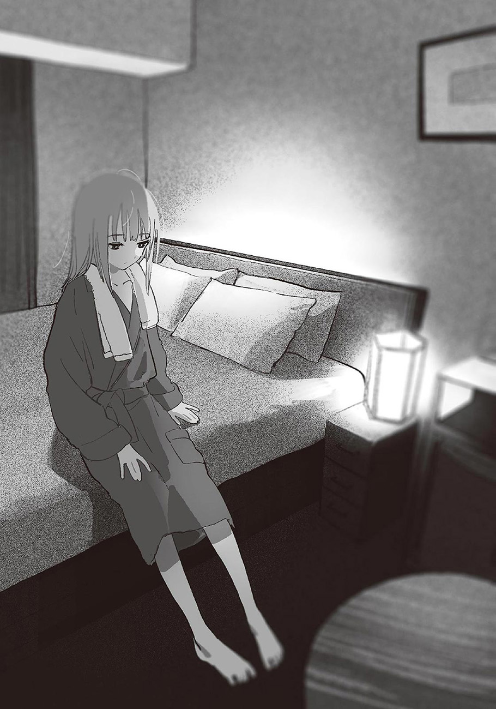接下來我去刷牙。刷完牙後，總算可以睡了。
我漱完口，回到房間時，汐還沒睡。他坐在床邊，無聊地晃動雙腿。
難道他有話和我說嗎？
「你還不睡嗎？」
「我想先確認明天要做什麼。」
「啊啊，說得也是。」
都忘了還有這件事。我對產生錯誤期待的自己感到可恥。
我打開手機，點開媽媽傳的郵件。郵件中有詳細的班次與時間。起飛時間……是下午。很好，這樣一來，就能趁著早上去宗谷岬了。
「明天早上搭巴士去宗谷岬，下午從稚內機場搭飛機回來。詳細的時間我再傳給你。」
「…這樣啊。」
總覺得汐的表情有些沉悶。
我在床邊坐下，端詳他的臉。
「……你不想去宗谷岬？」
今天巴士延遲到地老天荒的程度，就算汐不想再坐巴士也不奇怪。連我都有點心靈受創了。
或者說……汐不想和我在一起？說實話。這個理由的可能性比較大。
「不是。我想去看看宗谷岬。畢竟都特地來這裡了。」
「那就好。」
「……關於剛才的事，我想跟你道歉。」
沙沙，汐滑動似地在床單上轉動身體，面朝著我，最後垂下頭。
「剛才……我說了很過分的話。其實我只是在亂發脾氣。真的很……對不起。」
「沒關係啦……過程很糟是事實。說起來這是臨時起意的計畫嘛。該道歉的是我才對。」
汐仍然垂著頭。他揪緊床單。
「坐那麼久的巴士，確實很難熬。在暴雪中走路也很辛苦。可是和小樽的事比起來，痛苦的內容是不一樣的。今天的痛苦……算是快樂的那邊。像是馬拉松大賽。雖然跑的時候都是痛苦的回憶，可是很少人會討厭馬拉松大賽。」
「不對，討厭馬拉松大賽的人很多吧。我就是啊。應該說，喜歡的人比較少吧？」
「嗯，這個例子舉得不太好……喜歡馬拉松大賽的人，只有我吧……」
汐抱著頭。
「不行……沒辦法好好說明……」
汐苦苦思索該如何解釋。雖然有點對不起他，可是看著他那模樣，我忍不住笑了。
「沒關係啦。我已經知道那不是你的真心話了。再說，我也大概能理解痛苦的種類不一樣。所以我已經不在意了。」
汐戰戰兢兢地看我。
「真的嗎？」
「是啊。不過還是有點怨氣就是了。」
「……對不起。」
「我開玩笑的。」
我躺下來，以被子蓋住身體。
「睡吧。明天還要去宗谷岬呢。」
「嗯。」
汐也安靜地躺下來。我按下床頭的開關，關掉房間的燈。
經濟雙人房的床不大。為了不讓手腳露出在外，朝中間睡的結果，就是會碰到對方的手。只要翻身，就會碰到對方的身體。
雖然知道該早點睡，意識卻極為清醒。也許在巴士裡睡太多了吧，現在完全沒有睡意。
「……汐，你還醒著嗎？」
「嗯。」
汐立刻回答。
關了燈的房間裡，看不見汐的身影。可是黑暗中的呼吸聲與氣息，使我前所未有地感受到汐的存在。
「你也睡不著嗎？」
「嗯。在巴士裡睡太多了……」
「是啊。明明累得要死，躺下來卻清醒了，真是奇妙。」
「……不是只有那樣。」
「咦？什麼意思？」
「沒事。」
「……汐，選房間時，你不是選了情侶專案嗎？我很開心哦。這樣一來不但能省一點住宿費，而且……雖然只是權宜的說法，你還是承認了。」
「……沒什麼啦。」
「還記得之前約會時買可麗餅的事嗎？那時候也有情侶折扣呢。」
「是啊。」
「使用情侶名義的話，可以享受比較多優待呢。雖然交往什麼的，明明只是口頭上的約定，根本不是契約……」
「嗯……」
「……我說啊，如果以後和你出去玩，碰到能夠用情侶專案或折扣的情況時……可以繼續說我們是情侶嗎？」
「………………這是想復合的意思嗎？」
「不知道。」
「不知道？」
「戀人、好朋友、普通朋友……全都是口頭上成立的關係不是嗎？可是那些關係，究竟有多少價值呢……我開始有點懷疑了。所以，不論戀人還是好朋友，我覺得都無所謂。」
「然後在想利用制度時，自稱情侶？」
「就是這樣。」
「……不行啦。」
「咦？不行嗎？」
「因為……那樣像是在騙人啊。既然沒有交往，就不能使用情侶的名義。」
「可是，這房間……」
「今天是例外。是情非得已的狀況。」
「這樣啊……」
「再說，你不知道嗎？使用情侶折扣時，有時候要證明自己真的是情侶才行哦。比如親臉頰之類的。」
「哦，是這樣啊……我都不知道。」
「做不到的話，就不能稱為情侶哦。」
「嗯……」
「…………做得到的話，就可以稱為情侶了。」
「……咦？為什麼要說兩次一樣的話？」
「不一樣啦。」
「是嗎？……也就是說，你希望我親你的臉頰？」
「為什麼會那樣解釋啦！」
「不是嗎？」
「完全不是……你不想和我做那些事對吧？」
「……嗯，是啊。」
「……」
「老實說，我對接吻有抗拒感。」
「……嗯。」
「可是牽手或抱抱，我就很樂意哦。」
「……那種事只是普通的肢體接觸，就算不是戀人，也都能做到。」
「但是世界上也有和完全不認識的陌生人做理論上只有戀人才會做的事的人。比如花錢交易，或者因為喝了酒。」
「幹嘛突然變成這麼實際的話題……」
「重要的，不是有沒有做那些事……我覺得，最重要的，還是心意互通吧。假如心意相通，就算不接吻或做愛也無所謂。要自稱為戀人或其他什麼關係都可以。」
「但是，假如對方不能因此滿足呢？」
「這個嘛……只好做點妥協了。」
「妥協？」
「……」
「……」
「像這樣？」
「……這只是十指緊扣而已吧。」
「這握法不是叫作『戀人式牽手』嗎？名稱就有戀人兩個字，是戀人之間的連結哦。比單純的上床兩個字，連結更強。」
「那種說法……只是在玩文字遊戲而已。」
「是沒錯……你不喜歡這樣嗎？」
「不會。今天就這樣握著睡吧。不可以擅自放開哦。」
「好。」
「……還有啊。」
「嗯。」
「……」
「還有，什麼？」
「如果……交往的話，每天要抱抱兩次。這是妥協。」
「好。我知道了。」
「……那就來做吧。」
「……咦？來做吧？」
「還沒十二點。今天還沒抱抱。」
「哦……好好好。」
「……」
「……」
「……晚安。」
「晚安。」
✽
隔天早上，暴雪平息。可以從厚厚的雲層縫隙看到藍天。
我和汐搭著巴士，前往宗谷岬。目前路況良好，沒有任何延遲。到宗谷岬的車程大約一個小時，不到昨天搭車時間的十一分之一。和汐聊天的話，應該一下子就到了。
實際上，也是一下子就到了。
「唔噢噢噢……好————冷啊！」
風……風冷到會死人！因為沒下雪，所以比昨天好，但還是冷到不行。我看著掛在當地名產店外頭的溫度計，零下七度。會覺得冷也是當然的。
「咲馬，日本最北端在那裡哦！」
「嗯，走吧。」
從早上起，汐就莫名地浮躁。
我跟在汐身後走著，見到三角形的紀念碑。那裡似乎就是最北耑。也許因為太冷了，在場的人除了我們，沒有其他人。
我來到汐身邊，停下腳步。汐看向我，笑著說：
「一起去吧。」
「嗯。」
汐毫不猶豫地朝我伸出手。
我回握他的手。
兩個人一起踏上紀念碑的階梯。
——這裡，是我們旅行的終點。
✽
我們照著預定，從稚內機場起飛，在羽田機場降落。為什麼是羽田？因為沒有直飛成田的班機。
從這裡回椿岡，還有一段不短的距離，但比起在巴士上坐十幾小時好多了。再說，媽媽說有人會來機場出境大廳接我們回椿岡。不知道是誰。
「紙木！汐！」
我們走到出境大廳，便見到熟悉的人影……來接我們的人是伊予老師啊……我記得今天是修學旅行的補假，所以不用上課。難道說伊予老師是犧牲休假，特地來接我們的嗎？
「伊予老師！」
我們跑到她身邊。
「你們有沒有受傷？身體還好嗎？」
「我們很好。而且在飛機上睡得很飽。」
「我也是。也在飛機上吃過午餐了。」
伊予老師露出安心的表情。我們似乎讓她很擔心。事到如今，我產生了罪惡感。
仔細想想，為了讓汐能在修學旅行留下美好的回憶，伊予老師費心費力地做了很多安排。那麼認真又熱心的老師，當然會因為我們不在而記掛擔憂吧。我們讓她又多費心思操心了。
「紙木、汐。」
伊予老師叫著我們的名字。
她緩緩抬頭——見到她的表情，我和汐同時倒抽了一口氣。
「你們知道自己擅自做出的行動，對其他人帶來多大的困擾嗎？不只老師，還有飯店的人、同學們……你們知道大家多緊張地到處找你們嗎？已經是高中生了，為什麼連守規矩都做不到呢？」
我和汐都無可辯解，只能乖乖挨罵。
「而且受影響的不只是昨天的人。因為你們創下了在修學旅行時偷溜的前例，說不定明年、後年的學弟妹會因此受到嚴格監控，不能像你們這屆那樣自由活動。你們有想過自己的行為在今後造成的影響嗎？」
「……對不起。可是，那個，汐……是我硬要帶著汐離開的……」
「不。我也有責任。是我答應接受咲馬的邀約的。」
「安靜聽我說話。」
是。我和汐異口同聲地回應。
在那之後，伊予老師說教了大約三十分鐘。
我們除了對不起之外，什麼話都無法表達。最後，伊予老師短短地嘆了口氣，手扠在腰上。
「……然後——」
她交互看著我與汐，原本凶巴巴的表情忽地柔和下來。
「玩得愉快嗎？」
我和汐愣了一下，意會到這是說教結束的意思後，笑了起來。
「是，很快樂。」
「應該是我一生難忘的回憶吧。」
「很好！」
伊予老師的聲音響亮又充滿活力，與平常相同。
剛才的怒氣就像假的，她爽朗地對我們說：
「回家吧。」
✽
隔天，我和汐在學校成為紅人。為什麼不和大家一起回來？你們到底去哪了？……每節下課，都有人跑來問我們。但我和汐沒有說出真正的原因。
「他們有自己的理由！不要隨便過問！」
星原擋下那些喜歡八卦的傢伙們，成為我們的盾牌。她還是一樣溫柔，我忍不住眼眶泛淚。
託了星原的福，或者單純膩了，到第四節課時，已經沒人問我們修學旅行的事了。
「紙木同學。」
午休時間，我正想上廁所時，被星原叫住了。
我們來到走廊，星原露出大大的笑容，拍著我的肩膀。
「總算成功了呢。」
「沒有那麼誇張啦……」
我也跟著笑了。她似乎已經從汐那邊聽過原委了。雖然被星原知道我那漏洞百出的計畫很可恥，不過看她的反應，她似乎不以為意。
「我說得沒錯吧？」
「咦？」
「小汐真的很喜歡你，對吧？」
「啊——嗯……大概吧。」
「哦？承認了？你的膽子終於變大了呢。」
「這算稱讚嗎……？」
當然囉～雖然星原這麼說，但是我覺得好像有點怨氣在裡面。
「不過還是大意不得哦？今後的路還很長，能持續得長長久久，才是最重要的哦。」
「有道理……我會銘記在心的。」
我看著星原。
溫柔又有勇氣，充滿活力的少女。一直以來，她幫助、鼓勵了我不知道多少次。那天，在沒有其他人的教室裡和星原交換聯絡方式，是我人生中最幸運的事。
「如果……以後和汐之間有什麼問題的話，我會再找妳商量的。」
「沒問題！隨時都可以來找我哦。」
那放學後見！星原快活地說完，回到教室。
我朝男廁前進。
我在人來人往的走廊前進，經過D班時，見到有如埋伏我似地靠在牆邊的世良。他見到我，笑了起來。
我當然無視他，繼續往前走。
「慢著慢著，好歹打個招呼嘛。」
世良追了上來。我嘖了一聲，回過頭。
「幹嘛啦？有夠煩的……」
「咲馬，你和我說話時，口氣真的特別差呢……不過我覺得這種反差萌很棒哦。」
「我平常的言行沒有好到可以說有反差吧？」
「咦——？可是上次在咖啡廳時，你不是緊張得正經八百的。」
是遇到世良的女朋友們那次？那種場面，任誰都會緊張吧。
「拜託你忘掉吧……」
「不要。我會一直記得的。我會記得所有你說過的話，做過的事。」
世良別有深意地說。
他應該很好奇修學旅行的「後續」吧。不過我絕對不會告訴他。只有這傢伙，我絕對不想讓他知道。我不想弄髒那寶物般的回憶。
「……你和汐，在那之後怎麼樣了？」
「誰知道呢。」
「現在還是戀人嗎？或者已經分手了？」
「沒必要告訴你。」
「……你們一定撐不了多久的。」
世良笑了起來。不是平常那種吃人不吐骨頭的詐騙笑容，而是綽有餘裕。充滿挑釁的笑容。
「你和汐一定會分手的。差別只在時間早晚。而且我敢打包票，過不了多久，你們一定會再次碰壁。」
「反正一定是你從中作亂吧。」
「是嗎～？」
臉皮真厚。這次的修學旅行，就是他在破壞我和汐的感情。他現在肯定私下也有什麼小動作，想作亂或貶低什麼人。
直到畢業為止，這傢伙肯定一直是這副德行。
「……欸，世良。要不要和我打賭？」
世良挑了一下眉。
「打賭？」
「我和汐能不能交往到畢業……要不要賭賭看？」
「好啊。我當然賭會分手。」
「我賭會繼續到畢業。」
世良賊笑起來。那認為自己贏定了的表情，讓人很火大。
「如果我贏了，你要給我什麼？」
「什麼都可以。」
「那就用鼻子吃義大利麵，還要把照片放到網路上。」
這傢伙……還真狠耶。
是說無所謂。反正我不會輸。
「那你呢？」
唔～我認真思考起來。要是世良輸了，我想叫他做什麼事……
「那，如果我贏了——」
●能井風助
訪問？找我？雖然不是不行……不過這種事，不是該訪問本人嗎？
啊？已經問過了？
喔，也想知道其他人的反應……這樣啊。既然如此，可以啊。不過訪問我真的好嗎？雖然以前在田徑隊時，我曾經把他當成競爭對手，而且在高一時，相處的時間不算少……可是我沒有太多可以講的事哦？到頭來，我還是完全不能理解那傢伙。再說，我和那傢伙早就絕交了。
咦？是那傢伙說的？
是汐說可以來訪問我的？
……這樣啊。
好，我知道了。完全沒問題。對了，比起把我的發言一字一句地登出來，不如整理過後再刊登比較好。
汐……本來是田徑隊的王牌選手。一開始是短跑健將，後來突然改練長跑，不過兩方面都有好成績。他跑步的姿勢很好看，也很有彈力。最重要的是，他是個努力練習的人。雖然早上起不來，還是每天都會來朝練。聽說他在退出田徑隊之後，每天還是都有練跑步……真是厲害。
憧憬……多少有一點吧。
無論是作為短跑選手或馬拉松選手，他都很優秀，學長學弟都很喜歡他，而且還超受歡迎的……以前是很有女人緣，現在的話……應該不分男女，都很受歡迎吧。就連田徑隊裡也有類似粉絲團的組織。明明他已經不是田徑隊的人了……老實說，我覺得很煩，但也不是不懂被他吸引的感覺啦。因為我也是……
啊，不是那種意思哦！
該怎麼說呢，不是異性的那種吸引力……是身為一個人的吸引力吧。我想其他人應該也都是這樣。不覺得那傢伙很有群眾魅力嗎？儘管乍看之下一碰就碎，可是有種不能違抗那傢伙的感覺。還有就是說話很直接，生氣起來很恐怖。
可是……那個時候，那傢伙看起來超脆弱的，害我嚇了一大跳。
那個時候？就是出櫃的時候啊。說以後要以女生的身分生活的時候。
那時候的汐，我實在看不下去。因為我希望他是更強悍的傢伙。我也知道這樣是把自己的想法強加在別人身上，可是……不會想看到，憧憬的傢伙展現出像凡人的那一面吧？大家都是這樣吧？希望喜歡的偶像或職棒選手一直是高高在上的神。這種心態一點都不奇怪吧。
預感？
啊——……也許有一點吧。那傢伙還在田徑隊時，一直有一種隱瞞真正想法的感覺。而且也絕對不和其他隊員一起去小便。
不過啊，果然還是太突然了。所以我當時一直無法接受，用很過分的態度和他相處……最後變成絕交的狀態。那件事百分之百是我不好。那傢伙肯定到現在還是很討厭我。
……是說，那傢伙，提到了我的名字啊。
……實在搞不懂那傢伙的想法。完全不懂。
有沒想對汐說的話？
啊，對了。那傢伙也會看到這篇訪談啊……
總之，就是……
如果……你今後又想正式練田徑的話，就跟我說吧。在那之後，我一直用我的步調努力練習。雖然不到你那種程度……下次我不會輸的。
還有，不要受傷哦。
●椎名冬花
我瞭解情況了。
如果我可以勝任的話，我會回答的。只要說對槻木同學的感想就行了對吧？如果選我訪談也可以的話，我沒問題。
只是，那個……雖然我這麼說，但我不是很擅長表達。儘管大部分人對我的第一印象是「好像很聰明」，但完全不是那樣。我朋友真凜甚至說我很兩光……
我想說的，總之就是，請不要太期待我說的內容。
……謝、謝謝。這樣我就放心多了。
呃，那麼……雖然不知道該不該在訪談中提這個，不過就像我剛才說的，我一直用「※槻木君」稱呼她。這種叫法真的可以嗎？就算到了現在，我也不是很有信心。我是升上高二後才認識槻木同學的，雖然後來常和她說話，但是一直都叫他「※槻木君」。（譯註：本作原文中椎名稱汐為「槻木くん」。在日文中，對平輩或晚輩男性，會以「くん（君）」來稱呼，但因為中文沒有能對應的詞彙，所以翻成槻木同學。）
槻木同學出櫃大約兩個月後，我開始認為，叫女生「君」好像怪怪的……但我還是一直那樣叫到現在。因為，突然改變稱呼方式很需要勇氣，不是嗎？
……就是嘛！
雖然夏希改叫槻木同學「小汐」，可是我有點排斥那麼叫她。不是因為我不把槻木同學當女生哦。真的。因為槻木同學……與其說是可愛型，不如說是美人型，不是嗎？所以我覺得叫她「小汐」不太對。可是叫她「※槻木小姐」的話，感覺很疏遠，叫「※汐小姐」的話，好像又太厚臉皮了……用消去法消除其他選項後，還是覺得稱呼她「槻木君」最好。再說，槻木同學在出櫃後，第一人稱也還是用「僕」，所以我覺得自己應該也不必改變稱呼她的方式……（譯註：此處原文使用的是「さん」。「さん」為中性稱呼，男女皆可用。相當於中文的先生／小姐。）
還有就是……這是我自己的事。國中時，有朋友因為媽媽再婚而改姓。新的姓有點長，不太好唸……而且也很難把新的姓和那朋友連結在一起，所以我還是一直用本來的姓叫她。對方也沒有意見，一直放任我叫她的舊姓。
國中畢業後，那朋友和我說「妳一直叫我的舊姓，我很開心哦」。我很驚訝，但也很開心。可能因為有那樣的經驗，我才會一直使用「槻木君」這個稱呼法吧。
……這和槻木同學沒關係，是我自己的事呢。
咦？該怎麼叫，問本人不就好了？
是沒錯……不過現在才問，也很尷尬啊……下個月就要畢業了說……
●真島凜
咦～！我嗎？
應該有其他更適合受訪的人吧。比如紙木或小夏啊。啊，已經訪問過了？唔～好吧。是汐要求的對吧？雖然不知道為什麼指名我啦。我是算什麼身分？班上同學……不過同學還有很多人可以找。應該是朋友C這種感覺吧？
……咦？我嗎？
原來汐是那麼看我的啊。我只是普通的柔弱女高中生哦，才沒有汐說的那麼深不可測呢。真的真的。我的思考和兒童游泳池一樣膚淺。只要能過愉快的校園生活，其他的事我都無所謂。
我以前一直覺得汐很奇怪。明明那麼有女人緣，卻從來不交女朋友。哪有這種男高中生啊。所以她出櫃時，我其實非常可以接受。哦～難怪～就是這種感覺。應該說其他人都太過驚訝了吧。
我嗎？
我當然不是完全不驚訝。
不過，我驚訝的是跨性的部分。太有勇無謀了。
因為啊，在像這種封閉的鄉下小鎮，大聲說我要改變性別生活……當然會引起所有人注目啊。雖然汐自己應該也知道——不過我尊重她的想法。想以真正的自我度過無可取代的高中生活，我也不是不懂那種心情。雖然因此發生了很多衝突就是了。
訪問過亞里沙了嗎？
哦，之後才要找她啊。等訪談整理完後，要給我看哦。我很想知道亞里沙說了什麼。是啊是啊，她和汐起了很大的衝突呢。不過起衝突這種說法好像不太對，因為是亞里沙單方面找汐麻煩。
看著那場面，有什麼感想？不要問這種難以回答的問題啦——
唔……旁觀時，會很難受。雖然有點像在懺悔，不過我應該積極一點介入的。當時大家都怕亞里沙，連我也有一點害怕。不過如果是我，應該能幫忙穩住兩人的關係吧……對於這件事，我有點後悔。
亞里沙的事就別再談了吧。
紙木！
嗯，講到汐時，果然就是要提紙木呢。那兩人類型完全不同，可是在一起時，會微妙地讓人覺得很契合。該怎麼說呢，有種互補的感覺？就像齒輪的凹凸自然地咬合在一起那樣。和紙木在一起時，汐的表情會特別柔和呢。是說他們之間也發生過不少事……
啊～修學旅行～……
那應該是與汐有關的一連串事件中，最讓我驚訝的一件事吧。雖然有點好笑就是了。因為我覺得還真乾脆啊。對他們來說，那件事應該是很大的轉機喔。修學旅行結束後，兩個人的距離變了很多。汐也不再那麼隱瞞自我。
這麼說來，汐高二時在各方面都變了很多呢。
因為那個轉變，所以經歷了許多痛苦。不過一定也有很多收穫吧。換成是我，就沒辦法做到了。我會把維持現狀擺在第一位。就這層面來說，我有點羨慕汐。
……不過，這只是我的個人意見啦。
如果汐繼續偽裝自己，應該也有辦法過著還算愉快的高中生活。變化啊成長啊，大部分的人都太吹捧那些了，而且是沒想過後果就在吹捧了。反正就算什麼都不做，等時機到了，也全都會改變，因此我認為，隱瞞真心表現得很平常的努力也很重要。雖然我沒有強迫其他人這麼做的意思就是了。
……我講得很直白，這樣沒問題嗎？雖然不是說壞話，不過真心話說得有點多，我有點不安了。
應該會有初稿吧？等逐字稿完成後，要先讓我確認哦！
●西園亞里沙
所以說，沒什麼好說的啦。我對汐的想法什麼的……說起來，我根本沒有提她的資格。知道我對汐做過什麼事嗎？
……咦？知道？
是汐說的？
所以才來採訪我？真的假的？她腦袋還好嗎？
到底在想什麼啊……實在搞不懂。還是說，這是在還以顏色？要我別忘了自己犯的錯？
好啦好啦。知道了。只要說就行了吧？先說清楚，就算引起反彈，我也不管哦。這採訪會貼上網對吧？
……唉，謝謝。不用那麼顧慮我啦。就算寫出本名也沒差。我會對自己做過的事負責的。再說，是汐要我說的不是嗎？我會乖乖聽話的。
我和汐……在高一和高二時，是同班同學。
高一時，班上的人全都很崇拜汐。她不但長得好看，運動神經很發達，成績也很優秀。又有領袖氣質，對任何人都很親切……要找缺點反而困難。是完美的存在。那時候……我也有點崇拜她。應該說，不分男女，都對汐懷著憧憬吧。可是沒有人因此嫉妒她，應該是因為她人真的很好吧。
所以啊。
高二的六月左右，汐穿著女生制服上學，出櫃……毀了過去的一切。我完全無法接受。以男高中生身分活著的話，明明可以那麼完美，為什麼要做出放棄一切的事？我不能理解。
如果只是女裝癖的話，完全無所謂。其實是喜歡看動漫畫，家裡有很多美少女模型的阿宅，也沒差。有偷竊的習慣或者會虐貓……雖然我不喜歡，但還算可以接受。
可是，其實我的心是女人——這種事是不行的。這已經不是單純行為好壞的問題，是與汐的本質密不可分的部分。興趣或習慣可以改變或放棄，可是這種部分沒辦法改。
即便如此，我還是希望汐能努力粉飾她的外表。在椿岡這種鄉下地方，跨性別者不可能被簡單接受。所以，我希望汐至少表面上該恢復成本來的她，因此決定說服她。認為就算好好說，她八成也不會接受，所以我用辱罵的，藏起她的東西，在黑板上寫她的壞話，並稍微使用了暴力……不對，不只是稍微呢。對不起，稍微的部分之後幫我刪掉。
儘管很難取信，但我是出於善意才那麼做的。那時候的我，是真心認為那樣做對汐比較好。
然而……隨著時間經過，大家逐漸接受了汐。剛開始時，班上的人不是把她當笑話，就是對她敬而遠之；可是高二的秋天時，她又變回班上的風雲人物了。
看著以女生身分受同學歡迎的汐，我開始心想，自己是不是錯了。但我還是沒辦法真的相信有這種事。就算在封閉的班上受歡迎，出社會後一樣會面臨阻礙……現在想想，我憑什麼那麼認為？
不過總之，因為我不願意改變想法，換成我被班上同學孤立。實在是蠢死了。
你問我現在是怎麼想的？
現在的汐……看起來很有朝氣。升上高三後，有種擺脫一切的清爽感。不對，確切的時間點是修學旅行的事件之後吧。我覺得那件事本身很蠢。不過就結果而言，也許是好的吧。出櫃的事也是……也許是好的吧。看著現在的汐，我說不出她的選擇有錯。雖然這不是對或錯的二分法……
不過……嗯。
我得承認。
堅持做自己，抬頭挺胸地前進的汐很耀眼。耀眼到無法直視。
……我？
嗯，很普通吧。被孤立是高二的事，現在跟周遭處得還可以。雖然朋友沒有以前多，和汐的關係也淡了……不過這算成長過程中必須付出的代價吧。
咦？
……問得還真直接。
我沒有那麼想哦。剛才也說了，無法直視。我現在已經想像不出怎麼樣才能普通地和汐說話了。所以，這樣就好。汐描繪的理想人生中，不需要我啊。如果她能快點忘了我，當然就更好了。
呼……總覺得很久沒說這麼多話了。關於汐，我能說的就是這些吧。唉——好累……不過，我覺得有點舒坦。把這些想法說出來，心情上輕鬆很多。
……最後的一句話？
就說沒有其他能說的了……對其他受訪者也這樣要求？真恐怖……
唔，那就說一句話吧。
……要保重身體哦，汐。
●星原夏希
只要說小汐的事就好了嗎？好的，沒問題！我會努力的！
……啊，不需要用敬語說話嗎？
那我就用平常的語氣說話囉？嗯，好。這樣應該就不會緊張了。我是第一次被採訪，果然還是會有點緊張呢……不知道小汐是不是很習慣這種事呢？之前看過田徑雜誌採訪她的報導呢……其實我有那本雜誌哦。我平常不會買運動方面的雜誌，但因為有小汐的報導，我就買了。雖然只刊了一句話，不過想到是小汐的發言呢，就覺得感觸良多。
……是說，不用透露到這種地步對吧！？嗚哇——不妙……好丟臉哦。可以把這些話刪掉嗎……？真的嗎？太好了～
我和小汐從高一時就同班了。第一次看到她時，我非常驚訝，心想「好漂亮的人啊！」，有種闖進漫畫中世界的感覺。所以第一次和她說話時，我很緊張。
可是實際說過話之後，我發現小汐很親切，很體貼，而且完全不會驕傲……居然有外表和內在都這麼完美的人，每次和她說話時，我都很佩服。大家真的都很喜歡小汐哦。
不過……現在想想，我好像有點把自己的理想強加在小汐身上了，我有點後悔。
小汐真的很被大家信任哦。現在也是。既然小汐這麼說，就不會有錯吧——大家都這麼想，而且小汐也一直很符合大家的期待。我也一樣，把小汐看得很萬能。但是現在偶爾會覺得，那種想法是不是造成小汐的負擔了呢？就是所謂的神格化？那種想法本身沒有錯，可是，我可能不認為她和我一樣，都只是普通人吧。說不定也和外表有關。因為小汐是混血兒，五官和大家不太一樣，頭髮也是美麗的銀色……不禁會認為她和自己不是同類呢。
這也算歧視嗎？
用外表來判斷他人不太好呢。如果是化妝和服裝，可以隨自己的意思變化，但是小汐的外表是天生的……嗚嗚，我會反省的。
……咦？謝謝我？小汐嗎？
欸～！我好開心……那個，等訪談公開後，我會很用力仔細看的。
……對小汐親切的原因？
唔～沒什麼理由吧。我本來就很……憧憬小汐。也許這就是最主要的理由？還有……啊，對了。
雖然是很久以前的事了，不過國一時，我學過小提琴。因為好像會讓人覺得家裡很有錢，而且我只學一個月就停了，所以很少對其他人說過一件事。
為什麼只學一個月就停了呢？不是因為老師很嚴格，是因為班上其他同學都是男生。而且老師也是男的。雖然大家人都很好，也沒有排擠我，但我還是有坐立難安的感覺。老實說，很有壓力。那就是我只學一個月的原因。
然後啊，小汐出櫃的時候……我想起小提琴班的事。
我在那一個月裡感受到的壓力，小汐究竟體會了多少年呢……想到這裡，我就覺得很難過。而且小汐的情況和小提琴班不一樣，在那之後也很辛苦，對吧？實際上，她剛出櫃時，真的碰到很多讓人難過的事……所以我當然會想幫她加油。
不過那只是契機而已啦。現在的話，就算我不特地加油，小汐也能過得很好了……就算是這樣，我還是會幫小汐祈禱，希望她能過著健康快樂的生活哦。以好朋友的身分。
啊，對了，有找過紙木同學了嗎？
……之後才要去找他啊。
沒錯。紙木咲馬同學。小汐的童年玩伴。
紙木同學啊，和小汐非常好哦。去找他的話，他一定會說很多關於小汐的事。
因為他是這間學校裡最清楚小汐的事的人。
●紙木咲馬
——總之，高一和高二時就是這種感覺吧。
對不起，我可以喝點水嗎？說了太多話，有點累了……
……是的，沒問題。
升上高三之後？二年級時發生了太多事，老實說，三年級時就沒什麼好說的了。我和汐都忙著念書和打工，沒有什麼這方面的……唔，頂多有某個學生一直作亂而已。
……嗯。沒什麼大不了的。他與其說是找碴，不如說很喜歡鬧人吧……而且鬧的不是汐，主要是鬧我，所以真的沒什麼好說的。把篇幅用在那種傢伙上太浪費了。
……我和汐的關係？
是童年玩伴啊。儘管國中時有一段時間很疏遠，不過從小時候就很要好……這部分不是說過了嗎？
現在也很要好啊。放假時會兩個人出去玩，考試前會一起念書。偶爾也會吵架就是了。
……很意外嗎？說是吵架，但都是一些小事。比如我不小心劇透了小說的內容，惹汐生氣之類的。
不過……偶爾，真的是偶爾，也會出現「這下子應該沒辦法恢復了吧」的裂痕。不是哪一邊有錯，而是價值觀的不同……不是道歉或認錯就能結束的事，所以不知道該怎麼解決……兩個人都覺得很尷尬，陷入「還是別說任何話好了」的想法之中。
不過到頭來，想和對方在一起的心情還是贏過那些衝突了。
……總覺得有點難為情呢。有點像少年漫畫。
不過，少年漫畫的友情或信任之類的，在我們之間的不是那麼純粹的東西。總之……很複雜呢。在很多方面都是。雖然不是壞的方面的意思就是了。
……呼，說了好多話。
關於汐的事，就是這樣吧。
有什麼話想對汐說嗎？我們幾乎每天都會見面，沒什麼特別想說的……不過既然有這種機會，還是說一下吧。畢竟這種話當面說會很難為情。
咳咳。
汐，今後也多多指教了。
今天的課從第二堂課開始。
我騎著腳踏車離開公寓，騎了三分鐘之後，來到一道小河堤。這個時期的櫻花開得很美，就算有些繞路，我也想經過這裡再到學校。
花瓣在空中翩翩飛舞。我抬起頭，耀眼的陽光從枝葉之間洩落，使我瞇起眼睛。天氣很好。就四月來說，好到有點熱了。我有些後悔著穿了發熱衣，同時調低檔數。
我從正門騎進校內，停好腳踏車後，與數名學生擦身而過，前往大講堂。
寬敞的教室裡已經有不少學生，顯得很熱鬧。有來自不同地區的人、不同年齡的人。雖然我已經二年級了，但仍然不覺得自己是其中的一員。
我在幾乎可說是我專用座位的邊緣座位坐下。不久之後，一名女性隔一個座位，坐在我身旁。對方手指塗了藍色的指甲油，長長的金髮綁在腦後。
是西園亞里沙。
由於她一言不發，所以我主動打招呼。
「早啊。」
「嗯。」
西園看也不看我一眼地回應。
……不對，「嗯。」算什麼啊？要打招呼的話，至少也要用兩個字吧。不過光是她肯回我話，我就有點開心了。
西園也和我一樣，選了東京的大學。剛入學時，我沒來由地避著她，不過現在的交情是偶爾會和她說上一、兩句話的程度了。
當初主動攀談的人是西園。
『……汐，現在過得怎麼樣？』
那是上大學後，西園對我說的第一句話。害我有點笑出來。其實那已經是成為大學生的半年後的事了。如果不是一直在意汐的情況，西園肯定不會和我搭話吧。
在那之後，我們偶爾會以汐為主題，聊上幾句。
「……妳今天綁馬尾啊？」
「因為很熱……和你沒關係吧？」
「是沒錯。因為妳平常都把頭髮放下來，所以有點在意。」
西園哼了一聲。
雖然說話還是夾槍帶棍，但至少願意和我對話了。
「妳不綁雙馬尾了？」
「不綁了。」
「為什麼？」
「因為很孩子氣。」
「是嗎？不過確實很少看到大學生綁雙馬尾。」
我挺喜歡那種髮型的。可以展現個性，而且兩條馬尾隨步伐搖晃的樣子，看起來很愉快。雖然沒有特別想看西園綁雙馬尾，不過看她換成其他髮型，有點不太對味。
「汐上次綁了雙馬尾哦。」
「咦！真的嗎？」
「是啊。要看照片嗎？」
「………………………………要。」
「對不起，那是我胡扯的。」
西園一腳朝我踹來。她坐在椅子上，重心不是很穩定……然而凌厲的下段踢還是直擊我的小腿，讓我痛到說不出話來。
「不要開那種無聊的玩笑。下次再這樣，我就直接打你鼻子。」
「噢噢……好可怕。」
西園說不定真的會那麼做。雖然她已經比高中時代圓滑了，但還是很強勢，常被其他人敬而遠之。
「因為只要提到汐的事，妳就會上勾嘛……啊，對不起。拜託別拿筆刺我，這樣真的很危險。」
還是別再鬧她了吧。
等西園冷靜一些後，我再次開口：
「如果真那麼在意汐，可以直接去找他啊。」
原本臭著臉的西園，臉上閃過一抹怯懦。
「……不可能啦。我不知道該和他說什麼，而且他一定還在恨我。」
「是嗎？」
「是啊。在人生最痛苦的時候受到什麼樣的對待，是一輩子都忘不掉的。」
西園的聲音非常有真實感。既然有這種曾經做錯事的自覺，就沒關係了吧。儘管我這麼認為，不過就像西園自己說的，說不定汐還一直恨著她。
可是……雖然這只是我的一廂情願，但是可能的話，我還是希望他們兩人能和好。
「既然妳反省過了，我覺得去找他應該沒問題吧。他在店裡很有人緣哦。」
「……等我改變想法再說吧。」
畢竟是住在同一個世界，所以人和人才能萍水相逢。既然如此，與其一直討厭誰或恨著誰，不如彼此諒解，人生才會祥和。就算這只是不切實際的理想，我還是如此希望。
「……吶，你剛才講的，雙馬尾的事。」
「嗯？」
「汐真的沒有綁雙馬尾嗎？或者有綁，只是沒有照片而已？」
我賊笑起來。
「妳說呢～」
「這傢伙真讓人不爽……」
第一節、第二節課結束，正午時分。
天氣很好，我決定在戶外吃午餐。我買了培根生菜番茄三明治，坐在露臺的座位上。吃到一半時，放在桌上的手機振動起來。
『好久不見。你現在在幹嘛？』
是蓮見傳的訊息。應該有兩個……不對，三個月沒聯絡了吧。
蓮見念的是京都的大學，所以沒機會見面，但偶爾還是會像這樣聯絡一下。雙方聊著可有可無的事，沒有任何收穫地結束對話。我們兩人的距離還是和高中時差不多。
『好久不見。我正在吃午餐。吃三明治。』
蓮見立刻回信。
『這樣啊。一個人吃飯不會寂寞嗎？』
『不會。是說你怎麼知道我一個人吃飯？』
『啊，真的是一個人吃飯啊。我只是開玩笑的，對不起。』
沒頭沒腦地傳訊息，說的又是這種話，真讓人火大……
『是說幹嘛突然傳訊息給我？有什麼事嗎？』
『我交女朋友了，想跟你說一聲。』
哦。我下意識地出聲。雖然很意外，但我還是覺得可喜可賀。
『這不是通知，是炫耀吧？不過還是恭喜啦。』
五分鐘後，蓮見傳了一堆字過來。
『謝謝。我想和人分享這份幸福，可是只有你能說。我確實是在炫耀，也做好被無視的覺悟了，我很高興你願意恭喜我。』
總覺得胸口癢癢的。總是給人超然又捉摸不定感覺的蓮見，也有如此坦誠的一面，害我有點想見他了。
『感覺真不好意思。原來我如此受你信任。』
『不，你有點搞錯了。是因為就算被你討厭，我也不會心痛。』
『我可以封鎖你嗎？』
這傢伙是怎樣啦……
就算被討厭也不會心痛。說這種話真過分。不過也正是因此，蓮見和我才能一直當朋友吧。
有時候，過剩的憧憬會成為理解或共情時的阻礙。相反的，些微的貶低可以降低干涉對方的程度，不論是好是壞。我能無所顧忌地與蓮見聊天，說不定就是覺得被他討厭也無所謂吧。儘管是有點扭曲的心態，不過應該是常見的事。
「啊，紙木同學。」
我抬起頭，見到一名手中拿著便當的娃娃臉男生。他是和我同系的園田。他在學校裡迷路時，我幫他指過路，因此變得要好。
他是我進大學後交到的第一個朋友。
「可以坐這裡嗎？」
「可以啊。」
我迅速地傳訊息。
『不好意思，有人來了。』
『知道了。下次再聊。』
我把手機收進口袋，園田臉上露出賊笑。
「女朋友？」
「不是，是高中時的朋友。有點怪就是了。」
「這樣啊。不過紙木同學你也挺怪的喔。」
「咦？是嗎？」
是啊。園田苦笑著吃起手工便當。
唔～我很怪嗎……我一面覺得不解，一面咬下三明治。希望園田能成為和蓮見差不多交情的朋友。
今天的課結束後，我回家放好東西，前往購物中心內的書店。不是為了買書，而是因為我在這裡打工。
我站在櫃檯前，淡然地結帳。我已經在這裡打工一年多了。雖然賺錢並不輕鬆，不過我開始覺得有點成就感了。最近來了新的後輩，所以有空時，我會寫一些宣傳用的POP。
每當讀到有趣的書時，就會想起自己寫小說——連小說都算不上的廢文的記憶。儘管內容完全不能看，可是寫作時相當快樂。既然已經逐漸習慣在東京的生活了，也許可以再試著寫文章看看。
我正如此心想時，有客人來到櫃檯。
「不好意思，我想找這本書……」
「好的，請稍等一下。我馬上為您查詢。」
在那之後，我也繼續做著書店的業務，回神時就到下班時間了。
辛苦了——我向店長以及同事們打完招呼後，踏上歸途。我把腳踏車從停車場牽出，踏著腳踏板，朝公寓前進，在半路上繞進超市裡。
茄子很便宜，今晚吃麻婆茄子吧。我把豬絞肉與青蔥、CookDo牌的調味醬也放進籃子裡。只要把食材切一切，加入調味醬一起炒就完成了，連我都做得到，而且還很好吃。我順便買了兩個烤布丁當餐後點心。
回家時，已經超過九點了。兩房一廳的公寓，現在顯得很寧靜。來做晚餐吧。我正想捲起袖子時，手機振動起來。
是星原打來的電話。
「喂？」
『紙木同學！哈囉——最近過得怎麼樣啊？』
「唷。最近過得還行吧。」
雖然打工很疲累，不過星原的聲音讓我恢復了精神。
我在沙發坐下。
『我本來想打給小汐，可是這個時間，他應該還在打工吧？所以改打給你。』
「有什麼事嗎？」
『有人打算趁中元假期在椿岡辦同學會。雖然不是那麼正式，但是有打算邀請伊予老師。所以想先調查大約有多少人能參加。』
「哦，不錯啊。我暑假應該會回去，算我一個吧。」
『哦——太好了！那就先把你算進去囉。可以幫我問問小汐嗎？』
「瞭解。我很期待哦。」
『包在我們身上。真凜和小椎也說她們會來，敬請期待。』
真島以運動績優生的身分在東京念大學。不過畢業之後，我就沒見過她了。我不知道她的聯絡方式，也沒有理由見面。哎，人生就是這樣吧。
椎名高中畢業後，待在椿岡幫忙家業，似乎經常和星原見面。
『還有……啊，還是先這樣吧。講太久會對小汐不好意思。雖說我在意的話一開始就不該打來就是了！』
「哦？哦。」
『那先再見了！』
星原結束通話。
她感覺很慌亂呢……不過應該真的很忙吧。
高中畢業後，星原進了可以從自家通勤的餐飲專科學校，目標是成為甜點師傅。第一次聽到星原具體說出自己想做什麼的時候，由於實在太符合她給人的感覺，我反而有點不安。不過對她本人而言，那似乎是她從以前就抱持著的淡淡夢想。我和汐當然不反對，誠心地為她加油。
就算是現在，星原也會問我和汐的近況，傳自己做的甜點照片給我們看。就算人在遠方，星原還是像太陽一樣照耀我們。
「好。」
我起身，走進廚房煮晚餐。
我配著電視吃完晚餐後，進浴室洗澡。接著躺在沙發上，悠閒地看起在打工書店買的文庫小說。
看到一半時，我望了一眼牆上的鐘。已經超過零時了。差不多該回來了。正當我這麼想的時候，玄關傳來開門聲。
猜對了。他回來了。
「我回來了——」
我把看到一半的小說放在矮桌上，快步走向玄關。
汐正在脫高跟鞋。可能是覺得很熱吧，他把工作穿的白襯衫袖子捲了起來，領帶也鬆開了。
「歡迎回來。」
「唉——好累啊。」
汐搖搖晃晃地走近，我接住他似地張開雙手抱住他。這是每天都要做的事。輕微的酒香與菸味竄入我鼻腔。大約五秒後，汐從我身上離開。
「好了。」
汐恢復活力似地走進客廳。
「晚餐吃了什麼？」
「麻婆茄子。今天是自己煮的。你呢？」
「今天也是店長煮的咖哩。打工的地方有供餐已經很好了，可是我真的已經吃膩咖哩了。」
汐把領帶擱在椅背上，鬆開腰帶。
「要先洗澡嗎？」
「嗯。要。」
他將脫下來的西裝長褲掛在椅子上，一面解開襯衫的釦子，一面走向浴室。
汐在這附近的酒吧打工。似乎是大學的學長推薦的，薪水也不錯，汐一下子就答應了。汐一開始只是服務生，但是不分男女，有很多為了見他才來酒吧的客人，所以他現在是以實習調酒師的身分在吧檯內工作。儘管還是大學生，工作卻排得很滿。
為了活得像自己，一定要有足夠的錢——汐是這麼說的。我支持他的想法，但看他工作過度的模樣，又有些擔心。不過他本人似乎覺得這工作很有價值，所以我沒有多嘴。
汐洗澡要洗很久，我再次拿起看到一半的小說。
夜深了。睡意使我無法把文字看進腦中。乾脆來玩遊戲吧。我心想，放下書本時，手機振動起來。
都這個時間點了，會是誰呢……。我拿起手機，打開了螢幕。【+】
「……嗚噢。」
我忍不住發出驚嘆。
我再三確認傳來的照片，最後笑了起來。
「還真行啊。那傢伙……」
我興味盎然地看著照片時，汐走出了浴室。他以毛巾包著頭髮，看起來很像印度的纏頭巾。
「咦？你還醒著啊？」
「是啊。汐，你看這個。」
我把手機螢幕秀給汐看。
「咦？這是……世良？為什麼把頭放在鱷魚嘴裡！？」
「應該是打賭輸了之類的吧。」
沒想到那傢伙還記得打賭的事，甚至遵守了約定。雖然已經不想跟他扯上關係了，但我有點懷念起他那不按牌理出牌的個性。
「怪傢伙……」
汐嘟嚷著，俐落地擦起保養品，吹乾頭髮。總算打理完畢的他鬆了一口氣，坐在沙發上。
「我有買烤布丁，要吃嗎？」
「嗯。我要吃。」
「想喝什麼嗎？」
「紅茶。」
好。我回完，開始煮熱水。汐的紅茶不加牛奶或砂糖。我喝的則是可可亞。
我把飲料與布丁放在矮桌上，在汐身邊坐下，一起享用宵夜。
「啊，對了。星原打電話過來，說今年有人想趁中元假期在椿岡辦同學會。」
「哦，不錯嘛。我也想去。」
「你要不要直接跟她說？比起透過我轉達，你直接和她聯絡，她應該會更開心。」
「最近不太常和夏希聊天呢。下次打給她吧。」
汐喝著伯爵紅茶，看起來有點想睡了。
我記得汐是第三節才有課。我們念的是不同學校，可是知道彼此的課表。
「……打工怎麼樣？很忙嗎？」
「是挺忙的。總覺得最近的客人變多了。不過我很快樂哦。可以見到很多人，而且……還能聽到很多祕密。」
「祕密？」
「嗯。雖然不能說得太詳細，但是有不少和以前的我很像的人。」
汐吃著烤布丁。
「儘管我什麼都沒說，可是他們會悄悄地把祕密告訴我。應該是因為我們之間沒有共同認識的人吧。因為幾乎是陌生人，才說得出來。」
「也是因為信得過你吧。」
「如果是那樣，我會很開心的。」
汐靦腆地微笑著，又吃了一口布丁。
吃完布丁，汐把空的盒子放在矮桌上，再次喝起紅茶。他把茶杯放在腿上，低頭看著茶水。
「大家都想讓其他人知道自己的事，但同時也不想讓其他人知道自己的事……我非常懂那種矛盾的心情，共情到想哭的程度。對方只是希望有個人能聽他們說話，所以我不會過於深究他們的事，但是也不會冷淡地把他們推開。而是努力思考該說什麼，才能稍微幫他們加油打氣。」
嗯。我輕輕應聲，確實地把汐說的話聽進耳中。
「如果他們能因此露出笑容，會令我很開心。儘管辛酸和痛楚沒有任何價值，但是過去品嘗過的、一直扼殺自己的痛苦，一定是為了這一刻而存在的……只要這麼想，就不禁感慨萬千，覺得很想哭。」
汐的眼角泛起豆大的淚珠。
「你還好嗎……？」
我拿起矮桌上的面紙，遞給汐。
「謝謝……我只是有點感慨而已。不是因為太累，不用擔心。」
汐放下紅茶，以面紙按壓眼角。擦去淚水後的眸子，像寶石般閃閃發亮，沒有悲傷的色彩。不用擔心。看來應該能相信這句話。
「啊，對了對了，我最近正在嘗試原創調酒哦。」
為了趕跑陰鬱的氛圍似的，汐以開朗的語氣開口。
「我還在修改配方，名字也大概想好了。成分不含酒精，你也能喝哦。」
「哦哦，我會期待的。叫什麼名字？」
「銀荊的告白。」
我在心裡反覆咀嚼這個名字。
「……很好聽呢。」
「對吧？但是已經有同名的調酒了，所以應該會換名字吧。」
「咦——！明明很好聽的說……」
真可惜。但是汐似乎沒有那麼執著於名稱，而且還有其他備案，只是舉了其中一個名字給我聽而已。
指針即將走到兩點了。
我們吃完點心，一起刷牙。強烈的睡意襲來，今天有點熬夜過頭了。
「好，睡吧。」
「嗯。」
「……你今天要來這邊睡嗎？」
「……嗯。」
好。我帶著汐，走回自己房間。關上大燈，一起躺在床上。
我從正面抱住他瘦削的身體。汐也把雙手環在我身上。我聞著他瀏海發出的護髮乳香氣，閉上眼睛。
只有在一開始時，覺得這樣很彆扭。沒想過擁抱著彼此入眠，是如此滿足身心的事。我沉浸在彷彿能融化身體似的安穩感中，落入意識深處。
這是我覺得最幸福的時刻。
✽
有如從體內敲打似的，怦怦怦怦，心臟劇烈跳動著。
其他人已經換好衣服了，正因為今年第一次的游泳課而雀躍不已。在那當中，只有我被留在原地。教室內的空氣愈來愈稀薄，使我感到呼吸困難。媽媽做的早餐三明治，在胃裡不斷翻騰。無名的不安與羞恥感，成為帶刺的繩索，把我的內臟愈絞愈緊。
直到去年為止，明明都沒問題的。男生和女生分開換衣服，大家都覺得比較安心。我也不喜歡被看到裸體，覺得分開換衣服比較好。明明是那麼覺得的。
我不該在這邊！雖然沒有真的發出聲音，可是全身的細胞都這麼大叫。
我很想逃走。可是身體無法動彈。就算能動，也不知道能逃到哪裡。游泳課已經開始了。就算缺課，我也不想參加。但是擅自蹺課的話，老師會生氣。不換泳衣，也不進入泳池，到底在想什麼？老師一定會在大家面前這麼罵我。
怎麼辦？
我不想脫下衣服。不想被看到身體。為什麼大家都能不當一回事地脫衣服、換泳褲呢？
好痛苦。好噁心。覺得自己不該在這裡。既然如此，我又該在哪裡呢？
誰來告訴我吧。
快不能呼吸了……
「你還好嗎？」
還穿著衣服的男生，正端詳著我的臉。他是我從幼稚園就認識的咲馬同學。我們幾乎沒有說過話，他卻會關心我。
「你臉色很差哦。肚子痛嗎？」
狂風暴雨前夕般的天空，出現一道光芒。
我點點頭。
「是吃到不乾淨的東西嗎？還是先去保健室吧。」
咲馬同學拉著我，走出教室。有如頭部浮出水面似的，我開始能喘氣了。束緊內臟的痛苦也消失了。
就像魔法一樣。他居然能如此簡單地把我從那種狀態拉出來。
「咲、咲馬同學。」
「怎麼了？」
「謝謝……」
「不用在意，沒什麼啦！」咲馬同學燦爛地笑著這麼說。他的聲音很大，嚇了我一跳。可是那響亮的聲音，也把我內心「我不該在這裡」的聲音完全打散了。
好溫柔的人啊。咲馬同學。
咲馬同學的手很溫暖，有點手汗。握著他的手，使我覺得很可靠，很令人安心。
為了不讓這隻手離開我，我用力握緊。
用力、握緊。

這是《銀荊的告白》的最後一篇後記。
我想說的話，已經全部寫在作品中了。老實說，我已經沒有力氣寫後記了。現在的心境很像畢業典禮順利結束，鬆了一口氣的那種心情。
畢業……比起完結篇或最後一集，這兩個字更貼切。儘管《銀荊的告白》只有五集，但這指的是作為故事的格式，角色們仍然有自己的人生。過完四年的大學生活，找工作，成為社會人士……雖然只是想像出來的角色，但他們會過著什麼樣的人生呢？之所以說是畢業，是指故事中的世界並沒有結束，而是作者把自己從故事抽離了。
※從二〇二一年七月出版了第一集起，到現在為止，總共有五集。（編註：指本書在日本出版時的狀況。）
畢竟連續寫了三年，最後當然會寂寞。可是我沒有留下遺憾，想傳達的也都寫出來了。就算要我繼續寫，也沒什麼好寫的了。
儘管如此，如果真的要繼續寫，這次我想寫沒有歧視與痛苦的和平日常。咲馬和汐懶懶散散地在屋子裡看電影或者打電動，偶爾奢侈地叫外送的披薩，兩個人一起分著吃，或者為了搶冰吃而拌嘴，以在回家的路上買的蛋糕和好……我會想寫寫看這種微不足道的日常。我想，這些部分應該不會真的化為具體的形狀吧（畢竟結束在這裡是果然最美的）。假如大家今後也能多少記得汐他們的事，我會很開心的。
接下來是謝辭。
責任編輯濱田先生。總覺得您一直放手讓我寫想寫的內容。希望您今後也能與我一起創作出好書，可以的話，請多請我吃好吃的飯。今後也請多指教。
KUKKA老師。辛苦您為本作繪製插畫到最後一集。我現在也依然把裱框後的第一集封面放在從書桌抬起頭就能看到的地方。所有您繪製的插圖，全都非常美麗。在《銀荊的告白》的企劃開始進行時，您說想畫這個故事，令我覺得非常開心。謝謝您能畫到最後。
各位讀者大人。感謝您們三年來的陪伴。都是託了各位的福，本作才能出到第五集。謝謝您們的來信，每當看到感想文時，我都感覺到自己被打氣了。閱讀《銀荊的告白》時，說不定有會覺得難受的部分。但假如那份難受，能轉化為對現實中人們的溫柔，身為作者，我會覺得非常有福氣。
希望有緣再會。
二〇二四年六月 某日 八目迷
【中日对照版】
录入：Raindrop213
针对中日一对一的排版会进行少部分内容的增改，修改和缺漏部分会附带注释【+】，有需要改进的请联系本人
【原EPUB】
輕之國度×天使動漫錄入組
作者：八目迷
插畫：KUKKA
譯者：呂郁青
圖源：拉菲
掃圖：公子夜殤
錄入：勤奋的懒惰的羊
修圖：零食
輕之國度：http://www.lightnovel.cn
天使動漫：www.tsdm39.com
僅供個人學習交流使用，禁作商業用途
下載後請在24小時內刪除，LK與TSDM不負擔任何責任
請尊重翻譯、掃圖、錄入、校對的辛勤勞動
轉載請保留完整的資訊，否則往後一律禁止